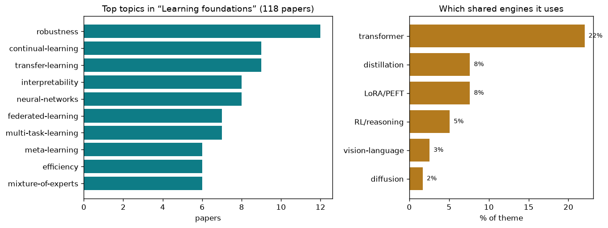

the cross-cutting foundations — how models learn, adapt, shrink, and stay robust
118 papers · the cross-cutting foundations — how models learn, adapt, shrink, and stay robust
Computer vision models work by turning pixels into meaning. A trained model is ultimately a ladder of learned numbers (weights) that encode patterns: edges, textures, objects, scenes. The core tension in modern vision is simple: we have vast models that need vast data to train them, but data is expensive, rare, or sensitive. A medical scan is worth gold. A robot operating in a novel factory floor has no labeled training set. Privacy laws forbid shipping raw images to a server farm.
The deeper problem is that learning is fundamentally a process of compression and generalization. A model that sees 10 million images and learns to recognize dogs has extracted some statistical essence—canine-ness—and thrown away nearly everything else. But that distillation is fragile. Train the same model on dog breeds only, then drop it into a shelter full of mixed breeds: it fails. Change the lighting, the angle, the camera sensor itself: it fails again. A human learns to recognize dogs from dozens of examples and adapts fluidly to new contexts. A neural network trained on ImageNet sees the world through those exact 1.2 million images forever.
This gives rise to three interlocking hard problems. First: how do you learn well when you have almost no data? Second: how do you adapt and keep learning as the world changes without forgetting what you already know? Third: how do you do any of this efficiently—with smaller models, less compute, less power—without sacrificing the quality of understanding?
These are not separate questions. A model that learns slowly and rigidly wastes data and compute. A model that is too small to memorize patterns must extract the essential features—it must learn better, not just cheaper. A system that can adapt on the fly in a changing factory must preserve its old knowledge while absorbing new patterns. The field's real problem is not any single constraint, but the interaction between scarcity, robustness, and efficiency. The question is: how do you build vision systems that learn more from less and do not break in the process?
When you have few examples, every pixel matters. This cluster of work focuses on squeezing maximum learning value from minimal data. Dataset Distillation by Influence Matching synthesizes a tiny set of "super-examples" (sometimes as small as 10 pixels per class) that encode the full learning dynamics of the original dataset, so training on the synthetic set produces models as good as training on thousands of real images. Exemplar-Free Class Incremental Learning takes the opposite approach: instead of distilling data, it distills knowledge directly, learning new classes without storing any old examples, by carefully preserving the geometric structure that separates different classes in the learned representation. Towards Efficient Medical Reasoning with Minimal Fine-Tuning Data shows that a large pretrained vision model can be adapted to specialized medical tasks (diagnosing from scans) by tuning only tiny adapter modules with just a few labeled examples. These approaches share a principle: concentrate information. Make every sample, every parameter, every bit of computation count.
Models can be dramatically compressed by discarding redundancy. What Do Visual Tokens Really Encode reveals that modern vision transformers waste 30–50% of their tokens—they carry almost no information for the task at hand. Saliency-Driven Token Merging for Vision Transformers builds on this by adaptively merging low-salience tokens on the fly, speeding up inference without retraining. When Token Pruning is Worse than Random reveals the flip side: naive pruning can actually hurt performance because some tokens that look "important" statistically interact with each other in complex ways. SegMo and Vision-Oriented Lightweight Neural Architecture Search take the optimization perspective: design the architecture itself to be sparse, with different parts of the model firing for different inputs and regions. The key insight across these papers is that sparsity is not one lever—it is a multidimensional space. You can prune by salience, by redundancy, by structure, by computation budget. The challenge is finding the right sparsity pattern for your constraints.
A model that works only on clean, well-framed images is fragile. Adversarial robustness means the model still makes sense when pixels are slightly perturbed by an attacker, or when the image is corrupted by noise, blur, or weathering. Robustness Under Data Scarcity: Few-Shot Continual Adversarial Training is perhaps the hardest setting: train a model to be adversarially robust while learning new classes on the fly with almost no labeled data. Taming the Long Tail: Rebalancing Adversarial Training addresses a distribution problem—some object classes are rare (the "long tail"), and adversarial training can make them even worse. Mitigating Error Amplification in Fast Adversarial Training shows that single-step adversarial training (needed for speed) has a subtle flaw: gradient noise amplifies, degrading performance—solved by adaptive correction. Verifying Neural Network Robustness with Dual Perturbations tackles formal verification: given a model, can you prove it will not break under any small perturbation? These works recognize that robustness is not free—it costs data, compute, or both. The goal is to pay the cost smartly.
Modern vision begins with a pretrained model (learned from billions of parameters on massive unlabeled image collections). Fine-tuning that model to a new task is fast but risks forgetting. A suite of recent methods adds minimal parameters that adapt the model's behavior without retraining it. S2FT: Parameter-Efficient Fine-Tuning in Sparse Spectrum Domain learns a remapping of weight updates, concentrating changes in a sparse frequency space where they are more effective. Is Parameter Isolation Better for Prompt-Based Continual Learning? uses a shared pool of textual prompts (and a mixture-of-experts routing strategy) to handle dozens of sequential tasks, with each prompt protected by history-aware masking. AdaBet: Gradient-Free Layer Selection goes further: which layers of the network should you even update? Rather than computing gradients (expensive), it uses a simple voting scheme to rank layers, then tunes only the high-ranking ones. Representation-Steered Incremental Adapter-Tuning couples small adapters with representation alignment to prevent the model from drifting. Preference-Aligned LoRA Merging addresses a new problem: when you have multiple adapted models (say, specialized for different users or domains), how do you merge them back into one without losing their individual strengths? The common thread is: do not retrain the whole model. Redirect its attention, route its computation, or add a tiny steering mechanism.
The real world does not wait for retraining. A camera deployed in a factory will see lighting conditions, camera sensors, or object distributions it never saw during development. Test-time adaptation (TTA) means tweaking the model in seconds, live, on new data, without the original training set. Energy Waveify and Redistribution for Test-Time Adaptation models the model's energy as a wave, allowing efficient redistribution in the feature space to match the new distribution. AcTTA discovers that simply modulating the activation functions (the non-linear gates) can adapt the model better than complex gradient-based methods. Curvature-Aware Zeroth-Order Optimization for Memory-Efficient TTA adapts without gradients at all—it probes the loss landscape with tiny perturbations, estimates curvature, and makes fast updates. FOZO: Forward-Only Zeroth-Order Prompt Optimization adapts only the textual prompts given to a vision-language model, leaving the huge underlying model untouched. Dance Across Shifts handles a harder setting: the distribution keeps changing as time goes on (a "continual" shift). The core realization is that full retraining is a luxury. Make small, targeted changes, fast.
Real data is not isolated. A video contains sound and pixels together. A deployed model network spreads across phones, edge devices, and servers. Sharing raw data violates privacy. Bootstrap Your Own AV-Proxies learns shared representations from audio and video jointly, with adaptive weighting to handle modalities that have different signal quality or importance. OmniZip compresses multiple modalities (images, text, audio, 3D) into a single unified model using a mixture-of-experts router that handles each modality's unique structure. FedMOP: Achieving Enhanced Privacy and Performance in Federated Learning optimizes the privacy-utility tradeoff: what is the minimum noise you must add to updates before sending them over the network? FedRAC: Rolling Submodel Allocation goes deeper: in a federated network, different devices have different computational budgets (a smartphone is not a server). How do you assign submodels fairly so that no device is overloaded? Controllable Federated Prompt Learning at Test Time lets each federated client adapt prompts locally without ever exposing its data. The underlying principle: multi-party learning is not a hack around privacy—it is a richer problem space where constraints force better algorithms.
When a model learns new information, it often forgets the old—this is catastrophic forgetting. Anti-Degradation Lifelong Multi-View Clustering proves that in streaming scenarios, the model's representation quality degrades over time, and proposes null-space projection to protect old knowledge. Beyond What's Shared reveals that intermediate layers throw away unique information—a class-identifying feature computed in an early layer may be erased by later layers. By recovering this information, the model becomes more robust. The Devil Is in Gradient Entanglement shows that when learning multiple tasks at once, gradients for different tasks can interfere with each other, wasting computation. An energy-aware coordinator detects interference and re-weights task gradients. Concept-Guided Fine-Tuning steers the model toward semantic concepts (e.g., "the image is a dog-like shape," not just "this is a dog") to avoid spurious correlations that break under distribution shift. The thread connecting these: knowledge is fragile. Preserve structure, detect interference, understand what the model really learned.
Training is expensive. Computing gradients across billions of parameters, storing intermediate activations, adjusting weights—this is the bottleneck for large models. A cluster of methods sidestep gradients entirely. GR-Gauge formulates training as a 2D voting problem: instead of optimizing each weight independently, it detects redundancy in gradients and makes few, high-impact weight updates. Curvature-Aware Zeroth-Order Optimization probes the loss landscape without gradients—imagine a blind person finding a valley by tossing pebbles and listening. AdaBet ranks layers by importance without gradient backprop, selecting which ones to update. NTK-Guided Implicit Neural Teaching uses neural tangent kernel theory to optimize knowledge distillation: which samples teach the student model most efficiently? HyperNAS speeds up neural architecture search by using a hypernetwork to predict how good a new architecture will be before training it. These approaches recognize that gradients are one tool among many. Often, the smartest move is to avoid computing them altogether.
Several problems are converging on solution. Data scarcity is no longer a blocker—distillation and few-shot adaptation now allow training specialized models on tens of examples instead of millions. Test-time adaptation is practical; models can shift their behavior in seconds to new distributions. Parameter-efficient fine-tuning is standard; adding 1–5% of parameters via adapters or LoRA can now match full retraining on most tasks. Model compression via pruning and sparsity is understood well enough that production models routinely run 2–10x faster with minimal quality loss.
But the hard edges remain. Combining multiple constraints simultaneously (few-shot, adversarially robust, continually learning, low-memory) still breaks models. Formal guarantees about robustness are rare outside toy problems. Understanding what makes a representation generalizable—why one model transfers across tasks and another does not—remains more art than science. Most critically: the interaction between efficiency and robustness is still poorly understood. A model optimized to be fast often becomes brittle. The field is moving toward joint optimization, but the tradeoff curve is still steep. The next horizon is systems that learn efficiently, adapt fluidly, and fail gracefully when they encounter something genuinely new.
The theme above is broad. Here are the distinct sub-problems inside it — each in plain terms: the big-picture problem, then how the field tackles it, then representative papers.
The problem. A network trained on one batch of tasks tends to overwrite what it already knew the moment it learns something new, because every weight is shared and gradient descent has no reason to protect the past. This is the central tension of any system that must keep learning after deployment: staying flexible enough to absorb new categories while staying stable enough to remember the old ones. It matters for the theme because real learners rarely get all their data at once, so a model that can only be trained in one shot is brittle in the world.
The approaches. One family fences off the past by penalizing changes to weights that mattered for old tasks, correcting the classic Fisher-based penalty or preserving the geometric separation between class boundaries. A second family sidesteps interference by giving each task its own capacity, routing tasks to specialized experts or growing and reusing pieces of the backbone on demand. A third leans on frozen pretrained models and only learns small steering signals, prompts, or adapters per task, and a fourth reframes the update itself, looking ahead in the loss landscape or scheduling how much old data to rehearse under a compute budget so that plasticity and stability are traded off deliberately rather than by accident.
▸ Fencing off the weights that hold old knowledge
Problem. When one shared set of weights carries everything a model knows, the update for a new task freely overwrites the exact parameters that encoded the old ones. There is nothing telling gradient descent which weights are load-bearing for the past. Approach. Measure how much each weight or each class boundary mattered before, then penalize or geometrically constrain changes to those specific directions while leaving the rest free to move.
The fundamental point. Forgetting is not a failure of capacity but of accounting — knowledge is unevenly distributed across weights, so protecting the few that matter is enough to keep the past.
Elastic Weight Consolidation Done Right for Continua… · Exemplar-Free Class Incremental Learning via Preserv… · A Faster Path to Continual Learning · Anti-Degradation Lifelong Multi-View Clustering
▸ Giving each task its own room instead of sharing one brain
Problem. If every task competes for the same parameters, they must overwrite each other; the interference is structural, not incidental. The question is how to hand out separate capacity without the model ballooning or losing the ability to share what is genuinely common. Approach. Route each task to its own expert, or dynamically grow, reuse, adapt, or skip pieces of the backbone based on how hard and how similar the new task is.
The fundamental point. Catastrophic forgetting can be dissolved rather than fought — if tasks never touch the same parameters, there is nothing to overwrite, and the real problem becomes deciding when to share versus separate.
Spectral Mixture-of-Experts for Continual Learning · CHEEM: Continual Learning by Reuse, New, Adapt and S… · Exemplar-Free Continual Learning for State Space Mod… · Few-Shot Hybrid Incremental Learning: Continually Le…
▸ Freeze the model, learn only a small steering signal
Problem. A large pretrained model already holds broad competence; fully retraining it for each new task both wastes that competence and risks destroying it. The challenge is to redirect a frozen network toward a new task while touching almost none of it. Approach. Keep the backbone frozen and learn only tiny per-task pieces — prompts, adapters, or representation-steering signals — often pooled and protected so new prompts do not clobber old ones.
The fundamental point. Most of what continual learning needs is already latent in a frozen pretrained model; new tasks require steering, not rewriting, which sidesteps forgetting almost entirely.
Is Parameter Isolation Better for Prompt-Based Conti… · Representation-Steered Incremental Adapter-Tuning fo… · Critical Patch-Aware Sparse Prompting with Decoupled… · Decouple Your Discovery and Memory in Continual Gene…
▸ Rethinking the update itself to trade plasticity for stability on purpose
Problem. The plasticity-versus-stability tension is usually resolved by accident inside a single gradient step, which is myopic about the future and blind to a real compute budget. Deciding how much to change and how much old data to revisit should be a deliberate choice. Approach. Look ahead into the future loss landscape before committing an update, or schedule how much memory to rehearse under a fixed compute budget so the flexibility-memory balance is set explicitly.
The fundamental point. Whether a model forgets is decided by the shape of the update, not just its data — a step that respects the future geometry of the loss can be both plastic and stable at once.
Smart Replay: Adaptive Scheduling of Memory Rehearsa… · Beyond Myopic Alignment: Lookahead Optimization for …
The problem. The models that work best are usually far too big and slow to run on a phone, a camera, or any device with a real power and memory budget. The hard part is that raw size is not the same as useful capacity: some of the computation is genuinely load-bearing and some is redundant, and cutting the wrong part quietly wrecks accuracy. Shrinking well means understanding what a network actually needs, which connects to the theme's goal of getting more capability out of less compute.
The approaches. Some work studies which parts are dispensable in the first place, showing that visual tokens are sparse and redundant, or that naive token pruning can be worse than random deletion, and turning that insight into content-aware sparsity or saliency-based merging. Another line removes structure outright, purging class-harmful weights to specialize a model or searching for efficient architectures under an adaptive budget. A parallel effort attacks the number format rather than the shape, reconditioning activations so networks can run in low-bit or FP8 arithmetic without the outliers that normally break quantization, and a further strand rethinks the backbone itself with parallel sequence models that scale more cheaply than attention.
▸ Finding out which parts are actually dispensable
Problem. Shrinking a model safely requires knowing which computation is load-bearing and which is redundant, but that is not obvious — naive pruning can hurt more than deleting parts at random. Cutting blind quietly wrecks accuracy. Approach. Systematically analyze where redundancy really lives, showing visual tokens are sparse and that importance is subtle, then use those findings to drive content-aware sparsity or saliency-guided token merging instead of guessing.
The fundamental point. Size and useful capacity are different things; much of a network's computation is genuinely redundant, and the hard, prior question is measuring which parts before you cut.
When Token Pruning is Worse than Random: Understandi… · What Do Visual Tokens Really Encode: Uncovering Spar… · SegMo: Co-Designing Content-Aware Sparsity and Local… · Saliency-Driven Token Merging for Vision Transformer…
▸ Removing structure and searching for lean architectures
Problem. Even after you know a model is bigger than it needs to be, you must decide what shape to leave behind — which weights to delete outright, or which architecture to pick under a real hardware budget. Doing this by hand does not scale. Approach. Purge weights that are actively harmful for the target classes to specialize a model, or search for efficient architectures with budget-adaptive evaluation and hypernetwork-based performance prediction.
The fundamental point. A model tuned for everything is wasteful for any one job — specializing by removing the parts that fight the target, and automating the search for the right shape, recovers most of the lost efficiency.
NuWa: Deriving Lightweight Class-Specific Vision Tra… · Vision-Oriented Lightweight Neural Architecture Sear… · HyperNAS: Enhancing Architecture Representation for … · Progressive Neural Architecture Generation
▸ Changing the number format, not the shape
Problem. Even a well-sized network is expensive if every number is stored in full precision, but dropping to low-bit or FP8 arithmetic normally breaks because a few extreme activation outliers blow up the quantization range. Approach. Trace the outliers to their mechanical source — colinear weight matrices and inflated singular values — and recondition the network so those outliers never form, letting it run in low precision cleanly.
The fundamental point. The outliers that wreck quantization are a manufactured artifact of how weights are structured, not a property of the data — remove the cause and low-precision inference stops being lossy.
S2D: Selective Spectral Decay for Quantization-Frien… · TWEO: Transformers Without Extreme Outliers Enables …
▸ Replacing the attention backbone with something cheaper to scale
Problem. Attention's cost grows quadratically with sequence length, so the backbone itself becomes the bottleneck no matter how much you prune or quantize around it. A different core primitive is needed to scale cheaply. Approach. Build vision foundation models on parallel sequence and state-space architectures that achieve sub-quadratic scaling while retaining accuracy.
The fundamental point. The efficiency ceiling is set by the backbone's scaling law, not by its trimmings — swapping attention for a sub-quadratic primitive moves the whole ceiling.
Scaling Parallel Sequence Models to Vision Foundatio… · TAS-LoRA: Transformer Architecture Search with Mixtu…
The problem. A model deployed in the wild meets weather, sensors, lighting, and populations it never saw during training, and its accuracy silently degrades. The catch is that at test time there are no labels to correct it and often no access to the original training data, so the model has to fix itself from the unlabeled stream it is currently seeing. This is the theme's adaptation problem in its purest form: staying accurate as the input distribution drifts, without a human in the loop.
The approaches. Test-time adaptation methods tweak a running model from its own predictions, some by recalibrating batch statistics or class distributions, others by making activation functions or prompts learnable, and several by avoiding backpropagation entirely with zeroth-order or forward-only updates to fit tiny devices. A related domain-generalization line tries to be robust before deployment, learning features that survive across domains by filtering out domain-specific frequencies, reasoning about causal structure, or aligning to a broad foundation model. When shifts arrive in a never-ending sequence, continual test-time methods add machinery, style codebooks or lookahead, so that adapting to today's distribution does not erase yesterday's competence.
▸ Correcting a live model from its own unlabeled predictions
Problem. Once deployed, a model meets weather, sensors, and lighting it never trained on and silently loses accuracy, yet there are no labels at test time and often no access to the original training data. It must fix itself from the stream it is currently seeing. Approach. Recalibrate the running model online using only its own outputs — reshaping batch or class statistics, modeling category distributions, or making activations learnable — to realign to the current input.
The fundamental point. A model carries enough internal signal in its own predictions and statistics to detect and correct its own drift, without labels or source data.
Multi-modal Test-time Adaptation via Adaptive Probab… · Energy Waveify and Redistribution for Test-Time Adap… · AcTTA: Rethinking Test-Time Adaptation via Dynamic A… · Bridging Domain Expertise and Generalization for Per…
▸ Adapting without backpropagation for tiny devices
Problem. Test-time adaptation usually needs gradients and stored activations, which is exactly what a phone or camera cannot afford. Fixing the model in the field must cost almost no memory. Approach. Update the model with zeroth-order or forward-only methods that estimate the needed direction from function evaluations alone, tuning prompts or parameters without a backward pass.
The fundamental point. Effective on-device adaptation does not require gradients at all — perturbing forward passes can steer a model, which decouples adaptation from the memory cost of backprop.
Curvature-Aware Zeroth-Order Optimization for Memory… · FOZO: Forward-Only Zeroth-Order Prompt Optimization …
▸ Building in robustness before deployment ever happens
Problem. Waiting to adapt after a shift arrives is risky. A better model should already ignore weather, camera style, hospital scanner brand, or background texture when those details are not the real cause of the answer. Approach. These works remove domain-specific patterns, reason about stable causes, and penalize shortcuts that change from one setting to another. They train the model to keep the part of the signal that travels across worlds.
The fundamental point. Generalization is separation: preserve the causal signal and discard local noise. The math matters because robustness depends on which variation the representation chooses to ignore.
CGU-BAYES: Causal Graph Uncertainty-Guided Bayesian … · Through the Frequency Lens: Cross-Domain Generalisab… · Concept-Guided Fine-Tuning: Steering ViTs away from … · Measure the Feature Universe: Topology-based Pseudo …
▸ Adapting to an endless stream without erasing yesterday
Problem. When shifts arrive one after another forever, naively adapting to today's distribution slowly destroys the competence gathered from all the earlier ones — the same forgetting problem, now at test time. And it may be spread across federated clients each drifting differently. Approach. Add memory machinery — style codebooks, forward-facilitating style transfer, or per-client adaptive learning rates — so each adaptation builds on rather than overwrites the accumulated adjustment.
The fundamental point. Continual test-time adaptation is stability-plasticity all over again: without a mechanism to preserve past adjustments, chasing the current distribution is self-defeating.
Dance Across Shifts: Forward-Facilitation Continual … · Fed-ADE: Adaptive Learning Rate for Federated Post-a… · Towards Stable Federated Continual Test-Time Adaptat…
The problem. A model can be wrong for two very different reasons: the world changed in a messy way, or someone deliberately found a tiny change that makes the model fail. To a person the input may still look normal. To the model, the change may cross a fragile internal boundary. The hidden question is distance to failure: how far is an ordinary example from a bad decision, a stolen behavior, or a hidden backdoor?
The approaches. Attack papers measure the weak spots by searching for small moves that flip decisions, transfer across models, or reveal secrets. Defense papers try to enlarge the margin around correct answers, train on hard cases, certify that whole sets of changes are safe, or remove poisoned behavior. The mathematical principle is robustness as preserved meaning: changes that should not alter the answer must stay on the same side of the decision boundary.
▸ Crafting attacks that transfer to unseen models
Problem. An attacker rarely has the target model in hand, so a perturbation is only dangerous if it fools models the attacker never saw. The difficulty is finding perturbations general enough to cross the gap between surrogate and target. Approach. Push perturbations into shared semantic space via contrastive projection, prune parameters to equalize their importance, augment local perturbations across subspaces, or meta-learn over a pool of base attacks for stealth and strength.
The fundamental point. Adversarial vulnerability is shared across models because they rely on the same fragile, spurious cues — attacks transfer precisely to the extent that models learned the same shortcuts.
VCP-Attack: Visual-Contrastive Projection for Transf… · Improving Adversarial Transferability with Local Per… · RaPA: Enhancing Transferable Targeted Attacks via Ra… · DASH: A Meta-Attack Framework for Synthesizing Effec…
▸ Making adversarial training fast, fair, and architecture-aware
Problem. The main defense — training on adversarial examples — is slow, prone to error amplification in its fast single-step form, biased against rare classes, and interacts badly with transformer internals. It must be made practical. Approach. Correct the gradient in fast single-step training, rebalance perturbation strength for long-tailed classes, and analyze where in a transformer (like residual paths) robustness actually breaks to harden it specifically.
The fundamental point. Robust training is not one uniform recipe — its failures are structured (by step size, class frequency, and architecture), so targeting each specific weak point is what makes defense affordable.
Mitigating Error Amplification in Fast Adversarial T… · Taming the Long Tail: Rebalancing Adversarial Traini… · Towards Robust Vision Transformers: Path Dependency … · Robustness Under Data Scarcity: Few-Shot Continual A…
▸ Proving robustness instead of hoping for it
Problem. Empirical defenses only show a model survives the attacks tried so far; a truly reliable system needs a guarantee that no perturbation within a whole family can flip it. That requires proof, not testing. Approach. Use formal verification that certifies a network's output is stable against entire families of perturbations, including universal and arbitrary ones, under a single unified formulation.
The fundamental point. Reliability under attack can be a proven property rather than an observed one — certification shifts the burden from surviving known attacks to ruling out all attacks in a class.
Verifying Neural Network Robustness with Dual Pertur…
▸ Owning, cleaning, and de-biasing the model as an asset
Problem. Once a model is valuable it becomes a target for theft, hidden backdoors, harmful fine-tuning, and it may carry unfair biases baked into its weights. Reliability here is about the integrity and ownership of the weights themselves, not just input robustness. Approach. Fingerprint models to prove theft, edit or rectify backdoored behavior, immunize weights so harmful fine-tuning cannot make progress, and extract inherently less-biased subnetworks from a vanilla model.
The fundamental point. A model's weights are an asset with their own integrity problem — trust after it leaves the lab depends on provable ownership and on surgically fixing the behavior encoded inside.
Immunizing Models Against Harmful Long-Horizon Fine-… · Bias In, Bias Out? Finding Unbiased Subnetworks in V… · FORCE: Transferable Visual Jailbreaking Attacks via … · CamPI: Physical Adversarial Examples through Camera …
The problem. Much of the data a model would want to learn from can never be pooled in one place: it is spread across hospitals and phones that cannot share raw records, or it exists only as a handful of labeled examples, or it lives frozen inside models other people already trained. The shared challenge is squeezing knowledge out of these fragmented and limited sources without the luxury of a big central dataset. This is the theme's data-efficiency frontier, learning more from less and from what already exists.
The approaches. Federated methods train across devices by exchanging models or compact proxies instead of data, tackling non-uniform distributions, privacy budgets, and unequal hardware, sometimes compressing communication to a single snapshot. When labels are scarce, few-shot, meta-learning, and dataset-distillation approaches repair noisy samples, align across domains, or boil a huge dataset down to a tiny synthetic one that still teaches well. And a fast-growing line recycles existing weights directly, merging several fine-tuned experts by isolating each task's essential subspace or task vectors, transferring weights between model sizes, and even predicting good weights so a new model starts most of the way trained.
▸ Training across data that can never be pooled
Problem. Much data lives on hospitals and phones that legally or physically cannot share raw records, and those sources differ in distribution, privacy needs, and hardware. Learning from all of it without ever centralizing it is the core constraint. Approach. Exchange models or compact proxies instead of data, aligning heterogeneous client distributions, honoring differential-privacy budgets, matching model size to device capacity, and compressing communication down toward a single snapshot.
The fundamental point. You do not need the data in one place to learn from it — knowledge can travel as models, gradients, or proxies, turning a data-pooling problem into a communication-and-alignment problem.
HFedATM: Hierarchical Federated Domain Generalizatio… · FedAlign: Differentially Private Distribution Alignm… · OS-Fed: One Snapshot Is All You Need · FedRAC: Rolling Submodel Allocation for Collaborativ… · FedMOP: Achieving Enhanced Privacy and Performance i…
▸ Learning well from only a handful of examples
Problem. Sometimes the data is not scattered but simply scarce — a few labeled samples, possibly noisy, possibly from a different domain than where the model will be used. The model must extract a generalizable prior from almost nothing. Approach. Use meta-learning and few-shot methods that learn how to learn, repairing noisy samples, aligning across domains, and treating data-centric priors like visual prompts as the core transferable mechanism.
The fundamental point. With too few examples, the leverage moves from the data to the prior — what generalizes is the learned procedure for adapting, not any single sample.
Data-Centric Meta-Learning for Robust Few-Shot Gener… · Interpretable Cross-Domain Few-Shot Learning with Re… · DDSF: Robust Few-Shot Learning via Disentangled Subs…
▸ Boiling a huge dataset down to a tiny synthetic one
Problem. Storing and training on massive datasets is expensive, yet most of their teaching value may be compressible. The challenge is producing a small synthetic set that still trains a model as well as the original, without being fooled by evaluation shortcuts. Approach. Match the learning dynamics or influence of the full data with a tiny synthetic set, while exposing how soft labels and compute can mask real data quality, and use distribution-matching coresets as an honest baseline.
The fundamental point. A dataset's power to teach is separable from its size — most of it is redundant, and what a model needs can be distilled into a fraction, provided the evaluation is not gamed by soft labels.
Dataset Distillation by Influence Matching · Rethinking Dataset Distillation: Hard Truths About S… · FAST: Topology-Aware Frequency-Domain Distribution M…
▸ Recycling weights that are already trained
Problem. Enormous knowledge is frozen inside models other people already trained, but combining several fine-tuned experts naively makes them interfere, and starting every new model from scratch wastes existing weights entirely. Approach. Merge fine-tuned experts by isolating each task's essential subspace or task vectors to avoid interference, transfer weights across model sizes, and even predict good initial weights so a new model starts most of the way trained.
The fundamental point. Trained weights are a reusable resource, not a one-off output — knowledge lives in identifiable subspaces that can be combined, transferred, and even forecast without any retraining.
Model Merging in the Essential Subspace · Bridging Domains through Subspace-Aware Model Mergin… · DuetMerging: Synergizing Dynamic and Static Strategi… · Sparse Task Vector Mixup with Hypernetworks for Effi… · Learning from Oblivion: Predicting Knowledge-Overflo…
Each cluster connects a family of related papers from first principles, with an animated diagram and the papers grouped by approach.

Left: the theme's most common topics. Right: how much it leans on each shared engine.
| Paper | Code |
|---|---|
| ARC Is a Vision Problem | lillian039/VARC |
| AdaBet: Gradient-free Layer Selection for Efficient Training of Deep Neural Networks | cybertronai/gradient- |
| Anti-Degradation Lifelong Multi-View Clustering | lee-xingfeng/ALMC |
| Batch Loss Score for Dynamic Data Pruning | mrazhou/BLS |
| Bias In, Bias Out? Finding Unbiased Subnetworks in Vanilla Models | ivanluizmatos/BISE |
| CHEEM: Continual Learning by Reuse, New, Adapt and Skip – A Hierarchical Exploration-Explo | savadikarc/cheem |
| CIGMA: Causal Information-Gain Mechanistic Attribution of Attention Heads in Vision Transf | MaishaMaliha1/CIGMA.git |
| Concept-Guided Fine-Tuning: Steering ViTs away from Spurious Correlations to Improve Robus | yonisGit/cft |
| Convexity-Aware Noise Calibration: A Self-Supervised Framework for Noise-Level-Unknown Ima | zhanzhanblue/CANC |
| Critical Patch-Aware Sparse Prompting with Decoupled Training for Continual Learning on th | laymond1/cps- |
| Curvature-Aware Zeroth-Order Optimization for Memory-Efficient Test-Time Adaptation | Hollyming/CAZO |
| DASH: A Meta-Attack Framework for Synthesizing Effective and Stealthy Adversarial Examples | siege-research/DASH |
| Dance Across Shifts: Forward-Facilitation Continual Test-Time Adaptation through Dynamic S | z1358/DAS |
| Dataset Distillation by Influence Matching | hrtan/infmatch |
| Energy Waveify and Redistribution for Test-Time Adaptation: A Control System Perspective | wongzbb/APT |
| Exemplar-Free Class Incremental Learning via Preserving Class-Discriminative Structure | lambor9973/cds |
| FOZO: Forward-Only Zeroth-Order Prompt Optimization for Test-Time Adaptation | eVI-group-SCU/FOZO |
| Fed-ADE: Adaptive Learning Rate for Federated Post-adaptation under Distribution Shift | h2w1/Fed-ADE |
| FedMOP: Achieving Enhanced Privacy and Performance in Federated Learning | zyl123456aB/FedMOP |
| Gated KalmaNet: A Fading Memory Layer Through Test-Time Ridge Regression | gkamradt/LLMTest_ |
| Global-Graph Guided and Local-Graph Weighted Contrastive Learning for Unified Clustering | hhq-sr/GLGC |
| Learning from Oblivion: Predicting Knowledge-Overflowed Weights via Retrodiction of Forget | jjh6297/KNOW |
| MSPT: Efficient Large-Scale Physical Modeling via Parallelized Multi-Scale Attention | pedrocurvo/mspt |
| Multi-modal Test-time Adaptation via Adaptive Probabilistic Gaussian Calibration | XuJinglinn/AdaPGC |
| NexusFlow: Unifying Disparate Tasks under Partial Supervision via Invertible Flow Networks | ark1234/NexusFlow |
| NuWa: Deriving Lightweight Class-Specific Vision Transformers for Edge Devices | CGCL-codes/NuWa |
| OmniZip: Learning a Unified and Lightweight Lossless Compressor for Multi-Modal Data | facebook/zstd |
| Prime Once then Reprogram Locally: An Efficient Alternative to Black-Box Prompt Optimizati | yunbeizhang/AReS |
| ProxyFL: A Proxy-Guided Framework for Federated Semi-Supervised Learning | DuowenC/FSSLlib |
| RaPA: Enhancing Transferable Targeted Attacks via Random Parameter Pruning | molarsu/RaPA |
| Representation-Steered Incremental Adapter-Tuning for Class-Incremental Learning with Pre- | zjrzjrz/RSIAT |
| Rethinking Knowledge Transfer in Image Quality Assessment: A Perceptual Preference Structu | Li-aobo/PreSTA |
| Rethinking UMM: Visual Generation Masked Modeling for Efficient Image-Only Pre-training | LINs-lab/IOMM |
| Robustness Under Data Scarcity: Few-Shot Continual Adversarial Training for Evolving | aup520/FS_ |
| SegMo: Co-Designing Content-Aware Sparsity and Locally-Cohesive Segment Parallelism for Ef | LIHAOJUAN/SegMo |
| SinGeo: Unlock Single Model's Potential for Robust Cross-View Geo-Localization | Yangchen-nudt/SinGeo |
| Taming the Long Tail: Rebalancing Adversarial Training via | zhang-lilin/RobustLT |
| TaskIT: Memory-Efficient Fine-Tuning of Multi-LoRA LLMs via Cross-Task Importance Transfer | haojuns/TaskIT |
| TeFlow: Enabling Multi-frame Supervision for Self-Supervised | Kin-Zhang/TeFlow |
| TopoSlide: Topologically-Informed Histopathology Whole Slide Image Representation Learning | plevritis-lab/TopoSlide |
| Towards Efficient Medical Reasoning with Minimal Fine-Tuning Data | mihara-bot/DIQ |
| Towards Stable Federated Continual Test-Time Adaptation in Wild World | LiwenWang919/BPFedCTTA |
| Turning Pre-Trained Vision Transformers into End-to-End Histopathology Whole Slide Image M | WonderLandxD/E2E-ViT |
| Unlocking Pre-trained Weights: Parameter Inheritance for Zero-Shot Initialization | mathieuxu/PITH-Parameter- |
| What Do Visual Tokens Really Encode: Uncovering Sparsity and Redundancy | EIT-NLP/EmbedLens |
Speed up continual learning by exploiting hidden symmetries in gradient calculations without losing accuracy.
First-principles read. This paper is about speeding up continual learning methods that protect old skills by seeking flatter loss regions. The everyday problem is learning a new task without forgetting earlier tasks, but not paying several extra gradient computations every step.
Paper focus. C-Flat, a promising optimization-based continual learning method that encourages uniformly low-loss regions, requires three additional gradient computations per iteration imposing substantial computational overhead.
Hidden idea. The hidden mathematical idea is skipping redundant flatness checks: identify parts of the flatness-aware update that become direction-stable, then avoid recomputing expensive terms when they no longer change the decision much.
Why it matters. This matters because continual learning needs to run across long task sequences. If the stability protection is too expensive, it will not be used; accelerating the optimizer keeps the anti-forgetting principle practical.
Problem C-Flat, a promising optimization-based continual learning method that encourages uniformly low-loss regions, requires three additional gradient computations per iteration imposing substantial computational overhead.
Approach Proposed C-Flat Turbo identifying direction-invariant components in first-order flatness gradients enabling selective skipping of redundant SAM and GAM computations. Introduced stage-wise linear turbo-step scheduler with adaptive triggering mechanism based on observed gradient stabilization across tasks.
Contribution First acceleration of flatness-aware continual learning optimizer by exploiting direction-invariant gradient components and observed stabilization trends across tasks.
Wavelet transforms enable parameter-free transfer of model weights between different sizes, scaling down or up efficiently.
First-principles read. This paper is about transferring a model's knowledge both from large to small and from small to large. The everyday problem is resizing a learned machine without throwing away useful structure or inventing incompatible parts.
Paper focus. Transferring knowledge from source models to target models of different sizes is challenging. Current methods treat Small-to-Large (S2L) and Large-to-Small (L2S) scaling as separate problems, with S2L using parameter synthesis and L2S using parameter selection, leading to.
Hidden idea. The hidden mathematical idea is multi-resolution weight signals: treat the model weights like a signal that can be decomposed into coarse and fine components with wavelets. Downscaling keeps the coarse pattern; upscaling restores higher-resolution structure from the same representation.
Why it matters. This matters because deployment needs many model sizes. A single bidirectional rule makes scaling less like handcrafting separate tricks and more like changing resolution while preserving the learned pattern.
Problem Transferring knowledge from source models to target models of different sizes is challenging. Current methods treat Small-to-Large (S2L) and Large-to-Small (L2S) scaling as separate problems, with S2L using parameter synthesis and L2S using parameter selection, leading to fragmented approaches.
Approach BoT treats model weights as continuous signals discretized at different resolutions. It uses Discrete Wavelet Transform (DWT) for downsampling (L2S) and Inverse DWT (IDWT) for upsampling (S2L), where the decomposition level dynamically scales across model sizes in a parameter-free manner.
Contribution Using wavelet transforms to unify bidirectional model scaling by treating models as multi-resolution discretizations of the same signal.
Treats visual reasoning puzzles as image-to-image translation using Vision Transformers with test-time fine-tuning on each puzzle.
First-principles read. The paper argues that ARC puzzles should be treated as visual reasoning, not only text or program search. The everyday problem is seeing patterns in colored grids and applying the transformation to a new grid.
Paper focus. The Abstraction and Reasoning Corpus (ARC) is a benchmark of visual analogy and rule-induction puzzles that state-of-the-art LLMs and program synthesis systems struggle with. Existing approaches encode ARC grids as text tokens or search over code programs, neither of which.
Hidden idea. The hidden mathematical idea is visual rule induction: infer transformations from spatial structure directly in the image-like grid representation.
Why it matters. This matters because converting ARC to text throws away the geometry of the puzzle. Treating ARC as vision preserves the spatial evidence the task is built from.
Problem The Abstraction and Reasoning Corpus (ARC) is a benchmark of visual analogy and rule-induction puzzles that state-of-the-art LLMs and program synthesis systems struggle with. Existing approaches encode ARC grids as text tokens or search over code programs, neither of which natively captures the 2D spatial structure and visual transformations that ARC tasks fundamentally involve.
Approach The proposed approach (VARC) represents each ARC example as an image: each grid cell is rendered as a colored pixel patch, and the full input+output demonstration pairs are concatenated into a single canvas image. A Vision Transformer (ViT-B/16, optionally ViT-L/16) is trained to predict the output canvas given the input canvas in an image-to-image translation framework, with the output decoded via a pixel-wise classification head over the 10 ARC colors plus background. Pretraining is done on a large set of synthetically generated ARC-like puzzles (program-generated grids with systematic visual transformations including rotation, reflection, copy, color substitution, pattern extension). At test time, each ARC puzzle is addressed via test-time training (TTT): the ViT is fine-tuned for a small number of gradient steps directly on the demonstration pairs of the current puzzle (treating them as training examples), then applied to predict the test output. The TTT objective is a cross-entropy loss over output pixel colors given input canvas representations. The model achieves 60.4% accuracy on ARC-1 (public evaluation set) without any symbolic program search or language model components, relying entirely on visual pattern learning and TTT.
Contribution Formulating ARC as an image-to-image translation task solved by a Vision Transformer with synthetic pretraining on visual transformations and per-puzzle test-time training, demonstrating competitive ARC performance through pure visual pattern learning without program synthesis or LLMs.
Make activation functions learnable during test time to adapt gradient flow and feature shifts without source data.
First-principles read. AcTTA is about adapting a model at test time by changing how its activation functions respond. The everyday problem is that a model trained in one visual condition may suppress useful signals in another because its internal threshold is fixed in the wrong place.
Paper focus. Test-time adaptation (TTA) methods focus primarily on recalibrating normalization layers to handle distribution shifts, overlooking the activation function as an adaptable component. Activation functions inherently shape feature geometry and govern gradient propagation, but.
Hidden idea. The hidden mathematical idea is adaptive activation geometry: shift the activation center and adjust slopes on each side so features under a new domain can still pass information and gradients through the network.
Why it matters. This matters because adaptation is usually treated as changing normalization statistics. Activation boundaries are also decision surfaces, and moving them can recover information that would otherwise be clipped away.
Problem Test-time adaptation (TTA) methods focus primarily on recalibrating normalization layers to handle distribution shifts, overlooking the activation function as an adaptable component. Activation functions inherently shape feature geometry and govern gradient propagation, but remain static during adaptation. Under distribution shift, zero-centered activations (ReLU, GELU) can suppress informative responses below their fixed activation boundary, leading to information loss and gradient vanishing.
Approach AcTTA reparameterizes conventional activation functions into learnable forms with three parameters: (1) Adaptive center c: Shifts the activation boundary from zero-centered rigidity to align with shifted feature distributions. (2) Asymmetric gradient slopes λ_neg, λ_pos: Allows gradient scale to adapt asymmetrically across regions (negative and positive). The generalized activation function: g(x) = φ(x-c) + [λ_neg + (λ_pos - λ_neg)σ(β(x-c))](x-c), where φ is base activation (ReLU/GELU) and σ is sigmoid gating. When initialized with λ_neg = λ_pos = 0 and c = 0, recovers original φ(x), ensuring compatibility with pretrained models. During test-time adaptation, these three parameters are jointly optimized to enable the activation to locally adjust gradient flow and activation center according to target domain statistics. AcTTA is modular and objective-agnostic: it integrates with existing TTA methods (TENT, EATA, SAR, DeYO, ROID, CMF) by making activation parameters learnable alongside or instead of normalization affine parameters. For CNNs with BatchNorm, best performance freezes BN affine parameters and adapts only activation parameters. For ViT with LayerNorm, adapts both LN and activation parameters. Enables stable optimization with 10× larger learning rates than normalization-only methods.
Contribution First TTA framework leveraging adaptive activation modulation as primary adaptation mechanism, showing that adjusting activation behavior is more effective than normalization parameter updates under domain shift.
Train neural networks faster by selectively updating important layers without computing full gradients.
First-principles read. AdaBet is about choosing which neural network layers to train without computing gradients for every layer. The everyday problem is that updating an entire deep model costs memory and compute, even when only some layers need change.
Paper focus. Training large neural networks is computationally expensive. Gradient-free methods that avoid backpropagation for all layers could reduce memory and compute requirements.
Hidden idea. The hidden mathematical idea is gradient-free layer importance estimation: infer which layers are worth updating from cheaper signals, then allocate training effort selectively.
Why it matters. This matters because training efficiency often depends on avoiding unnecessary backpropagation. Layer selection can reduce cost while keeping adaptation focused on the parts of the model that matter.
Problem Training large neural networks is computationally expensive. Gradient-free methods that avoid backpropagation for all layers could reduce memory and compute requirements.
Approach AdaBet proposes adaptive layer selection without gradient computation, selecting which layers to update during training based on layer importance estimates.
Contribution Gradient-free approach to adaptive layer selection for efficient training.
Null-space projection mathematically prevents new view knowledge from interfering with retained historical information.
First-principles read. This paper is about clustering data as new sensor views keep arriving over time. The everyday problem is that adding a new camera, thermal stream, or audio view should improve grouping without corrupting what older views already taught.
Paper focus. In real-world scenarios, new views are continuously collected over time, forming a dynamic view stream. While lifelong multi-view clustering is needed for such evolving data, large discrepancies across views make it challenging to learn new knowledge while preserving previously.
Hidden idea. The hidden mathematical idea is null-space protection: project new prototype updates into directions that do not interfere with the old prototype subspace, then fuse them cautiously over time.
Why it matters. This matters because lifelong learning fails when every update rewrites memory. Orthogonalizing new knowledge gives streaming multi-view clustering a mathematical way to learn without degrading.
Problem In real-world scenarios, new views are continuously collected over time, forming a dynamic view stream. While lifelong multi-view clustering is needed for such evolving data, large discrepancies across views make it challenging to learn new knowledge while preserving previously acquired information. Existing consistency alignment or knowledge distillation strategies cannot fundamentally prevent knowledge degradation since new knowledge inevitably interferes with the learned representation space.
Approach Anti-degradation Lifelong Multi-view Clustering (ALMC) prevents knowledge interference through null-space projection. For each incoming new-view prototype Pn, it computes the projection matrix from PB(PB)^T via SVD to obtain eigenvectors, removes columns with non-zero eigenvalues to get Û, and defines projection matrix P = Û Û^T. The new prototype is projected as q⊥ = P·Pn, ensuring it lies in the orthogonal complement of the old prototype subspace. EMA-based weighted fusion fuses old and new prototypes: PB' = (1-α)PB + α·q⊥. The projection of PB' back onto the old subspace equals (1-α)PB, ensuring old knowledge remains unaffected. Architecture: autoencoder extracts latent features Zv for each view, MLP produces prototypes Uv, cross-attention mechanism derives more discriminative prototypes Pv and features Hv using attention-weighted transformations. For first view, current prototypes guide features; for subsequent views, both current and knowledge-base prototypes guide learning. Features of newly arriving views are projected into null space of preceding views before concatenation. Loss comprises knowledge aggregation loss (reconstruction) and knowledge guidance loss (prototype-guided clustering). Tested on ALOI-10, ALOI-100, OutdoorScene, Oxford4, NUS, and Aloideep3v datasets.
Contribution First work to reveal and mathematically formalize knowledge degradation issue in streaming view clustering, introducing null-space projection anti-degradation mechanism with theoretical proof to prevent new updates from interfering with retained knowledge.
Fixes unreliable neural network behaviors—like hidden attacks or biases—by editing just one model layer per problem.
First-principles read. This paper is about fixing unreliable neural-network behavior without retraining the whole model. The everyday problem is removing a bad shortcut, hidden trigger, or leaked feature after the model is already trained.
Paper focus. Neural networks exhibit unreliable behaviors (neural Trojans, spurious correlations, feature leakage) due to non-robust feature learning. Correcting these issues typically requires arduous data cleaning and expensive model retraining.
Hidden idea. The hidden mathematical idea is attribution-guided rank-one editing: locate the layer where a small directional update most reduces the bad attribution, then apply a compact model edit.
Why it matters. This matters because deployed models often fail in narrow but serious ways. Targeted rectification can correct a behavior with very few clean examples.
Problem Neural networks exhibit unreliable behaviors (neural Trojans, spurious correlations, feature leakage) due to non-robust feature learning. Correcting these issues typically requires arduous data cleaning and expensive model retraining.
Approach Rank-one model editing framework identifying and correcting unreliable behaviors. Attribution-guided layer localization quantifies layer-wise editability using first-order attribution reduction. Dynamic model rectification adapts layer selection for each unreliable behavior. Achieves correction with minimal cleansed samples.
Contribution Attribution-guided layer localization providing surrogate estimate of editability for automatic suspect layer identification; rank-one editing achieving rectification with as few as single cleansed sample.
Merges multi-task models adaptively under distribution shift using uncertainty and contrastive alignment.
First-principles read. BD-Merging: Bias-Aware Dynamic Model Merging with Evidence-Guided Contrastive Learning is about the concrete failure case in its paper focus. The everyday problem is this: Model merging for multi-task learning assumes test data remain clean and distributionally aligned, but in practice test-time distribution shift causes biased predictions and degraded generalization. Two major challenges: test-time bias.
Paper focus. Model merging for multi-task learning assumes test data remain clean and distributionally aligned, but in practice test-time distribution shift causes biased predictions and degraded generalization. Two major challenges: test-time bias from corruption and domain heterogeneity,.
Hidden idea. The hidden mathematical idea is assignment: each pixel, region, or proposed box must be matched to the right object while rejecting nearby lookalikes and background clutter.
Why it matters. This matters because almost every higher-level task depends on locating evidence first. If the system points at the wrong region, later reasoning can sound coherent while being grounded in the wrong place.
Problem Model merging for multi-task learning assumes test data remain clean and distributionally aligned, but in practice test-time distribution shift causes biased predictions and degraded generalization. Two major challenges: test-time bias from corruption and domain heterogeneity, and limited generalization to unseen tasks.
Approach BD-Merging introduces a joint evidential head using Evidential Deep Learning to model uncertainty over a unified label space. It defines an Adjacency Discrepancy Score (ADS) to quantify evidential alignment among neighboring samples, then applies discrepancy-aware contrastive learning to refine merged representations by aligning consistent samples and separating conflicting ones. A debiased router allocates task-specific weights on a per-sample basis guided by ADS.
Contribution Uses evidential uncertainty to capture distributional discrepancies and guide adaptive representation alignment during model merging, enabling sample-level bias detection and adaptive weight allocation under distribution shift.
Speed up deep learning training by dropping redundant samples during training based on their per-batch loss scores.
First-principles read. Batch Loss Score is about training faster by dropping less useful data during learning. The everyday problem is that a huge dataset contains many redundant examples, but importance depends on the current model and the examples it sees together in a batch.
Paper focus. Training deep neural networks on large-scale datasets is computationally expensive. Data pruning aims to identify and remove redundant or less important samples to accelerate training without significantly degrading model performance.
Hidden idea. The hidden mathematical idea is batch-context data valuation: score examples by their loss behavior relative to the current batch, then prune dynamically as learning changes.
Why it matters. This matters because data efficiency is not fixed before training. Dynamic pruning spends computation on examples that still teach the model something at that moment.
Problem Training deep neural networks on large-scale datasets is computationally expensive. Data pruning aims to identify and remove redundant or less important samples to accelerate training without significantly degrading model performance.
Approach The method proposes Batch Loss Score (BLS) for identifying important samples during training. It computes a loss-based score for each sample within a batch to determine importance rankings. Samples are pruned based on these scores during the training process, allowing the model to focus on more informative examples.
Contribution Loss-based scoring mechanism for dynamic pruning that operates within batch context rather than sample-level isolation.
Keep learning new categories while remembering old ones by planning ahead for stability and growth.
First-principles read. Beyond Myopic Alignment is about learning new classes online without forgetting old ones. The everyday problem is that a gradient step that looks helpful now can move the model into a bad future state after a few more updates.
Paper focus. Rehearsal-based online class-incremental learning suffers from gradient conflict between current and memory tasks; hypergradient methods reduce conflict but are myopic, ignoring loss landscape geometry.
Hidden idea. The hidden mathematical idea is lookahead rehearsal optimization: simulate several future update directions and optimize against the worst likely plasticity-stability conflict.
Why it matters. This matters because continual learning is about trajectories, not isolated steps. Looking ahead makes the model less likely to choose short-term gains that cause later forgetting.
Problem Rehearsal-based online class-incremental learning suffers from gradient conflict between current and memory tasks; hypergradient methods reduce conflict but are myopic, ignoring loss landscape geometry.
Approach LOR (Lookahead Optimization for Rehearsal): explores multiple future model states via lookahead steps balancing plasticity-stability; optimizes Log-Sum-Exp surrogate emphasizing worst-case lookahead directions.
Contribution Lookahead optimization framework that moves beyond myopic gradient alignment to explore future loss landscape geometry.
Evaluate AI neuron interpretability 40x cheaper by smartly selecting which inputs humans should label.
First-principles read. Beyond Top Activations: Efficient and Reliable Crowdsourced Evaluation of Automated Interpretability is about the concrete failure case in its paper focus. The everyday problem is this: Existing crowdsourced evaluation of neuron interpretation methods is noisy, costly, and typically assesses only top-activating inputs, leading to unreliable results and missing important metrics like precision and lower activations.
Paper focus. Existing crowdsourced evaluation of neuron interpretation methods is noisy, costly, and typically assesses only top-activating inputs, leading to unreliable results and missing important metrics like precision and lower activations.
Hidden idea. The hidden mathematical idea is controlled comparison: hold the distracting parts steady, vary the ability being tested, and measure whether the answer changes for the right reason.
Why it matters. This matters because bad measurement sends the whole field in the wrong direction. A better benchmark is not just a leaderboard; it is a ruler for one hidden capability.
Problem Existing crowdsourced evaluation of neuron interpretation methods is noisy, costly, and typically assesses only top-activating inputs, leading to unreliable results and missing important metrics like precision and lower activations.
Approach Proposes Model-Guided Importance Sampling (MG-IS) to select the most informative inputs for human raters, reducing labeling cost by ~13x. Introduces Bayesian Rating Aggregation (BRAgg) to handle noisy crowdsourced labels by modeling rater uncertainty, reducing required ratings per input by ~3x. Combined techniques achieve ~40x cost reduction for full-distribution evaluation.
Contribution Model-guided importance sampling and Bayesian rating aggregation for cost-efficient crowdsourced evaluation of automated interpretability beyond top activations.
Recover task-specific details that get discarded as a network processes information, boosting performance by reusing lost layer data.
First-principles read. Beyond What's Shared: Recovering Lost Unique Information from Intermediate Layers is about the concrete failure case in its paper focus. The everyday problem is this: Deep neural networks compress information through layers. While shared/common information flows through layers, unique/specific information from intermediate layers is often lost in the final representation. Recovering this lost.
Paper focus. Deep neural networks compress information through layers. While shared/common information flows through layers, unique/specific information from intermediate layers is often lost in the final representation. Recovering this lost information could improve model capacity and.
Hidden idea. The hidden mathematical idea is information shaping: compress the input into a reusable internal map that preserves the distinctions future tasks need and discards accidental texture, order, or dataset habit.
Why it matters. This matters because pretraining sets the ceiling for many downstream systems. If the early representation is warped, later fine-tuning only patches a bad map.
Problem Deep neural networks compress information through layers. While shared/common information flows through layers, unique/specific information from intermediate layers is often lost in the final representation. Recovering this lost information could improve model capacity and interpretability.
Approach Proposes mechanism to recover and leverage unique information from intermediate neural network layers. Likely: (1) analyzes information flow through layers identifying unique vs shared components; (2) designs auxiliary pathways or skip connections to preserve intermediate unique information; (3) adds auxiliary losses or heads on intermediate layers; (4) combines information from multiple layers to restore lost details.
Contribution First systematic method to recover and leverage unique information lost in intermediate layers of deep networks.
Remove unfair predictions from trained models by extracting a smaller subnetwork without retraining.
First-principles read. Bias In, Bias Out? Finding Unbiased Subnetworks in Vanilla Models is about the concrete failure case in its paper focus. The everyday problem is this: Existing debiasing techniques require either complex training procedures, costly dataset manipulation, retraining on bias-balanced datasets, or complete model retraining. These approaches treat bias as external artifact removable via.
Paper focus. Existing debiasing techniques require either complex training procedures, costly dataset manipulation, retraining on bias-balanced datasets, or complete model retraining. These approaches treat bias as external artifact removable via training signals rather than investigating.
Hidden idea. The hidden mathematical idea is closed-loop control: keep updating the decision from evidence, predicted consequences, and error signals instead of treating perception as a one-time label.
Why it matters. This matters because mistakes become physical. A small error in what is seen can become a bad action unless the system keeps perception, prediction, and correction tied together.
Problem Existing debiasing techniques require either complex training procedures, costly dataset manipulation, retraining on bias-balanced datasets, or complete model retraining. These approaches treat bias as external artifact removable via training signals rather than investigating whether standard vanilla-trained models already contain intrinsic bias-free representations that could be extracted structurally.
Approach BISE (Bias-Invariant Subnetwork Extraction) extracts bias-robust subnetworks from vanilla-trained models via structured pruning without retraining original parameters. Uses auxiliary variables driving extraction process, balanced empirical loss term across bias-aligned and bias-conflicting samples, and regularization reducing bias information available to task classifier. Performs neuron/filter-level pruning enabling acceleration without special hardware.
Contribution First to demonstrate that unbiased subnetworks can be extracted from vanilla-trained models using only original biased training set through structural pruning, without requiring bias-balanced datasets or model retraining.
Dual modality proxy learning with adaptive weighting aligns audio and visual representations effectively.
First-principles read. Bootstrap Your Own AV-Proxies is about learning audio-visual representations without labels. The everyday problem is that sound and vision are often related but not equally informative, such as a visible action with weak sound or a strong sound with little visual motion.
Paper focus. Audio-visual learning struggles with modality imbalance and limited cross-modal alignment. Self-supervised methods lack effective proxy mechanisms for both modalities.
Hidden idea. The hidden mathematical idea is adaptive proxy-based alignment. Learnable audio and visual prototypes summarize recurring patterns, and contrastive weights shift as each modality becomes more or less reliable.
Why it matters. This matters because self-supervised multimodal learning needs anchors. Proxies give audio and video shared landmarks while adaptive weighting prevents one modality from dominating the other.
Problem Audio-visual learning struggles with modality imbalance and limited cross-modal alignment. Self-supervised methods lack effective proxy mechanisms for both modalities.
Approach Method maintains learnable proxy embeddings for audio and visual modalities. Audio proxies capture acoustic patterns while visual proxies represent visual concepts. Adaptive contrastive learning dynamically weights contributions from each modality based on current learning progress. Prototype learning encourages proxy convergence to meaningful audio-visual clusters. The approach bootstraps proxies through iterative refinement without requiring labels.
Contribution Dual modality proxy learning with adaptive contrastive weighting for audio-visual representation learning.
Predict how well a model will perform on new data without labels by combining its strengths with a general-purpose expert.
First-principles read. Bridging Domain Expertise and Generalization for Performance Estimation is about the concrete failure case in its paper focus. The everyday problem is this: Estimating model performance on unlabeled test data under distribution shift is critical but difficult. Existing methods rely solely on the target model's outputs, which become unreliable when the input distribution changes; confidence.
Paper focus. Estimating model performance on unlabeled test data under distribution shift is critical but difficult. Existing methods rely solely on the target model's outputs, which become unreliable when the input distribution changes; confidence scores no longer correlate with accuracy.
Hidden idea. The hidden mathematical idea is information shaping: compress the input into a reusable internal map that preserves the distinctions future tasks need and discards accidental texture, order, or dataset habit.
Why it matters. This matters because pretraining sets the ceiling for many downstream systems. If the early representation is warped, later fine-tuning only patches a bad map.
Problem Estimating model performance on unlabeled test data under distribution shift is critical but difficult. Existing methods rely solely on the target model's outputs, which become unreliable when the input distribution changes; confidence scores no longer correlate with accuracy and agreement-based metrics increase even when predictions are consistently wrong.
Approach FRAP leverages both a foundation model (with strong cross-domain generalization) and the target model (with domain-specific expertise). It aligns their prediction distributions using temperature-scaled calibration minimizing Jensen-Shannon divergence, then fuses aligned predictions through confidence-based weighting to create a refined reference distribution for performance assessment.
Contribution The framework synergistically integrates external foundation model knowledge with task-specific model predictions through distribution alignment and confidence-weighted fusion, providing a more stable surrogate for ground-truth labels under distribution shift.
Combine separate models trained on different image problems into one model that works better on unseen image conditions.
First-principles read. Subspace-Aware Model Merging is about combining models trained on different domains without their updates fighting each other. The everyday problem is that one model may adapt to fog, another to night, and naive merging can mix incompatible directions.
Paper focus. Model merging for domain generalization remains underexplored. Merging models trained under different distribution shifts induces stronger subspace conflicts than multi-task settings, degrading generalization to unseen domains.
Hidden idea. The hidden mathematical idea is resolving conflicts in parameter subspaces. Singular-vector directions from each model are aligned into a shared basis, and off-diagonal conflicting components are pruned.
Why it matters. This matters because model merging is geometry in weight space. Generalization improves when shared useful directions are kept and domain-specific interference is reduced.
Problem Model merging for domain generalization remains underexplored. Merging models trained under different distribution shifts induces stronger subspace conflicts than multi-task settings, degrading generalization to unseen domains.
Approach Introduces SCORE (Subspace COnflict-Resolving mErging), which finds shared orthogonal basis from principal components of concatenated leading singular vectors of all models. Projects task matrices into shared basis and prunes off-diagonal components to remove conflicting directions.
Contribution First to analyze and address strong subspace conflicts specific to domain-generalization settings via orthogonal basis alignment and singular direction pruning.
Train models that recognize causal relationships and transfer to new data distributions with uncertainty estimates.
First-principles read. CGU-BAYES: Causal Graph Uncertainty-Guided Bayesian Inference for Domain Generalization is about the concrete failure case in its paper focus. The everyday problem is this: Limited or biased data leads to inaccurate causal graph estimation in domain generalization. Standard point estimation of SCMs selects single causal feature set without capturing uncertainty about underlying causal structures, reducing.
Paper focus. Limited or biased data leads to inaccurate causal graph estimation in domain generalization. Standard point estimation of SCMs selects single causal feature set without capturing uncertainty about underlying causal structures, reducing model transferability to unseen domains.
Hidden idea. The hidden mathematical idea is stable cause versus accidental correlation: keep the signal that should remain useful when the setting changes, and downweight patterns that only worked in the old setting.
Why it matters. This matters because biomedical vision is used for judgment under distribution shift. A model that follows the wrong cue can look accurate in a dataset and still fail when the patient, scanner, or lab changes.
Problem Limited or biased data leads to inaccurate causal graph estimation in domain generalization. Standard point estimation of SCMs selects single causal feature set without capturing uncertainty about underlying causal structures, reducing model transferability to unseen domains.
Approach Proposes CGU-BAYES performing Bayesian inference over causal graphs to capture posterior distribution of SCM's causal structure. Samples multiple causal graphs and selects invariant causal features from each for prediction. Quantifies causal graph uncertainty reflecting alignment between learned structures and unseen test domains. Uses uncertainty as weighting factors in weighted Bayesian inference scheme for aggregating predictions.
Contribution Bayesian inference over causal graph structure itself (not just features) combined with uncertainty quantification and uncertainty-weighted prediction aggregation for domain generalization.
Dynamic neural architecture learns four primitive operations—reuse, new, adapt, skip—adapting backbone structure per task difficulty.
First-principles read. CHEEM is about deciding how a continual learner should change its architecture for each new task. The everyday problem is that some tasks should reuse old knowledge, some need new capacity, some need adaptation, and some parts should be skipped.
Paper focus. Continual learning must balance the stability-plasticity dilemma: leveraging prior knowledge, integrating novel information, and allocating model capacity adaptively without catastrophic forgetting. Existing methods fail to address task-difficulty-aware computation and dynamic.
Hidden idea. The hidden mathematical idea is hierarchical exploration-exploitation architecture control: search over reuse, new, adapt, and skip operations using task difficulty and task synergy.
Why it matters. This matters because capacity is limited and forgetting is costly. Dynamic architecture choices let the model spend plasticity only where the new task requires it.
Problem Continual learning must balance the stability-plasticity dilemma: leveraging prior knowledge, integrating novel information, and allocating model capacity adaptively without catastrophic forgetting. Existing methods fail to address task-difficulty-aware computation and dynamic backbone adaptation.
Approach CHEEM uses Hierarchical Exploration-Exploitation (HEE) guided neural architecture search enabling four primitive operations: reuse (freeze), new (add layer), adapt (modify), and skip (bypass). An external memory of task centroids addresses task ID inference in exemplar-free class-incremental setting.
Contribution Hierarchical exploration-exploitation approach enabling dynamic backbone adaptation through four learned operations (reuse, new, adapt, skip) that are task-difficulty and task-synergy aware.
Identifies which attention heads rely on background through dual ablations and prunes them without retraining.
First-principles read. CIGMA: Causal Information-Gain Mechanistic Attribution of Attention Heads in Vision Transformers is about the concrete failure case in its paper focus. The everyday problem is this: Vision Transformers and LVLMs exploit spurious background correlations rather than foreground object features, but existing pruning methods lack interpretability and fail to verify causal validation of which components drive spurious.
Paper focus. Vision Transformers and LVLMs exploit spurious background correlations rather than foreground object features, but existing pruning methods lack interpretability and fail to verify causal validation of which components drive spurious behavior.
Hidden idea. The hidden mathematical idea is stable cause versus accidental correlation: keep the signal that should remain useful when the setting changes, and downweight patterns that only worked in the old setting.
Why it matters. This matters because biomedical vision is used for judgment under distribution shift. A model that follows the wrong cue can look accurate in a dataset and still fail when the patient, scanner, or lab changes.
Problem Vision Transformers and LVLMs exploit spurious background correlations rather than foreground object features, but existing pruning methods lack interpretability and fail to verify causal validation of which components drive spurious behavior.
Approach CIGMA uses Jensen-Shannon information gain to rank attention heads by measuring object vs. context reliance. It performs complementary edits removing object region and surrounding context, revealing spurious subnets. Training-free approach directly identifies and prunes background-routing heads, reducing background reliance by 79.5% to 88.1%.
Contribution Training-free head-level causal attribution using information gain from dual ablations (object/context removal) to identify spurious attention heads without retraining.
Fool vision models by injecting subtle power-supply perturbations into cameras, creating sensor-level attacks with no visible traces.
First-principles read. CamPI: Physical Adversarial Examples through Camera Power Signal Injection is about the concrete failure case in its paper focus. The everyday problem is this: Adversarial attacks on computer vision systems are typically digital perturbations or visual artifacts. Physical-world attacks that work through camera sensors without visible artifacts are rare and difficult to deploy in practice,.
Paper focus. Adversarial attacks on computer vision systems are typically digital perturbations or visual artifacts. Physical-world attacks that work through camera sensors without visible artifacts are rare and difficult to deploy in practice, limiting understanding of real-world.
Hidden idea. The hidden mathematical idea is closed-loop control: keep updating the decision from evidence, predicted consequences, and error signals instead of treating perception as a one-time label.
Why it matters. This matters because mistakes become physical. A small error in what is seen can become a bad action unless the system keeps perception, prediction, and correction tied together.
Problem Adversarial attacks on computer vision systems are typically digital perturbations or visual artifacts. Physical-world attacks that work through camera sensors without visible artifacts are rare and difficult to deploy in practice, limiting understanding of real-world vulnerabilities.
Approach CamPI demonstrates physical adversarial attacks by injecting carefully crafted power signal perturbations into camera power supplies, inducing subtle sensor-level artifacts that fool vision models without leaving visible traces on captured images. The method modulates the power signal at frequencies matched to camera sensor timing, causing systematic response variations that transfer across multiple models and camera types.
Contribution First demonstration of physical adversarial examples through camera power signal injection, showing practical attack on vision systems at the sensor level without visible artifacts.
Vision models fooled by backgrounds instead of objects; fine-tune with semantic concept guidance for distribution robustness.
First-principles read. This paper is about steering a vision transformer toward meaningful object parts instead of accidental background clues. The everyday problem is recognizing a bird by beak and wings rather than by the type of branch it sits on.
Paper focus. Vision Transformers degrade under distribution shifts by relying on spurious correlations (backgrounds) rather than semantics. Existing methods use coarse foreground-background masks missing fine-grained semantic concepts defining objects. Full retraining is computationally.
Hidden idea. The hidden mathematical idea is concept-guided relevance alignment: generate class concepts, locate them in images, and fine-tune the model so its attention agrees with those semantic regions.
Why it matters. This matters because robustness depends on what evidence the model uses. Concept-level guidance gives a lightweight way to move reasoning away from shortcuts.
Problem Vision Transformers degrade under distribution shifts by relying on spurious correlations (backgrounds) rather than semantics. Existing methods use coarse foreground-background masks missing fine-grained semantic concepts defining objects. Full retraining is computationally infeasible for large models.
Approach Concept-Guided Fine-Tuning (CFT) three-stage framework: (1) Concept Set Creation: LLM-based label-free method proposes context-aware semantic concepts per class. Validation via GroundedSAM: segments concepts using Grounding DINO + SAM, filters by occurrence rate (≥15%) and spatial coverage (≥20%). (2) Semantic Mask Generation: For each image, uses GroundedSAM to segment validated concepts, generates binary mask S(I) via max operator across concept masks. (3) Relevance Alignment: Computes patch-level relevance maps Φ(I;θ) using AttnLRP (backpropagates through attention+MLP layers, satisfies conservation property). (4) Training Objectives: Alignment loss combines concept and non-concept terms: L_concept = -1/|S| Σ_p∈S log Φ_p(I) (pushes relevance toward 1 in concept regions), L_non-concept = -1/|S̄| Σ_p∈S̄ log(1-Φ_p(I)) (suppresses relevance outside). Classification consistency loss (one-hot on model's own prediction): L_cls = CrossEntropy(f_θ(I), argmax f_θ(I)). Total: L = λ_align L_align + λ_cls L_cls.
Contribution Post-hoc lightweight fine-tuning steering ViTs toward concept-level semantics without ground-truth masks or full retraining, using automatic concept generation.
Disagreement analysis reveals architectures diverge only on concentrated controversy space, guiding ensemble design.
First-principles read. Consensus vs. Controversy: Mapping the Decision Space Where Architectures Diverge is about the concrete failure case in its paper focus. The everyday problem is this: Modern vision models from different architecture families (CNNs, ViTs, MLPs) achieve similar aggregate performance on benchmarks, masking systematic differences in how they process visual information. Aggregate metrics obscure critical.
Paper focus. Modern vision models from different architecture families (CNNs, ViTs, MLPs) achieve similar aggregate performance on benchmarks, masking systematic differences in how they process visual information. Aggregate metrics obscure critical architectural divergences and inductive.
Hidden idea. The hidden mathematical idea is closed-loop control: keep updating the decision from evidence, predicted consequences, and error signals instead of treating perception as a one-time label.
Why it matters. This matters because mistakes become physical. A small error in what is seen can become a bad action unless the system keeps perception, prediction, and correction tied together.
Problem Modern vision models from different architecture families (CNNs, ViTs, MLPs) achieve similar aggregate performance on benchmarks, masking systematic differences in how they process visual information. Aggregate metrics obscure critical architectural divergences and inductive biases.
Approach Introduces forensic framework mapping controversy space by analyzing disagreement patterns across 12 pretrained models spanning CNNs, Vision Transformers, and MLP-Mixers on ImageNet validation set. Computes per-image disagreement scores as standard deviation of maximum predicted confidences, identifies top/bottom 10% controversial/consensus images for detailed analysis.
Contribution First systematic characterization of where different architectures diverge; reveals concentrated controversy with only top 10% images driving majority of architectural divergence; demonstrates architectural choice matters most on concentrated controversy space.
Privacy-preserving prompt aggregation allows federated clients to personalize vision-language models at test time without sharing raw data.
First-principles read. Controllable Federated Prompt Learning at Test Time is about adapting prompts across private clients without sharing their data. The everyday problem is that each client sees a different distribution, but privacy prevents centralizing examples.
Paper focus. Federated learning with vision-language models faces heterogeneous client data distributions and privacy constraints. Adapting prompts at test time without sharing data is challenging.
Hidden idea. The hidden mathematical idea is federated prompt aggregation with test-time adaptation: combine client prompt embeddings under controllable weights and adjust them locally on test inputs.
Why it matters. This matters because personalization and privacy conflict. Federated prompt learning lets clients share adaptation structure without sharing raw data.
Problem Federated learning with vision-language models faces heterogeneous client data distributions and privacy constraints. Adapting prompts at test time without sharing data is challenging.
Approach Federated test-time prompt learning: (1) Each client maintains local prompts specialized to its data distribution. (2) At test time, aggregate client-side prompts via federated averaging in embedding space (not sharing raw data). (3) Per-sample prompt adaptation via lightweight gradient steps on test inputs using privacy-preserving mechanisms. (4) Controllable aggregation: weight prompts by confidence or data similarity metrics. Architecture: shared vision encoder (frozen), federated prompt repository with client-specific prompt sets, lightweight adapter for test-time optimization.
Contribution Privacy-preserving federated prompt learning enabling test-time personalization without data sharing.
Remove noise from photos automatically by figuring out how noisy they are without a clean reference.
First-principles read. Convexity-Aware Noise Calibration: A Self-Supervised Framework for Noise-Level-Unknown Image Denoising is about the concrete failure case in its paper focus. The everyday problem is this: Image denoising methods struggle with real-world scenarios where noise levels are unknown. Supervised methods require known noise levels for training pairs, while unsupervised methods like Noise2Void suffer from information loss and.
Paper focus. Image denoising methods struggle with real-world scenarios where noise levels are unknown. Supervised methods require known noise levels for training pairs, while unsupervised methods like Noise2Void suffer from information loss and performance gaps.
Hidden idea. The hidden mathematical idea is inverse recovery: use prior knowledge about natural images to choose the clean explanation that could plausibly have produced the corrupted input.
Why it matters. This matters because restoration is often the first step before any recognition or decision. If cleanup invents detail or erases evidence, every later result inherits that mistake.
Problem Image denoising methods struggle with real-world scenarios where noise levels are unknown. Supervised methods require known noise levels for training pairs, while unsupervised methods like Noise2Void suffer from information loss and performance gaps.
Approach Propose two-stage framework: Stage 1 uses Tweedie's formula to establish noise-level expression learned by deep learning with ternary search for automatic noise level estimation from variance of denoised image. Stage 2 synthesizes noisy-clean image pairs using estimated noise level for supervised training.
Contribution First to rigorously derive mathematical relationship between noise level and denoised image variance from Noisier2Noise theory, enabling accurate automatic noise estimation without clean references.
Train vision models on edge devices efficiently by selecting only the most important image patches and separating prompt updates from classifier updates.
First-principles read. CPS-Prompt is about continual learning on edge devices that cannot afford full prompt training. The everyday problem is learning a new visual task while touching only the image patches and training pieces that matter most.
Paper focus. Continual learning on edge devices requires high accuracy alongside training-time efficiency, but existing prompt-based continual learning methods focus mainly on accuracy and inference-time performance while overlooking memory and computational training costs.
Hidden idea. The hidden mathematical idea is task-aware sparsity: select critical patches to reduce token work and decouple prompt and classifier training so backpropagation uses less memory and time.
Why it matters. This matters because edge devices must learn after deployment. Continual learning is not practical if every new task requires server-sized memory, energy, and training time.
Problem Continual learning on edge devices requires high accuracy alongside training-time efficiency, but existing prompt-based continual learning methods focus mainly on accuracy and inference-time performance while overlooking memory and computational training costs.
Approach Proposes CPS-Prompt, a prompt-based continual learning framework integrating critical patch sampling (CPS) for task-aware token reduction and decoupled prompt-classifier training (DPCT) to reduce backpropagation overhead, explicitly targeting training-time efficiency.
Contribution First prompt-based continual learning framework explicitly designed for edge device training efficiency through task-aware patch selection and decoupled training optimization.
Adapt models to new domains on edge devices without storing gradients by estimating curvature.
First-principles read. This paper is about adapting a model at test time when memory is too limited to store full gradients. The everyday problem is adjusting a tool in the field when you can only try a setting and see whether the result improves, not inspect every internal force.
Paper focus. Test-time adaptation (TTA) requires gradient computation which consumes significant memory on edge devices or with large models. Gradient-free methods struggle to capture curvature information.
Hidden idea. The hidden mathematical idea is curvature-aware gradient-free search: use changes in the output from small probes to estimate not only which direction helps, but how sharply the surface bends. Curvature tells the optimizer whether to take cautious steps or larger ones without keeping full backpropagation state.
Why it matters. This matters because deployment often happens on devices with tight memory. If adaptation can sense the local shape of the objective from function values alone, large models can adjust to new conditions without carrying the full training machinery.
Problem Test-time adaptation (TTA) requires gradient computation which consumes significant memory on edge devices or with large models. Gradient-free methods struggle to capture curvature information.
Approach Curvature-aware zeroth-order optimization method for TTA that estimates curvature from model outputs without computing gradients. Uses curvature estimates to adaptively scale step sizes, improving convergence while maintaining memory efficiency.
Contribution Memory-efficient TTA via curvature-aware zeroth-order optimization that improves convergence without gradient computation.
Meta-learning combines ten attacks via learned weights to transfer adversarial examples across diverse reliable models.
First-principles read. DASH is about making adversarial examples by combining several attack strategies instead of betting on one. The everyday problem is finding a tiny image change that fools a defended model while still looking almost unchanged to a person.
Paper focus. Existing adversarial attacks optimize for a single attack objective, limiting their transferability and effectiveness across diverse robust models. No single base attack dominates all defenses, creating a need for a principled framework that dynamically combines multiple attacks.
Hidden idea. The hidden mathematical idea is meta-attack mixing: learn soft weights over multiple perturbation methods while balancing attack success against perceptual similarity.
Why it matters. This matters because defenses rarely fail in exactly the same way. Combining attack directions exposes weaknesses that a single fixed attack may miss.
Problem Existing adversarial attacks optimize for a single attack objective, limiting their transferability and effectiveness across diverse robust models. No single base attack dominates all defenses, creating a need for a principled framework that dynamically combines multiple attacks.
Approach DASH is a multi-stage, differentiable meta-attack that combines 10 base attacks (FGSM, PGD, CW, FAB, TI-FGSM, NI-FGSM, MI-FGSM, DI-FGSM, BIM, PI-FGSM++) via a learned softmax-weighted averaging scheme at each stage. The composite perturbation is guided by a meta-loss combining attack success rate and perceptual similarity: L_total = 1.3 * f_y(x_a) + 1.0 * (1 - SSIM(x, x_a)). The framework is optimized end-to-end with the Adam optimizer over 100 training epochs. Weights per base attack are updated to emphasize the most effective attacks for a given model and input while suppressing attacks that increase perceptual distortion. Evaluation is performed on 7 RobustBench models across CIFAR-10, CIFAR-100, and ImageNet benchmarks.
Contribution Differentiable meta-learning over a pool of 10 heterogeneous base attacks with a joint attack-success + SSIM perceptual penalty, yielding both stronger and stealthier adversarial examples than any single constituent attack.
Few-shot learning repairs noisy samples via diffusion and separates class prototypes into shared and unique feature subspaces.
First-principles read. DDSF: Robust Few-Shot Learning via Disentangled Subspaces with Determinantal Point Process is about the concrete failure case in its paper focus. The everyday problem is this: Few-shot learning with prototypical methods fails when support sets are noisy or contain hard positives. Mean-based prototypes suffer from representation confusion (entangled features compressed into a single point) and information.
Paper focus. Few-shot learning with prototypical methods fails when support sets are noisy or contain hard positives. Mean-based prototypes suffer from representation confusion (entangled features compressed into a single point) and information destruction (discarding valuable hard positives.
Hidden idea. The hidden mathematical idea is geometry of variation: measure which points are genuinely near each other, which directions preserve meaning, and which splits reveal stable groups or coordinates.
Why it matters. This matters because models fail when they measure closeness in the wrong space. Better geometry makes clustering, matching, transfer, and generalization depend on real structure instead of surface coincidence.
Problem Few-shot learning with prototypical methods fails when support sets are noisy or contain hard positives. Mean-based prototypes suffer from representation confusion (entangled features compressed into a single point) and information destruction (discarding valuable hard positives alongside true noise).
Approach DDSF implements a Filter-Repair-Expand paradigm grounded in Determinantal Point Process theory. DPP probabilistically identifies anomalies while preserving information, repairs corrupted samples via diffusion guided by volume-maximization, and expands representation through disentangled subspaces (shared subspace for cross-class commonalities, unique subspace for discriminative features).
Contribution Synergistic application of DPP for three purposes: probabilistic anomaly detection, diffusion-guided sample repair, and disentangled subspace construction replacing single point prototypes.
Train large transformers across multiple computers with mathematical privacy guarantees using an adaptive optimizer.
First-principles read. DP-FedAdamW: An Efficient Optimizer for Differentially Private Federated Large Models is about the concrete failure case in its paper focus. The everyday problem is this: Applying AdamW directly to Differentially Private Federated Learning (DPFL) fails due to three issues: data heterogeneity and privacy noise jointly amplify second-moment variance, DP perturbations bias the second-moment estimator, and DP.
Paper focus. Applying AdamW directly to Differentially Private Federated Learning (DPFL) fails due to three issues: data heterogeneity and privacy noise jointly amplify second-moment variance, DP perturbations bias the second-moment estimator, and DP amplifies AdamW's sensitivity to local.
Hidden idea. The hidden mathematical idea is consensus under limited communication: combine partial beliefs so the group preserves shared signal while controlling noise, privacy, bandwidth, or conflicting local biases.
Why it matters. This matters because real systems are distributed: phones, hospitals, cars, cameras, and robots each hold partial data. Progress depends on making the shared model better than any isolated participant.
Problem Applying AdamW directly to Differentially Private Federated Learning (DPFL) fails due to three issues: data heterogeneity and privacy noise jointly amplify second-moment variance, DP perturbations bias the second-moment estimator, and DP amplifies AdamW's sensitivity to local overfitting, worsening client drift.
Approach DP-FedAdamW stabilizes second-moment variance through block-wise aggregation, removes DP-induced bias via unbiased correction, and enforces local-global alignment to curb client drift. The optimizer integrates global update guidance into local updates with proven linear acceleration convergence guarantees.
Contribution First AdamW-based optimizer for DPFL with principled second-moment bias correction and local-global alignment strategy, achieving linear speedup under heterogeneity without explicit heterogeneity assumptions.
Adapt models to new image distributions on-the-fly by shifting image styles without backward transfer hurting previous performance.
First-principles read. This paper is about adapting a model through a stream of changing test conditions. The everyday problem is learning from today shift in a way that helps with tomorrow shift instead of overfitting and forgetting.
Paper focus. Models face continual distribution shifts in deployment. Traditional test-time adaptation struggles with forward/backward transfer when adapting sequentially to multiple shift scenarios.
Hidden idea. The hidden mathematical idea is forward-facilitating style adaptation: maintain a style codebook of past shifts and update lightweight style-transfer parameters while keeping the backbone stable.
Why it matters. This matters because deployed models rarely see one clean test distribution. Adaptation should accumulate useful shift knowledge, not reset or drift at every change.
Problem Models face continual distribution shifts in deployment. Traditional test-time adaptation struggles with forward/backward transfer when adapting sequentially to multiple shift scenarios.
Approach Continual test-time adaptation via dynamic style transfer: (1) Detect distribution shift via entropy/divergence metrics on test predictions. (2) Style transfer module: extract style statistics from test batch (mean, variance in feature space), transfer to model features via adaptive instance normalization (AdaIN). (3) Forward-facilitation: maintain style codebook encoding previously seen shift patterns. When adapting to new shift, interpolate toward learned patterns that historically led to better generalization. (4) Lightweight adaptation: only update style transfer parameters and codebook via few test samples, keeping backbone frozen. (5) Sequential learning: each new shift updates codebook to prevent catastrophic forgetting.
Contribution Forward-facilitation continual test-time adaptation using dynamic style transfer and style codebook for handling sequential distribution shifts.
Improves cross-domain few-shot learning by using meta-learnable visual prompts to align task distributions and gradients.
First-principles read. Data-Centric Meta-Learning is about few-shot learning that still works when new tasks differ from training tasks. The everyday problem is that examples from different domains can push the learner's gradients in conflicting directions.
Paper focus. Optimization-based meta-learning degrades in cross-domain few-shot scenarios where unseen tasks significantly differ from training tasks, fundamentally due to gradient discrepancies arising from diverse task distributions.
Hidden idea. The hidden mathematical idea is aligning task distributions before learning updates. A meta-learned visual prompt reshapes inputs so tasks produce more consistent gradient directions.
Why it matters. This matters because meta-learning depends on learning a reusable update rule. If task gradients disagree too strongly, the shared prior becomes brittle; data-space alignment makes that prior more transferable.
Problem Optimization-based meta-learning degrades in cross-domain few-shot scenarios where unseen tasks significantly differ from training tasks, fundamentally due to gradient discrepancies arising from diverse task distributions.
Approach Proposes Data-Centric Meta-Learning (DCML) introducing a meta-learnable visual prompt throughout the entire meta-learning process. During meta-training, the prompt adjusts task input distributions to induce consistent gradients, facilitating generalizable knowledge acquisition; at test time, enables efficient adaptation.
Contribution First to redefine visual prompt as core mechanism for acquiring generalizable prior knowledge integrated into both meta-training and meta-test phases, addressing gradient discrepancies through data space alignment.
Compress large training datasets into tiny synthetic versions that teach models as well as the originals.
First-principles read. Influence Matching is about compressing a large dataset into a small synthetic one that trains models similarly. The everyday problem is that not every real example affects learning equally, and a small distilled set must preserve the important effects.
Paper focus. Dataset distillation aims to compress large datasets into small synthetic datasets that preserve learning performance, but existing methods struggle to maintain semantic information and transferability across tasks and architectures.
Hidden idea. The hidden mathematical idea is matching training influence functions. Synthetic samples are optimized so their effect on gradients and model behavior resembles the influence pattern of the full dataset.
Why it matters. This matters because dataset compression should preserve learning dynamics, not just visual averages. Influence matching targets the examples' causal role in training.
Problem Dataset distillation aims to compress large datasets into small synthetic datasets that preserve learning performance, but existing methods struggle to maintain semantic information and transferability across tasks and architectures.
Approach Influence matching framework that synthesizes small datasets by matching influence functions of synthetic samples to real data. Distillation process learns a small set of synthetic samples such that models trained on them exhibit similar influence patterns to models trained on full datasets. Uses influence functions to identify which samples most impact model gradients and performance, creating synthetic data that captures these key influences.
Contribution First dataset distillation method using influence function matching to preserve learning dynamics and transferability of synthetic datasets across different tasks and model architectures.
Learn new object categories over time while remembering old ones by separating discovery logic from memory logic, creating synergy rather than trade-offs.
First-principles read. Decouple Your Discovery and Memory is about learning new categories from an unlabeled stream without erasing old ones. The everyday problem is that being too protective freezes discovery, while being too flexible forgets what was already learned.
Paper focus. Continual Generalized Category Discovery requires discovering new categories from unlabeled streams while retaining old knowledge. Existing methods over-protect old classes via rigid regularization, hampering accurate discovery of novel categories and creating.
Hidden idea. The hidden mathematical idea is branch-separated stability and plasticity: use one branch to discover novel class structure and another analytic memory branch to consolidate known categories.
Why it matters. This matters because continual learning has two different jobs. Separating discovery from memory lets the system stay curious without becoming amnesic.
Problem Continual Generalized Category Discovery requires discovering new categories from unlabeled streams while retaining old knowledge. Existing methods over-protect old classes via rigid regularization, hampering accurate discovery of novel categories and creating stability-plasticity dilemma.
Approach Proposes DYDM dual-branch architecture: discovery branch with self-distillation and Class-Group Entropic Regularization for novel class recognition; memory branch maintaining recursively updated analytic classifier for all identified categories. Introduces knowledge rehearsal mechanism and prioritized experience replay.
Contribution Explicit decoupling of discovery and memory processes enabling win-win synergy where stronger memory enhances novel class identification and new learning reinforces memory.
Knowledge distillation reformulated for long-tailed data prevents students from inheriting teacher bias toward frequent classes.
First-principles read. Distilling Balanced Knowledge from a Biased Teacher is about the concrete failure case in its paper focus. The everyday problem is this: Conventional knowledge distillation assumes balanced training data, but fails on long-tailed distributions where teacher models are biased toward head classes and provide limited supervision for tail classes. Students inherit teacher bias,.
Paper focus. Conventional knowledge distillation assumes balanced training data, but fails on long-tailed distributions where teacher models are biased toward head classes and provide limited supervision for tail classes. Students inherit teacher bias, overfitting to frequent classes while.
Hidden idea. The hidden mathematical idea is assignment: each pixel, region, or proposed box must be matched to the right object while rejecting nearby lookalikes and background clutter.
Why it matters. This matters because almost every higher-level task depends on locating evidence first. If the system points at the wrong region, later reasoning can sound coherent while being grounded in the wrong place.
Problem Conventional knowledge distillation assumes balanced training data, but fails on long-tailed distributions where teacher models are biased toward head classes and provide limited supervision for tail classes. Students inherit teacher bias, overfitting to frequent classes while receiving inadequate tail-class guidance.
Approach Propose Long-Tailed Knowledge Distillation (LTKD) that reformulates conventional KL-based KD objective into two components: cross-group loss capturing mismatches in prediction distributions across class groups (head, medium, tail), and within-group loss capturing discrepancies within each group. Introduce rebalanced cross-group loss calibrating skewed group-level predictions, and reweighted within-group loss ensuring equal learning focus across all groups. This decomposition addresses distinct ways teacher bias distorts each component.
Contribution First to reformulate KL divergence-based knowledge distillation under long-tailed distributions into interpretable cross-group and within-group components, with targeted rebalancing strategies to mitigate inherited bias.
Combine multiple trained models into one by decomposing their differences into a shared core and task-specific pieces that don't conflict.
First-principles read. DuetMerging: Synergizing Dynamic and Static Strategies for Mitigating Task Interference in Model Merging is about the concrete failure case in its paper focus. The everyday problem is this: Model merging is hindered by task interference where conflicting parameter updates from different tasks degrade performance. Existing dynamic MoE methods construct expert pools from isolated task vectors, failing to resolve underlying.
Paper focus. Model merging is hindered by task interference where conflicting parameter updates from different tasks degrade performance. Existing dynamic MoE methods construct expert pools from isolated task vectors, failing to resolve underlying structural conflicts.
Hidden idea. The hidden mathematical idea is compression under preserved behavior: throw away redundant computation while keeping the distinctions that change the output.
Why it matters. This matters because an accurate model that cannot run where it is needed is still unfinished. Efficiency is what turns a lab result into a usable system.
Problem Model merging is hindered by task interference where conflicting parameter updates from different tasks degrade performance. Existing dynamic MoE methods construct expert pools from isolated task vectors, failing to resolve underlying structural conflicts.
Approach Proposes DuetMerging combining dynamic and static approaches: Tucker decomposition on unified tensor of task vectors creates harmonized expert pool from shared core tensor, and neuron activation-guided sparsification preserves critical task-specific information while suppressing conflicts.
Contribution First to synergistically combine Tucker decomposition-based dynamic merging with neuron-guided static merging to resolve task interference.
Corrected Elastic Weight Consolidation with proper Fisher computation prevents catastrophic forgetting in sequential task learning.
First-principles read. Elastic Weight Consolidation Done Right is about preventing a continual learner from overwriting earlier tasks. The everyday problem is that not every parameter is equally safe to change when learning a new task.
Paper focus. Elastic Weight Consolidation (EWC) suffers from catastrophic forgetting in continual learning. Existing EWC implementations show inconsistent performance and fail to properly preserve task-relevant information.
Hidden idea. The hidden mathematical idea is Fisher-weighted parameter anchoring: estimate which weights matter most to old tasks and penalize moving those weights too far during new learning.
Why it matters. This matters because forgetting is uneven. A corrected EWC formulation protects the parameters that carry old knowledge while leaving room for new adaptation.
Problem Elastic Weight Consolidation (EWC) suffers from catastrophic forgetting in continual learning. Existing EWC implementations show inconsistent performance and fail to properly preserve task-relevant information.
Approach Proposes corrected EWC formulation that properly computes Fisher information matrix and applies appropriate weight regularization. Introduces stability mechanisms to prevent task interference during sequential learning.
Contribution Identifies and fixes fundamental implementation issues in standard EWC, providing theoretically grounded formulation with improved stability.
Speed up model adaptation at test time by treating it like a dynamic system to control.
First-principles read. Energy Waveify and Redistribution for Test-Time Adaptation: A Control System Perspective is about the concrete failure case in its paper focus. The everyday problem is this: Test-time adaptation (TTA) faces prohibitive time overhead when using energy-based models relying on iterative Monte Carlo or Langevin dynamics sampling with multiple stochastic updates per test instance to approximate energy gradients,.
Paper focus. Test-time adaptation (TTA) faces prohibitive time overhead when using energy-based models relying on iterative Monte Carlo or Langevin dynamics sampling with multiple stochastic updates per test instance to approximate energy gradients, making deployment difficult in.
Hidden idea. The hidden mathematical idea is distance to failure: measure how small a change, leak, or hidden trigger can be before the model crosses into a wrong or unsafe behavior.
Why it matters. This matters because deployment is adversarial even when no one calls it that. Trust requires knowing where the model breaks and how much force it takes to break it.
Problem Test-time adaptation (TTA) faces prohibitive time overhead when using energy-based models relying on iterative Monte Carlo or Langevin dynamics sampling with multiple stochastic updates per test instance to approximate energy gradients, making deployment difficult in high-throughput settings.
Approach Innovative control-system perspective on TTA: (1) Describes energy as complex-valued wave where amplitude encodes energy uncertainty and phase characterizes evolution. (2) Maintains time-dependent wave equation interpreting TTA as control-system evolution process. (3) Enforces control-system law of probability current conservation directing probability current away from high-energy (error-prone) regions toward low-energy (accurate) ones. (4) Achieves adaptive energy redistribution without additional stochastic sampling while preserving overall normalization of energy landscape. Adaptation time only 1/3-1/7 of compared baseline methods.
Contribution First to model test-time adaptation from control-system perspective using complex-valued wave representation of energy, enabling efficient adaptive redistribution via probability current conservation.
Learn new categories without forgetting old ones by preserving the separation between class boundaries.
First-principles read. This class-incremental learning work is about learning new classes without keeping old examples. The everyday problem is that a model can forget old classes because their feature clusters collapse or become confused with new ones.
Paper focus. Exemplar-Free Class Incremental Learning requires models to learn new classes sequentially without retaining samples from previous tasks. Recent approaches using parameter-efficient tuning overlook the crucial cause of forgetting: the collapse of class-discriminative structure.
Hidden idea. The hidden mathematical idea is preserving class-discriminative feature structure. Regularization keeps old classes internally cohesive and mutually separated while parameter-efficient updates learn new classes.
Why it matters. This matters because forgetting is a geometry problem in feature space. Keeping class structure intact lets the model add knowledge without erasing the old decision map.
Problem Exemplar-Free Class Incremental Learning requires models to learn new classes sequentially without retaining samples from previous tasks. Recent approaches using parameter-efficient tuning overlook the crucial cause of forgetting: the collapse of class-discriminative structure.
Approach Proposes framework that explicitly preserves class-discriminative structure during incremental learning. Implements mechanisms to maintain intra-class cohesion and inter-class separation using parameter-efficient tuning on pre-trained models. Uses class structure-preserving regularization that constrains feature representations to maintain discriminative properties across sequential task learning.
Contribution Explicitly addresses class-discriminative structure collapse through integrated intra-class and inter-class preservation during exemplar-free incremental learning.
Applies geometry-aware regularization to enable continual learning in state-space models.
First-principles read. This paper is about continual learning for state space models without storing old examples. The everyday problem is learning a new task while the model's internal recurrence keeps changing, without replaying the past data.
Paper focus. However, their evolving internal states pose unique challenges in Continual Learn- ing (CL)
Hidden idea. The hidden mathematical idea is geometry-aware preservation: constrain the evolving state dynamics so new learning fits into the old function space instead of bending it beyond recognition.
Why it matters. This matters because privacy or storage limits often prevent keeping old examples. A continual learner must protect old behavior through structure, not through replaying the original dataset.
Problem However, their evolving internal states pose unique challenges in Continual Learn- ing (CL)
Approach To address this, we propose Inf-SSM, a geometry-aware regulariza- tion framework for CL in SSMs
Contribution However, their evolving internal states pose unique challenges in Continual Learn- ing (CL)
Selects minimal training data that matches full dataset by analyzing frequency patterns.
First-principles read. FAST: Topology-Aware Frequency-Domain Distribution Matching for Coreset Selection is about the concrete failure case in its paper focus. The everyday problem is this: Dataset compression for coreset selection faces three challenges: (1) DNN-based methods introduce architectural bias and limit generalization; (2) DNN-free methods lack theoretical guarantees; (3) Existing distribution metrics (MSE, KL,.
Paper focus. Dataset compression for coreset selection faces three challenges: (1) DNN-based methods introduce architectural bias and limit generalization; (2) DNN-free methods lack theoretical guarantees; (3) Existing distribution metrics (MSE, KL, MMD) cannot capture high-order moments and.
Hidden idea. The hidden mathematical idea is geometry of variation: measure which points are genuinely near each other, which directions preserve meaning, and which splits reveal stable groups or coordinates.
Why it matters. This matters because models fail when they measure closeness in the wrong space. Better geometry makes clustering, matching, transfer, and generalization depend on real structure instead of surface coincidence.
Problem Dataset compression for coreset selection faces three challenges: (1) DNN-based methods introduce architectural bias and limit generalization; (2) DNN-free methods lack theoretical guarantees; (3) Existing distribution metrics (MSE, KL, MMD) cannot capture high-order moments and multivariate correlations, preventing true distributional equivalence.
Approach FAST formulates coreset selection as graph-constrained optimization using spectral graph theory. It employs Characteristic Function Distance (CFD) in the frequency domain to capture all moments and intrinsic correlations. To address vanishing phase gradient in high-frequencies, it introduces Attenuated Phase-Decoupled CFD (PD-CFD). Progressive Discrepancy-Aware Sampling (PDAS) strategy progressively schedules frequency selection from low to high for stable convergence.
Contribution First DNN-free distribution-matching coreset selection framework using frequency-domain methods with topology-aware constraints and phase-decoupled characteristic function distance.
Generates transferable adversarial attacks by exploiting feature dependencies across vision models.
First-principles read. FORCE is about exposing visual model vulnerabilities that transfer across systems. The everyday problem is that models can over-trust certain visual features, so a small attack can manipulate that dependency and bypass safety behavior.
Paper focus. Vision models are vulnerable to adversarial attacks exploiting feature over-reliance. Transferable jailbreaking attacks that work across models help understand and improve robustness.
Hidden idea. The hidden mathematical idea is exploiting feature over-reliance. The attack identifies patterns the model depends on too heavily, then perturbs inputs to correct or redirect those feature signals toward unsafe behavior.
Why it matters. This matters because security failures often come from brittle shortcuts. Transferable attacks reveal shared weak features that robustness work must address across models.
Problem Vision models are vulnerable to adversarial attacks exploiting feature over-reliance. Transferable jailbreaking attacks that work across models help understand and improve robustness.
Approach FORCE identifies feature over-reliance patterns in vision models and generates transferable adversarial attacks by correcting these feature dependencies. The approach analyzes which features models over-rely on and creates perturbations that exploit these weaknesses across different models.
Contribution A framework for generating transferable visual jailbreaking attacks by analyzing and exploiting feature over-reliance patterns across models.
Parameter-free prompt optimization without backpropagation adapts vision models for resource-constrained device deployment.
First-principles read. FOZO is about adapting a model at test time on devices that cannot afford backpropagation. The everyday problem is that the model faces a shifted environment, but computing full gradients is too expensive in memory and time.
Paper focus. Test-time adaptation requires models to handle distribution shifts in real-world deployment. Gradient-based methods are computationally expensive and memory-intensive for resource-limited devices; forward-only methods like FOA use CMA-ES which has O(d²) complexity resulting in.
Hidden idea. The hidden mathematical idea is zeroth-order prompt optimization: estimate a useful update direction from paired forward passes with small prompt perturbations, without backpropagating through the model.
Why it matters. This matters because adaptation is only deployable if it fits the device. Forward-only optimization gives low-resource systems a way to adjust to domain shift while keeping the base model fixed.
Problem Test-time adaptation requires models to handle distribution shifts in real-world deployment. Gradient-based methods are computationally expensive and memory-intensive for resource-limited devices; forward-only methods like FOA use CMA-ES which has O(d²) complexity resulting in slow convergence and suboptimal performance.
Approach FOZO optimizes learnable visual prompts at ViT input using zeroth-order gradient estimation via SPSA (Simultaneous Perturbation Stochastic Approximation). Model receives two forward passes with perturbed prompts (P ± εZ), estimating gradients from loss difference. A dynamic perturbation decay scheme adaptively adjusts perturbation scale ε_t from ε_0 to ε_min during adaptation, balancing exploration and convergence. Unsupervised loss combines prediction entropy and activation statistics alignment between shallow/deep layers with source domain statistics. Convergence theoretically proven under ℓ-smoothness and local r-effective rank assumptions.
Contribution First successful zeroth-order prompt optimization for test-time adaptation with dynamic perturbation decay and convergence guarantees; enables parameter-free efficient adaptation on resource-constrained devices.
Unsupervised per-client adaptive learning rates handle time-varying distribution shifts in federated post-deployment settings.
First-principles read. Fed-ADE: Adaptive Learning Rate for Federated Post-adaptation under Distribution Shift is about the concrete failure case in its paper focus. The everyday problem is this: Federated learning in post-deployment settings must adapt to non-stationary data streams across heterogeneous clients without ground-truth labels. Fixed learning rates fail under client-specific time-varying distribution shifts, leading to.
Paper focus. Federated learning in post-deployment settings must adapt to non-stationary data streams across heterogeneous clients without ground-truth labels. Fixed learning rates fail under client-specific time-varying distribution shifts, leading to underfitting or divergence. Managing.
Hidden idea. The hidden mathematical idea is consensus under limited communication: combine partial beliefs so the group preserves shared signal while controlling noise, privacy, bandwidth, or conflicting local biases.
Why it matters. This matters because real systems are distributed: phones, hospitals, cars, cameras, and robots each hold partial data. Progress depends on making the shared model better than any isolated participant.
Problem Federated learning in post-deployment settings must adapt to non-stationary data streams across heterogeneous clients without ground-truth labels. Fixed learning rates fail under client-specific time-varying distribution shifts, leading to underfitting or divergence. Managing both shift heterogeneity and data heterogeneity simultaneously is challenging.
Approach Fed-ADE employs two lightweight distribution dynamics estimators: uncertainty dynamics estimation capturing changes in predictive uncertainty, and representation dynamics estimation detecting embedding-level feature drift. These combine to generate per-client, per-timestep adaptive learning rates. The framework requires no extra communication, supervision, or multi-model ensembles. Theoretical analysis shows dynamics estimation approximates underlying distribution shift with dynamic regret bounds and convergence guarantees.
Contribution Unsupervised per-client per-timestep adaptive learning rate mechanism combining uncertainty and representation dynamics to handle heterogeneous time-varying distribution shifts without ground-truth labels or computational overhead.
Train machine learning models across distributed devices without revealing individual data while handling non-uniform data distributions.
First-principles read. FedAlign: Differentially Private Distribution Alignment for Non-IID Federated Learning is about the concrete failure case in its paper focus. The everyday problem is this: Federated learning with non-IID data suffers from slow convergence and degraded performance due to heterogeneous local data distributions. Non-IID settings also exacerbate privacy vulnerabilities by making gradient updates more distinctive.
Paper focus. Federated learning with non-IID data suffers from slow convergence and degraded performance due to heterogeneous local data distributions. Non-IID settings also exacerbate privacy vulnerabilities by making gradient updates more distinctive and prone to inference attacks,.
Hidden idea. The hidden mathematical idea is consensus under limited communication: combine partial beliefs so the group preserves shared signal while controlling noise, privacy, bandwidth, or conflicting local biases.
Why it matters. This matters because real systems are distributed: phones, hospitals, cars, cameras, and robots each hold partial data. Progress depends on making the shared model better than any isolated participant.
Problem Federated learning with non-IID data suffers from slow convergence and degraded performance due to heterogeneous local data distributions. Non-IID settings also exacerbate privacy vulnerabilities by making gradient updates more distinctive and prone to inference attacks, creating tension between convergence efficiency and privacy preservation.
Approach FedAlign aligns local data distributions via client-side statistical moment alignment. Clients compute and upload perturbed distribution statistics under differential privacy; the server aggregates them to infer global distribution characteristics and guides local alignment. Uses theoretical analysis of statistical moments to establish connection between distributional divergence and gradient inconsistency.
Contribution First federated learning approach to jointly address data heterogeneity and privacy preservation through statistical moment alignment with differential privacy guarantees.
Train on distributed data without sharing it while keeping model accuracy from dropping.
First-principles read. FedMOP is about federated learning where privacy noise hurts accuracy. The everyday problem is that clients need to protect data, but noisy updates can make the shared model learn poorly.
Paper focus. Federated learning faces tension between privacy preservation and model performance, with differential privacy mechanisms often severely degrading accuracy.
Hidden idea. The hidden mathematical idea is momentum-smoothed private optimization: combine privacy mechanisms with update smoothing so the useful direction survives while individual-client information is obscured.
Why it matters. This matters because privacy and performance are usually traded off. Smoother private updates help the federation keep learning from many clients without exposing their raw data.
Problem Federated learning faces tension between privacy preservation and model performance, with differential privacy mechanisms often severely degrading accuracy.
Approach Proposes federated learning approach combining differential privacy with momentum-based optimization to smooth noisy gradients. Uses adaptive clipping and composition techniques to balance privacy and performance.
Contribution Privacy-utility trade-off optimization for federated learning via momentum methods.
Train federated models fairly across weak and strong devices by dynamically assigning each client a model sized to its hardware.
First-principles read. FedRAC: Rolling Submodel Allocation for Collaborative Fairness in Federated Learning is about the concrete failure case in its paper focus. The everyday problem is this: Federated learning with heterogeneous client devices faces fairness issues where resource-constrained devices have worse model performance due to inability to run large models. Static model allocation is inefficient; clients need.
Paper focus. Federated learning with heterogeneous client devices faces fairness issues where resource-constrained devices have worse model performance due to inability to run large models. Static model allocation is inefficient; clients need appropriately sized models.
Hidden idea. The hidden mathematical idea is consensus under limited communication: combine partial beliefs so the group preserves shared signal while controlling noise, privacy, bandwidth, or conflicting local biases.
Why it matters. This matters because real systems are distributed: phones, hospitals, cars, cameras, and robots each hold partial data. Progress depends on making the shared model better than any isolated participant.
Problem Federated learning with heterogeneous client devices faces fairness issues where resource-constrained devices have worse model performance due to inability to run large models. Static model allocation is inefficient; clients need appropriately sized models.
Approach FedRAC implements rolling submodel allocation strategy where different clients train different sized submodels based on their computational capacity. Larger models for powerful clients, smaller models for resource-constrained clients. Aggregates submodels through collaborative learning mechanism that ensures knowledge transfer between different model sizes. Rolling allocation strategy periodically updates client-model assignments.
Contribution Novel rolling submodel allocation approach for federated learning that improves fairness by matching model complexity to client resources.
Learn new tasks with few examples while avoiding forgetting old ones through selective expert reuse.
First-principles read. Few-Shot Hybrid Incremental Learning: Continually Learning under Data Scarcity and Task Uncertainty is about the concrete failure case in its paper focus. The everyday problem is this: Real-world continual learning requires handling both data scarcity and task uncertainty simultaneously, where models must learn from few-shot examples with non-stationary task distributions, creating a stability-plasticity dilemma.
Paper focus. Real-world continual learning requires handling both data scarcity and task uncertainty simultaneously, where models must learn from few-shot examples with non-stationary task distributions, creating a stability-plasticity dilemma.
Hidden idea. The hidden mathematical idea is closed-loop control: keep updating the decision from evidence, predicted consequences, and error signals instead of treating perception as a one-time label.
Why it matters. This matters because mistakes become physical. A small error in what is seen can become a bad action unless the system keeps perception, prediction, and correction tied together.
Problem Real-world continual learning requires handling both data scarcity and task uncertainty simultaneously, where models must learn from few-shot examples with non-stationary task distributions, creating a stability-plasticity dilemma.
Approach Proposes Conditional Meta-Expanding Mixture-of-Experts (CME-MoE) for stability-plasticity trade-off through conditional expert reuse and meta-expansion, combined with Self-Expanding Prototype Classifier (SEPC) to model complex domain-shifted decision boundaries on-demand.
Contribution The framework uniquely addresses hybrid incremental learning by jointly handling few-shot class/domain incremental scenarios through dual mechanisms of expert reuse for stability and expansion for plasticity.
Handle multiple tasks with one network by routing features by frequency.
First-principles read. This paper is about sharing a small number of model parameters across many tasks without letting the tasks interfere. The everyday problem is that some tasks need broad coarse patterns while others need fine detail, and forcing them through the same channel can cause conflict.
Paper focus. Multi-task learning requires sharing parameters across tasks but risks task interference. Parameter-efficient approaches struggle to balance sharing and task-specificity.
Hidden idea. The hidden mathematical idea is frequency-based task routing: split features by coarse and fine signal bands, then switch which shared or task-specific route handles each band for each task.
Why it matters. This matters because parameter-efficient learning saves memory only if it still gives tasks the structure they need. Frequency switching gives the model a way to share what is truly shareable and separate what would collide.
Problem Multi-task learning requires sharing parameters across tasks but risks task interference. Parameter-efficient approaches struggle to balance sharing and task-specificity.
Approach Proposes frequency switching mechanism that dynamically routes feature processing between task-shared and task-specific frequency bands. Enables selective parameter sharing based on feature frequency content.
Contribution Frequency-based routing mechanism for dynamic parameter sharing in multi-task learning.
Pick optimal learning rates and batch sizes 80% faster by reading internal training signals.
First-principles read. GR-Gauge: Cost-efficient Training Configuration By Gauging the Gradient Redundancy is about the concrete failure case in its paper focus. The everyday problem is this: Finding proper learning rate and batch size configurations for model training is critical for cost-efficient cloud training services, but existing hyperparameter optimization methods rely heavily on expensive validation metrics, leading to.
Paper focus. Finding proper learning rate and batch size configurations for model training is critical for cost-efficient cloud training services, but existing hyperparameter optimization methods rely heavily on expensive validation metrics, leading to low efficiency and poor decision.
Hidden idea. The hidden mathematical idea is temporal consistency: the model must preserve identity and cause across frames while allowing the parts that truly move to change.
Why it matters. This matters because video errors compound. If a model loses who is who or what happened first, later reasoning, editing, prediction, and control are built on a broken story.
Problem Finding proper learning rate and batch size configurations for model training is critical for cost-efficient cloud training services, but existing hyperparameter optimization methods rely heavily on expensive validation metrics, leading to low efficiency and poor decision quality.
Approach GR-Gauge uses two gradient redundancy metrics: (1) Temporal Gradient Redundancy (GRT) measures consistency across iterations, defined as GRT(t) = d * (v_t-hat)/(m_t-hat)^2, where v_t and m_t are bias-corrected second and first moment estimations; (2) Spatial Gradient Redundancy (GRS) measures consistency across samples, defined as GRS(t) = ||sum_i g_ti^2||_1 / ||sum_i g_ti||_2^2 where g_ti is the gradient of sample i. The method establishes that healthy training maintains (GRT, GRS) near target values of (20, 0.58), which are consistent across diverse models. HPO efficiency is improved via three mechanisms: early-stopping when (GRT,GRS) deviates from healthy range, searching guidance by scaling hyperparameters proportionally to gradient gaps, and state-reusing across trials if (GRT,GRS) recovers to healthy range.
Contribution Novel formulation of training as two-dimensional gradient voting with redundancy metrics that correlate with hyperparameters and remain consistent across model types, enabling efficient HPO without validation overhead.
Remember past events in long text sequences as efficiently as matrix methods but more accurately.
First-principles read. Gated KalmaNet: A Fading Memory Layer Through Test-Time Ridge Regression is about the concrete failure case in its paper focus. The everyday problem is this: Linear state-space models (SSMs) achieve constant memory and linear compute but maintain only lossy fading summaries of the past, leading to inferior performance in recall-oriented settings compared to softmax attention which uses growing.
Paper focus. Linear state-space models (SSMs) achieve constant memory and linear compute but maintain only lossy fading summaries of the past, leading to inferior performance in recall-oriented settings compared to softmax attention which uses growing KV-cache.
Hidden idea. The hidden mathematical idea is alignment: pictures, regions, words, and answers must be placed or compared so that closeness means shared evidence rather than shared surface habit.
Why it matters. This matters because language is how people ask for visual reasoning. If the alignment is loose, the answer may sound right while referring to the wrong part of the world.
Problem Linear state-space models (SSMs) achieve constant memory and linear compute but maintain only lossy fading summaries of the past, leading to inferior performance in recall-oriented settings compared to softmax attention which uses growing KV-cache.
Approach Gated KalmaNet solves ridge regression problems online at test time using Kalman Filter inspired approach. Uses adaptive regularization with input-dependent gating to control condition number. Implements Chebyshev Iteration for numerical stability in low-precision settings with chunk-wise hardware-aware implementation.
Contribution First adoption of Chebyshev Iteration for training SSM-like layers stably at scale, achieving full past accounting while maintaining SSM efficiency through novel test-time ridge regression formulation with adaptive gating.
Text and visual prompts enable end-to-end gaze estimation without relying on separate object detectors.
First-principles read. GazeAnywhere is about estimating where a specified person is looking without a brittle detector pipeline. The everyday problem is asking for the gaze of the boy in the red shirt, or a clicked person, and getting the target point directly.
Paper focus. Gaze target estimation from images requires specifying which person to analyze, but existing methods rely on brittle multi-stage pipelines (detect head with an OVD, then feed bounding box to gaze model), causing error cascades and preventing natural language specification of.
Hidden idea. The hidden mathematical idea is promptable gaze grounding: fuse text or point prompts with image tokens so subject localization and gaze-target estimation happen in one model.
Why it matters. This matters because gaze is relational: who is looking and where they look must be solved together. End-to-end prompting reduces error cascades from separate detectors.
Problem Gaze target estimation from images requires specifying which person to analyze, but existing methods rely on brittle multi-stage pipelines (detect head with an OVD, then feed bounding box to gaze model), causing error cascades and preventing natural language specification of subjects.
Approach GazeAnywhere introduces the Promptable Gaze Target Estimation (PGE) task. The model architecture uses frozen visual (DINOv3-L or CLIP-L) and text (dino.txt) encoders whose features are projected into a shared D-dimensional space via linear projection layers WV and WT. A trainable Detector Transformer fuses text tokens, projected visual patch tokens, a learnable Head Token (initialized from text [EOS]), and a Target Presence Token (initialized from visual [CLS]). Three decoders produce: (1) a gaze heatmap from visual patch tokens via transposed convolutions; (2) a subject head bounding box [x,y,w,h] from the Head Token via FFN; (3) in/out-of-frame binary prediction from the Presence Token via FFN. Trained with joint BCE + Focal + L1/GIoU losses on Gaze-Co, a 120K dataset created from GazeFollow, VideoAttentionTarget, and ChildPlay with concept-phrase annotations generated by Gemini 2.5 Pro and human-verified.
Contribution Unified promptable architecture that jointly performs subject localization and gaze estimation conditioned on natural language or visual coordinate prompts, eliminating the sequential OVD-then-gaze pipeline.
Handle missing and noisy multi-view data simultaneously using global and local graph-guided contrastive learning.
First-principles read. Global-Graph Guided and Local-Graph Weighted Contrastive Learning for Unified Clustering is about the concrete failure case in its paper focus. The everyday problem is this: Multi-view clustering (MVC) must handle two realistic corruptions simultaneously: incomplete views (some views missing for certain samples) and noisy views (corrupted or low-quality views present). Prior methods address each corruption.
Paper focus. Multi-view clustering (MVC) must handle two realistic corruptions simultaneously: incomplete views (some views missing for certain samples) and noisy views (corrupted or low-quality views present). Prior methods address each corruption separately, failing when both occur.
Hidden idea. The hidden mathematical idea is geometry of variation: measure which points are genuinely near each other, which directions preserve meaning, and which splits reveal stable groups or coordinates.
Why it matters. This matters because models fail when they measure closeness in the wrong space. Better geometry makes clustering, matching, transfer, and generalization depend on real structure instead of surface coincidence.
Problem Multi-view clustering (MVC) must handle two realistic corruptions simultaneously: incomplete views (some views missing for certain samples) and noisy views (corrupted or low-quality views present). Prior methods address each corruption separately, failing when both occur together. There is no unified framework that robustly handles both missing and noisy multi-view data.
Approach GLGC uses a two-stage autoencoder backbone that first reconstructs missing views from available ones and encodes all views into a shared latent space. For global contrastive learning, a global affinity graph G is constructed from pairwise sample similarities across all views; the top-pos% most similar samples are treated as positive pairs and the bottom-neg% as negative pairs, yielding a graph-guided contrastive loss L_ggc. For local contrastive learning, a per-view local affinity graph W^(u,v) is built using a Gaussian kernel with high-order propagation (k-step random walk) to capture neighborhood structure; this local graph provides sample-pair reweighting for the contrastive loss L_lwc, down-weighting noisy or unreliable pairs and up-weighting high-confidence neighbors. The overall training objective combines reconstruction loss L_rec with both contrastive terms: L_GLGC = L_rec + alpha * L_ggc + beta * L_lwc. At inference, cluster assignments are obtained by k-means on the fused latent representations.
Contribution GLGC is the first unified framework that simultaneously addresses both missing-view and noisy-view corruptions by combining a global affinity graph for reliable positive/negative pair selection with a local affinity graph for sample-pair reweighting that down-weights corrupted pairs.
Hierarchical curriculum and contrastive learning resolve Forward-Forward's layer coordination problem while preserving semantic structure.
First-principles read. HCL-FF: Hierarchical and Contrastive Learning for Forward-Forward Algorithm is about the concrete failure case in its paper focus. The everyday problem is this: Forward-Forward algorithm trains layers independently via local goodness objectives but lacks hierarchical coordination—shallow layers must infer high-level concepts directly. Additionally, goodness decoupling removes magnitude.
Paper focus. Forward-Forward algorithm trains layers independently via local goodness objectives but lacks hierarchical coordination—shallow layers must infer high-level concepts directly. Additionally, goodness decoupling removes magnitude information, leaving representations unconstrained.
Hidden idea. The hidden mathematical idea is assignment: each pixel, region, or proposed box must be matched to the right object while rejecting nearby lookalikes and background clutter.
Why it matters. This matters because almost every higher-level task depends on locating evidence first. If the system points at the wrong region, later reasoning can sound coherent while being grounded in the wrong place.
Problem Forward-Forward algorithm trains layers independently via local goodness objectives but lacks hierarchical coordination—shallow layers must infer high-level concepts directly. Additionally, goodness decoupling removes magnitude information, leaving representations unconstrained and semantically ambiguous.
Approach Proposes HCL-FF introducing (1) coarse-to-fine hierarchical learning where shallow layers use coarse super-class targets while deeper layers get progressively finer labels, and (2) supervised contrastive objective on goodness-decoupled features enforcing class-discriminative alignment.
Contribution Resolves Forward-Forward's core tension between strict goodness decoupling and semantic preservation via hierarchical curriculum and contrastive supervision on decoupled features.
Share models hierarchically across devices when training and real data differ.
First-principles read. HFedATM is about federated learning with clients grouped under intermediate stations. The everyday problem is aggregating models across a hierarchy when each station may represent a different domain.
Paper focus. Hierarchical Federated Learning (HFL) improves scalability by adding intermediate aggregation stations, but remains vulnerable to domain shift. Existing Federated Domain Generalization (FedDG) methods target single-server FL; their behavior in HFL with hierarchical aggregation.
Hidden idea. The hidden mathematical idea is hierarchical optimal-transport aggregation: align convolutional filters across stations with transport and stabilize linear layers with shrinkage-aware regularized means.
Why it matters. This matters because real federated deployments are often hierarchical. Domain shift appears at client, station, and server levels, so aggregation needs structure.
Problem Hierarchical Federated Learning (HFL) improves scalability by adding intermediate aggregation stations, but remains vulnerable to domain shift. Existing Federated Domain Generalization (FedDG) methods target single-server FL; their behavior in HFL with hierarchical aggregation is unexplored. HFL must handle domain shift at both client-station and station-server aggregation levels.
Approach Proposes HFedATM combining Filter-wise Optimal Transport (FOT) alignment of convolutional filters with Shrinkage-aware Regularized Mean (RegMean) aggregation for linear layers. FOT aligns model weights across stations using optimal transport to ensure semantically coherent aggregation, while RegMean uses shrinkage estimation for stable linear layer aggregation. Provides theoretical analysis showing how hierarchical aggregation affects generalization via a hierarchical error bound separating client-level, station-level, and server-level divergence terms.
Contribution First formalization of hierarchical federated domain generalization (HFedDG) with theoretical error bounds; FOT-RegMean aggregation directly reduces inter-station divergence without requiring data access, enabling practical domain-aware hierarchical learning.
First-principles read. This paper is about solving abstract visual puzzles by iterating between understanding the rule and trying a solution. The everyday problem is refining a guess when the first inferred pattern does not quite fit.
Paper focus. State-of-the-art AI models perform poorly on abstract visual reasoning benchmarks like ARC-AGI (DeepSeek-R1: 15.8%, o3-mini-high: 34.5% accuracy). Current approaches use static processing of task examples, lacking the human-like dynamic iterative refinement where understanding.
Hidden idea. The hidden mathematical idea is an understanding-solving recurrent loop: let a rule representation and a draft solution update each other until they agree enough to stop.
Why it matters. This matters because abstract reasoning is not usually one pass. Human-like puzzle solving improves by using attempted answers to sharpen the rule.
Problem State-of-the-art AI models perform poorly on abstract visual reasoning benchmarks like ARC-AGI (DeepSeek-R1: 15.8%, o3-mini-high: 34.5% accuracy). Current approaches use static processing of task examples, lacking the human-like dynamic iterative refinement where understanding and solution generation co-evolve.
Approach USRL framework with two interacting modules: an Understanding Module (UM) that encodes and refines rule representations from examples, and a Solving Module (SM) that generates draft solutions. They recurrently interact through a reasoning loop where the SM's solution state modulates the UM's rule representation. An adaptive halting mechanism terminates the loop when solution and understanding align.
Contribution Dynamic iterative coupling between rule understanding and solution generation, where each step's understanding is modulated by the current solution state, implementing human-like reasoning loops in a compact 7M-parameter model.
Predict neural network performance from architecture with 5× less training data by capturing macro-structure and cross-architecture relationships.
First-principles read. HyperNAS is about predicting which neural architectures will perform well without training each one. The everyday problem is that a cell's value depends on the larger architecture around it, not only on its isolated local pattern.
Paper focus. Neural Architecture Search (NAS) relies on performance predictors trained on proxy datasets to evaluate candidate architectures. Current predictor-based NAS methods suffer from two main limitations: isolated cell encoding that ignores macro-structural information and poor.
Hidden idea. The hidden mathematical idea is hypernetwork-enhanced architecture encoding: use global graph representations plus an auxiliary hypernetwork task so architecture features learn relationships across the search space.
Why it matters. This matters because architecture search is limited by evaluation cost. Better representations let a predictor generalize from few measured designs to many unseen ones.
Problem Neural Architecture Search (NAS) relies on performance predictors trained on proxy datasets to evaluate candidate architectures. Current predictor-based NAS methods suffer from two main limitations: isolated cell encoding that ignores macro-structural information and poor generalization due to inability to capture complex architecture relationships within the search space.
Approach HyperNAS is a multi-task learning framework with two components: (1) A global architecture encoding scheme using a shared Graph Convolutional Network (GCN) encoder that sequentially processes each cell while incorporating prior cell features via pooled representations, aggregating across all cells to produce global architecture embeddings h through averaging, which are then fed to an accuracy regressor. (2) A shared hypernetwork auxiliary task that generates adaptive weights for architecture operations by taking node features from the GCN encoder as input, enabling soft weight-sharing across architectures. The framework jointly optimizes both tasks through end-to-end training with gradients backpropagated from a target network loss. A dynamic adaptive multi-task loss function with preference coefficient q allows personalized exploration along the Pareto front, using a non-linear scaling scheme: L_total = Σ [L_t^(q-1)/(2·u_t^2)] · L_t + ln(1 + u_t^2), where u_t are learnable adaptive task weights.
Contribution First predictor paradigm to enhance generalization via an auxiliary hypernetwork task, combined with global architecture encoding that captures macro-structural information.
Protect open-source AI models so harmful fine-tuning fails even after thousands of malicious training steps.
First-principles read. This paper is about making models harder to repurpose through long harmful fine-tuning. The everyday problem is protecting an open model from thousands of malicious update steps while keeping benign fine-tuning possible.
Paper focus. Foundation models are frequently fine-tuned for harmful objectives by malicious actors. Existing immunization methods optimize only local geometry or simulate short-horizon attackers, but fail against realistic attackers who run thousands of updates and can overcome.
Hidden idea. The hidden mathematical idea is contractive optimization dynamics: shape harmful update directions so each attacker step makes less progress than the previous one.
Why it matters. This matters because short simulated attacks underestimate real fine-tuning risk. Long-horizon bounds give a stronger safety target than local resistance.
Problem Foundation models are frequently fine-tuned for harmful objectives by malicious actors. Existing immunization methods optimize only local geometry or simulate short-horizon attackers, but fail against realistic attackers who run thousands of updates and can overcome short-horizon defenses.
Approach CLAMP (Contractive Long-horizon Attacker Mitigation via Progress-bounding) shapes harmful fine-tuning into contractive optimization dynamics where each update becomes smaller than the last. It minimizes attacker improvement via a bi-level objective and adds Hessian-free directional curvature penalties along harmful descent directions.
Contribution Provides theoretically grounded long-horizon immunization by making harmful fine-tuning contractive, enabling closed-form bounds on attacker progress to infinity rather than just simulated steps.
Multiple augmented subspaces during attack optimization create adversarial examples that transfer better across different models.
First-principles read. Improving Adversarial Transferability with Local Perturbation Augmentation is about the concrete failure case in its paper focus. The everyday problem is this: Iterative adversarial optimization tends to over-specialize perturbations to local gradient characteristics of surrogate models, hindering transferability to target models. Random neighborhood sampling strategies are inefficient and fail.
Paper focus. Iterative adversarial optimization tends to over-specialize perturbations to local gradient characteristics of surrogate models, hindering transferability to target models. Random neighborhood sampling strategies are inefficient and fail to fully exploit perturbation.
Hidden idea. The hidden mathematical idea is geometry of variation: measure which points are genuinely near each other, which directions preserve meaning, and which splits reveal stable groups or coordinates.
Why it matters. This matters because models fail when they measure closeness in the wrong space. Better geometry makes clustering, matching, transfer, and generalization depend on real structure instead of surface coincidence.
Problem Iterative adversarial optimization tends to over-specialize perturbations to local gradient characteristics of surrogate models, hindering transferability to target models. Random neighborhood sampling strategies are inefficient and fail to fully exploit perturbation characteristics.
Approach LPAA constructs multiple augmented local subspaces during each iteration via stochastic masking (Mt-1 with masking ratio p) to constrain optimization to subspaces, with gradient aggregation over N independent masked subspaces. Augmentation coefficient β dynamically expands perturbation search range. Perturbation initialization combines Global Momentum Initialization (GMIPI) converting momentum direction to initial perturbation and Local Perturbation Augmentation initialization (LPAPI). Integrates with momentum mechanism for final LPAA framework.
Contribution Local perturbation augmentation strategy that leverages directional and magnitude characteristics of perturbations through multiple augmented subspaces, creating more generalizable adversarial examples compared to random neighborhood sampling.
Learn from few examples in a new domain by preserving local geometric relationships while showing which source examples helped transfer.
First-principles read. Interpretable Cross-Domain Few-Shot Learning is about adapting to a new visual domain from only a few examples while explaining the transfer. The everyday problem is that source examples may be useful, misleading, or only locally similar.
Paper focus. Cross-domain few-shot learning faces domain shift between source and target domains. Existing methods lack interpretability in their adaptation mechanisms and struggle to maintain local structure alignment during adaptation.
Hidden idea. The hidden mathematical idea is rectified local metric alignment: preserve neighborhood relationships among target support and query samples while assigning interpretable weights to source evidence.
Why it matters. This matters because few-shot transfer is fragile under domain shift. Local alignment keeps the adaptation tied to the new domain's geometry instead of forcing a global match that may be false.
Problem Cross-domain few-shot learning faces domain shift between source and target domains. Existing methods lack interpretability in their adaptation mechanisms and struggle to maintain local structure alignment during adaptation.
Approach Interpretable cross-domain few-shot learning approach: 1. Source Representation Learning: Learns expressive source representations with domain-invariant properties and clear geometric structure. 2. Rectified Target-Domain Alignment: Performs local structure-preserving alignment in target domain, maintaining relative distances between support samples and queries during adaptation. 3. Attention-Based Alignment Weights: Computes interpretable attention weights explaining which source samples contribute to target adaptation, providing transparency in transfer process. 4. Contrastive Learning: Uses contrastive losses to ensure source and target representations maintain consistent metric spaces despite domain shift.
Contribution Interpretable cross-domain few-shot learning via rectified local alignment with explicit attention-based transfer transparency.
Prove you own a trained model by finding decision-boundary patterns it creates that independent models cannot replicate.
First-principles read. IrisFP: Adversarial-Example-based Model Fingerprinting with Enhanced Uniqueness and Robustness is about the concrete failure case in its paper focus. The everyday problem is this: Deep neural network model fingerprinting aims to verify model ownership by identifying characteristic decision-boundary patterns unique to a specific model, but existing adversarial-example-based methods suffer from low uniqueness.
Paper focus. Deep neural network model fingerprinting aims to verify model ownership by identifying characteristic decision-boundary patterns unique to a specific model, but existing adversarial-example-based methods suffer from low uniqueness (fingerprints transfer across models) and poor.
Hidden idea. The hidden mathematical idea is consensus under limited communication: combine partial beliefs so the group preserves shared signal while controlling noise, privacy, bandwidth, or conflicting local biases.
Why it matters. This matters because real systems are distributed: phones, hospitals, cars, cameras, and robots each hold partial data. Progress depends on making the shared model better than any isolated participant.
Problem Deep neural network model fingerprinting aims to verify model ownership by identifying characteristic decision-boundary patterns unique to a specific model, but existing adversarial-example-based methods suffer from low uniqueness (fingerprints transfer across models) and poor robustness (fingerprints are invalidated by fine-tuning or pruning).
Approach IrisFP constructs fingerprints in three phases. Phase I generates seed adversarial examples by crafting inputs whose decision boundary lies at the intersection of multiple class boundaries. A biased distribution pi with temperature parameter tau controls confidence gap between the source and multiple target classes; seeds are placed near multi-boundary regions using KL divergence and L1 regularization. Phase II creates T variant fingerprint examples per seed, each shifted toward a different target class distribution, forming a composite fingerprint T_i. Phase III selects the most discriminative fingerprints using Cohen's d effect size: d = (mu_V - mu_I) / sqrt((sigma_V^2 + sigma_I^2)/2), where mu_V and mu_I are matching rates on victim and independent models respectively. Top-K fingerprints are selected and per-fingerprint thresholds theta_i are set as weighted averages of victim and independent means. Ownership is verified by computing a verification score VS = (1/K) * sum of standardized matching rates.
Contribution Multi-boundary intersection seeding combined with Cohen's d-based fingerprint selection explicitly maximizes the statistical separability between victim and independent models, yielding both uniqueness and robustness without requiring additional model training.
Shared prompts with dynamic routing and history-aware modulation enable effective knowledge transfer across sequential learning tasks.
First-principles read. Is Parameter Isolation Better for Prompt-Based Continual Learning? is about the concrete failure case in its paper focus. The everyday problem is this: Existing prompt-based continual learning methods assign fixed prompts to each task, which completely isolates knowledge and results in suboptimal parameter utilization. The approach lacks flexibility to handle heterogeneous task sequences.
Paper focus. Existing prompt-based continual learning methods assign fixed prompts to each task, which completely isolates knowledge and results in suboptimal parameter utilization. The approach lacks flexibility to handle heterogeneous task sequences with varying capacity requirements.
Hidden idea. The hidden mathematical idea is signal separation: preserve the part of the measurement tied to the real scene or diagnosis, and suppress sensor noise, scale changes, or domain-specific clutter.
Why it matters. This matters because these domains use vision as measurement, not decoration. The result must track the underlying thing being measured, not just resemble familiar internet images.
Problem Existing prompt-based continual learning methods assign fixed prompts to each task, which completely isolates knowledge and results in suboptimal parameter utilization. The approach lacks flexibility to handle heterogeneous task sequences with varying capacity requirements.
Approach Hash proposes a shared prompt pool with dynamic allocation using a Mixture-of-Experts (MoE) framework. For each input, a task-aware router computes relevance scores between samples and prompts using learned weight matrices. Top-k prompts are selected via softmax-normalized weights and composed into instance-specific prompts. Prompts are split and injected into key and value matrices in transformer attention layers. A history-aware modulator addresses prompt overuse by (1) applying routing penalties to frequently activated prompts based on cumulative activation counts, and (2) scaling gradient updates for heavily-used prompts using decay functions. This creates a dynamic balance between adaptability and stability.
Contribution Shared MoE-based prompt pool with history-aware modulation that dynamically selects and protects prompts based on cumulative usage statistics to prevent catastrophic forgetting while enabling cross-task knowledge sharing.
Align medical scans smoothly without tearing or folding tissue, preserving the body's natural shape during registration.
First-principles read. Learning Diffeomorphism for Medical Image Registration with Time-Embedded Architectures is about the concrete failure case in its paper focus. The everyday problem is this: Medical image registration requires learning diffeomorphic transformations that preserve topology while aligning images. Current methods struggle to maintain invertibility and smooth deformation fields over complex anatomical variations.
Paper focus. Medical image registration requires learning diffeomorphic transformations that preserve topology while aligning images. Current methods struggle to maintain invertibility and smooth deformation fields over complex anatomical variations.
Hidden idea. The hidden mathematical idea is stable cause versus accidental correlation: keep the signal that should remain useful when the setting changes, and downweight patterns that only worked in the old setting.
Why it matters. This matters because biomedical vision is used for judgment under distribution shift. A model that follows the wrong cue can look accurate in a dataset and still fail when the patient, scanner, or lab changes.
Problem Medical image registration requires learning diffeomorphic transformations that preserve topology while aligning images. Current methods struggle to maintain invertibility and smooth deformation fields over complex anatomical variations.
Approach Learns diffeomorphic transformations through time-embedded neural networks that parameterize velocity fields integrated over time. Uses neural ODE framework to ensure invertibility and smoothness through continuous dynamics.
Contribution Time-embedded architecture for learning invertible diffeomorphic deformations in medical image registration.
Initialize neural networks as if trained on larger datasets by reversing controlled forgetting dynamics.
First-principles read. Learning from Oblivion: Predicting Knowledge-Overflowed Weights via Retrodiction of Forgetting is about the concrete failure case in its paper focus. The everyday problem is this: Better pre-trained weights that encapsulate more knowledge beyond given dataset are critical for knowledge transfer and downstream task performance in data-scarce scenarios. Scaling laws suggest larger pretraining datasets improve weights,.
Paper focus. Better pre-trained weights that encapsulate more knowledge beyond given dataset are critical for knowledge transfer and downstream task performance in data-scarce scenarios. Scaling laws suggest larger pretraining datasets improve weights, but collecting such data is costly..
Hidden idea. The hidden mathematical idea is inverse recovery: use prior knowledge about natural images to choose the clean explanation that could plausibly have produced the corrupted input.
Why it matters. This matters because restoration is often the first step before any recognition or decision. If cleanup invents detail or erases evidence, every later result inherits that mistake.
Problem Better pre-trained weights that encapsulate more knowledge beyond given dataset are critical for knowledge transfer and downstream task performance in data-scarce scenarios. Scaling laws suggest larger pretraining datasets improve weights, but collecting such data is costly. Obtaining knowledge-enriched weights under practical constraints remains an open question.
Approach Introduces KNOW prediction: leverages structured forgetting via sequential fine-tuning on progressively downsized datasets, then models and reverses this controlled forgetting to synthesize knowledge-enriched weights. Constructs dataset of weight transitions governed by forgetting and employs meta-learning to model weight prediction. KNOW Nowcaster (KNOWN) acts as hyper-model learning general weight evolution patterns and predicting enhanced weights with improved generalization.
Contribution Using controlled sequential forgetting dynamics to extrapolate weights as if trained on larger datasets, reversing the forgetting trajectory to obtain knowledge-enriched initializations.
Simulate large physics problems on one GPU by handling local and global interactions together efficiently.
First-principles read. The paper is about simulating large physical systems where tiny local changes and broad global patterns both matter. The everyday problem is modeling airflow or pressure over a huge object without checking every pair of locations one by one.
Paper focus. Neural PDE solvers face scalability challenges capturing both fine-grained local interactions and long-range global dependencies across millions of spatial elements. Existing transformer-based approaches suffer from quadratic complexity or compromised simulation fidelity.
Hidden idea. The hidden mathematical idea is multi-scale attention: let nearby interactions be handled finely and long-range interactions be handled in coarser parallel groups.
Why it matters. This matters because physical modeling must be accurate and scalable. MSPT tries to keep the important local physics while avoiding the full cost of all-to-all attention.
Problem Neural PDE solvers face scalability challenges capturing both fine-grained local interactions and long-range global dependencies across millions of spatial elements. Existing transformer-based approaches suffer from quadratic complexity or compromised simulation fidelity.
Approach Multi-Scale Patch Transformer (MSPT) partitions input domain into spatially-coherent patches using ball trees for irregular geometries. Combines local point self-attention within patches with global cross-patch attention on coarse representations. Achieves near-linear complexity through parallelized multi-scale attention (PMSA) mechanism that processes local and global interactions in parallel within unified attention operation.
Contribution Parallelized multi-scale attention that bridges fine-grained local and global dependencies without quadratic complexity, enabling practical scalability to millions of points on single GPU.
Adapt models to new image domains without source data by smartly labeling examples using the geometry of learned features.
First-principles read. Measure the Feature Universe: Topology-based Pseudo Labeling and Gravity Consistency for Source-Free Domain Adaptation is about the concrete failure case in its paper focus. The everyday problem is this: Source-free domain adaptation with pseudo labeling struggles with manifold-unaware distance measurements yielding unreliable pseudo labels and logit-anchored spurious regularization that reinforces noise.
Paper focus. Source-free domain adaptation with pseudo labeling struggles with manifold-unaware distance measurements yielding unreliable pseudo labels and logit-anchored spurious regularization that reinforces noise.
Hidden idea. The hidden mathematical idea is geometry of variation: measure which points are genuinely near each other, which directions preserve meaning, and which splits reveal stable groups or coordinates.
Why it matters. This matters because models fail when they measure closeness in the wrong space. Better geometry makes clustering, matching, transfer, and generalization depend on real structure instead of surface coincidence.
Problem Source-free domain adaptation with pseudo labeling struggles with manifold-unaware distance measurements yielding unreliable pseudo labels and logit-anchored spurious regularization that reinforces noise.
Approach Proposes Feature Universe modeling embedding space with virtual features sampled from class-wise Gaussian distributions to improve reliability. Introduces Gravity Consistency (GV) regularization with gravity-based force between embeddings to modulate consistency strength. Performs pseudo labeling via feature traversal propagating labels only from reliable regions.
Contribution Novel geometry-aware pseudo labeling and gravity-based consistency regularization for source-free domain adaptation using manifold modeling.
Train reliable models against attacks 3-5x faster by fixing errors that compound in single-step optimization.
First-principles read. This fast adversarial training work is about making robust training cheaper without letting shortcut attacks mislead the model. The everyday problem is that a single quick attack step can point in a slightly wrong direction, and training on that mistake repeatedly can magnify the error.
Paper focus. Fast adversarial training (single-step attacks like FGSM) produces models with poor robustness compared to multi-step training but is much faster. Error amplification accumulates during single-step optimization leading to suboptimal adversarial examples.
Hidden idea. The hidden mathematical idea is error-controlled robust optimization. The method treats one-step adversarial examples as noisy approximations, then corrects gradient direction, adapts step size, and focuses on samples where the shortcut attack is most likely to be unreliable.
Why it matters. This matters because robustness is useful only if it can be trained at scale. Reducing error amplification lets fast training keep more of the protection of slower multi-step methods without paying the full compute cost.
Problem Fast adversarial training (single-step attacks like FGSM) produces models with poor robustness compared to multi-step training but is much faster. Error amplification accumulates during single-step optimization leading to suboptimal adversarial examples.
Approach Error mitigation framework for fast adversarial training: 1. Error Analysis: Decomposes single-step optimization error into gradient estimation error and step size mismatch error. Analyzes how these errors propagate during model updates. 2. Gradient Correction: Refines gradient estimates through ensemble averaging over multiple random perturbations or momentum-based smoothing, reducing gradient noise and bias. 3. Adaptive Step Size: Learns per-sample or per-layer step sizes during training, adapting to local loss landscape geometry and reducing step size mismatch errors. 4. Error-Aware Sampling: Biases training to focus on samples where single-step attacks are most likely to fail, addressing hard negatives causing large errors.
Contribution Framework for mitigating error amplification in single-step adversarial training through gradient correction and adaptive optimization.
Merges multiple expert models by identifying task-specific essential subspaces based on activation patterns rather than parameter energy.
First-principles read. Model Merging in the Essential Subspace is about the concrete failure case in its paper focus. The everyday problem is this: Inter-task interference remains a major obstacle in model merging. Existing SVD-based low-rank methods don't align with task feature spaces and exhibit limited knowledge concentration, causing important task information to be overwhelmed.
Paper focus. Inter-task interference remains a major obstacle in model merging. Existing SVD-based low-rank methods don't align with task feature spaces and exhibit limited knowledge concentration, causing important task information to be overwhelmed during fusion.
Hidden idea. The hidden mathematical idea is geometry of variation: measure which points are genuinely near each other, which directions preserve meaning, and which splits reveal stable groups or coordinates.
Why it matters. This matters because models fail when they measure closeness in the wrong space. Better geometry makes clustering, matching, transfer, and generalization depend on real structure instead of surface coincidence.
Problem Inter-task interference remains a major obstacle in model merging. Existing SVD-based low-rank methods don't align with task feature spaces and exhibit limited knowledge concentration, causing important task information to be overwhelmed during fusion.
Approach ESM performs PCA on activation shifts induced by task parameters to create an essential subspace. Each task's parameter update is projected onto its essential subspace before merging. A multi-level polarized scaling strategy amplifies parameters with critical knowledge and suppresses redundant ones.
Contribution First to decompose task parameters based on activation shift distributions rather than parameter energy, aligned with output feature space, combined with multi-level polarized scaling.
Spectral clustering preserves manifold structure; integrating it with contrastive learning across multiple views improves clustering consistency.
First-principles read. Multi-Hierarchical Contrastive Spectral Fusion for Multi-View Clustering is about the concrete failure case in its paper focus. The everyday problem is this: Multi-view contrastive clustering methods are structure-agnostic: they align representations across views using cosine similarity or k-NN heuristics without preserving the underlying geometric manifold structure, resulting in poor.
Paper focus. Multi-view contrastive clustering methods are structure-agnostic: they align representations across views using cosine similarity or k-NN heuristics without preserving the underlying geometric manifold structure, resulting in poor intra-cluster compactness and inter-cluster.
Hidden idea. The hidden mathematical idea is geometry of variation: measure which points are genuinely near each other, which directions preserve meaning, and which splits reveal stable groups or coordinates.
Why it matters. This matters because models fail when they measure closeness in the wrong space. Better geometry makes clustering, matching, transfer, and generalization depend on real structure instead of surface coincidence.
Problem Multi-view contrastive clustering methods are structure-agnostic: they align representations across views using cosine similarity or k-NN heuristics without preserving the underlying geometric manifold structure, resulting in poor intra-cluster compactness and inter-cluster separability.
Approach MCSF integrates differentiable deep spectral embedding into a multi-view clustering framework. For each view v, encoder h_theta maps input to latent Z^(v). A Gaussian kernel similarity matrix W^(v) is computed on Z^(v), and the Laplacian L^(v) is derived. A probability prediction head g_psi produces H^(v) (softmax over K classes). Cholesky-based orthonormalization converts H^(v) to spectral embedding P^(v) = H^(v) * chol(H^(v)^T H^(v) + eps*I)^{-1}. The spectral loss L_spc minimizes sum over W^(v)_ij * ||p^(v)_i - p^(v)_j||^2, proven equivalent to minimizing Tr(P^T L P). A three-level contrastive loss L_c = L_VSP + L_VCA + L_CSR is optimized: VSP preserves structure within each view, VCA aligns each view with a consensus representation P (average of P^(v)), and CSR refines the consensus structure. KNN-based positive pair mining across views. Final clustering applies k-means on P. Total loss L = L_re + alpha*L_spc + beta*L_c.
Contribution First integration of differentiable deep spectral embedding (probability-matrix-based, Cholesky-orthonormalized) into multi-view contrastive clustering, eliminating Siamese network overhead and providing manifold-preserving structure-aware representations with theoretical guarantees.
Probabilistic Gaussian calibration with asymmetry rectification adapts multi-modal models when different modalities experience different corruptions.
First-principles read. Adaptive Probabilistic Gaussian Calibration is about adapting a multimodal model at test time when one sensor stream is more corrupted than another. The everyday problem is that camera, radar, lidar, or text features may shift unequally in real deployments.
Paper focus. Multi-modal test-time adaptation lacks explicit modeling of category-conditional distributions, and modality distribution asymmetry where different modalities experience different corruption levels undermines effectiveness of standard Gaussian discriminant analysis.
Hidden idea. The hidden mathematical idea is category-conditional Gaussian calibration: update class means and covariance estimates online while detecting and correcting asymmetric modality shifts.
Why it matters. This matters because robustness needs distribution estimates, not only confidence scores. Gaussian calibration gives the model a way to reshape decision boundaries under changing test conditions.
Problem Multi-modal test-time adaptation lacks explicit modeling of category-conditional distributions, and modality distribution asymmetry where different modalities experience different corruption levels undermines effectiveness of standard Gaussian discriminant analysis.
Approach AdaPGC (Adaptive Probabilistic Gaussian Calibration) explicitly models category-conditional distributions using probabilistic Gaussian model and progressively updates means and covariance without source data. Adaptive contrastive asymmetry rectification detects corrupted modalities and rectifies asymmetric effects.
Contribution Explicit probabilistic Gaussian modeling of category-conditional distributions with adaptive contrastive rectification to handle modality distribution asymmetry in multi-modal test-time adaptation.
Neural operator for PDEs using nested MoE layers capturing both cross-PDE and spatial variations for effective large-scale pretraining.
First-principles read. NESTOR: A Nested MOE-based Neural Operator for Large-Scale PDE Pre-Training is about the concrete failure case in its paper focus. The everyday problem is this: Neural operators enable efficient PDE solving by learning infinite-dimensional function space mappings, overcoming limitations of traditional numerical methods. However, existing approaches rely on single network architectures that fail to.
Paper focus. Neural operators enable efficient PDE solving by learning infinite-dimensional function space mappings, overcoming limitations of traditional numerical methods. However, existing approaches rely on single network architectures that fail to capture heterogeneous features and.
Hidden idea. The hidden mathematical idea is signal separation: preserve the part of the measurement tied to the real scene or diagnosis, and suppress sensor noise, scale changes, or domain-specific clutter.
Why it matters. This matters because these domains use vision as measurement, not decoration. The result must track the underlying thing being measured, not just resemble familiar internet images.
Problem Neural operators enable efficient PDE solving by learning infinite-dimensional function space mappings, overcoming limitations of traditional numerical methods. However, existing approaches rely on single network architectures that fail to capture heterogeneous features and complex system dependencies across diverse PDE types, limiting large-scale pre-training effectiveness.
Approach NESTOR employs a nested MoE architecture: (1) Image-level MoE uses top-k routing with global average pooling to capture global PDE diversity—selects 2 of 6 non-shared experts plus 1 shared AFNO expert responsible for low-frequency features via Fourier transform and complex convolution. (2) Token-level Sub-MoE within each image expert captures local spatial correlations and fine-grained features using Flash Attention and MLP experts for each token. Input undergoes spatio-temporal encoding via patch embedding and time series compression. Training employs L2 relative error loss plus load-balancing losses to prevent expert imbalance.
Contribution NESTOR is the first nested MoE-based neural operator addressing both macroscopic diversity (image-level experts) and microscopic complexity (token-level experts) of PDEs through cross-level expert collaboration, enabling effective large-scale pre-training across twelve diverse PDE datasets.
Applies neural tangent kernel theory to guide training and knowledge distillation for implicit representations.
First-principles read. NTK-Guided Implicit Neural Teaching is about choosing teaching signals that make a student network learn efficiently. The everyday problem is transferring what a teacher knows without wasting training on examples that barely change the student's behavior.
Paper focus. Neural network training and knowledge distillation face challenges in efficiently capturing and transferring complex learned representations from teacher to student networks.
Hidden idea. The hidden mathematical idea is kernel-guided teaching: use neural tangent kernel signals to estimate which samples shape the student's function most strongly during training.
Why it matters. This matters because distillation is an information budget problem. Better teaching means spending limited training steps on examples that move the learned function, not just examples that look representative.
Problem Neural network training and knowledge distillation face challenges in efficiently capturing and transferring complex learned representations from teacher to student networks.
Approach Leverages NTK theory to analyze and guide implicit neural network training. Uses NTK-based metrics to select informative samples and monitor training convergence. Applies this framework to knowledge distillation scenarios where implicit representations must be efficiently transferred between networks.
Contribution NTK-guided approach for optimizing implicit neural representations and knowledge distillation.
Extract logical rules from images by making rule-learning differentiable and trainable end-to-end.
First-principles read. NeuroRule: Bridging Vision and Logic with Differentiable Rule Induction is about the concrete failure case in its paper focus. The everyday problem is this: Current Scene Graph Generation (SGG) models encode relations implicitly via neural classification, failing to explain why relations exist or compose knowledge across unseen contexts. They treat relations as independent predictions, missing.
Paper focus. Current Scene Graph Generation (SGG) models encode relations implicitly via neural classification, failing to explain why relations exist or compose knowledge across unseen contexts. They treat relations as independent predictions, missing compositional structures and spatial.
Hidden idea. The hidden mathematical idea is assignment: each pixel, region, or proposed box must be matched to the right object while rejecting nearby lookalikes and background clutter.
Why it matters. This matters because almost every higher-level task depends on locating evidence first. If the system points at the wrong region, later reasoning can sound coherent while being grounded in the wrong place.
Problem Current Scene Graph Generation (SGG) models encode relations implicitly via neural classification, failing to explain why relations exist or compose knowledge across unseen contexts. They treat relations as independent predictions, missing compositional structures and spatial reasoning that could help with few-shot and novel scenarios.
Approach NeuroRule integrates Mask2Former visual understanding with a differentiable rule induction engine. It maps visual features to probabilistic symbolic representations via a neural-symbolic bridge, automatically learns first-order logic rules through a learnable logic layer, and applies compositional chain rules with confidence score propagation in an end-to-end trainable pipeline. The detector proposes objects at multiple scales, derives soft predicates, which are composed into clauses with propagated scores, then fused with perceptual evidence.
Contribution First neurally-guided differentiable rule induction framework that treats rules as learnable, composable primitives rather than fixed constraints, enabling explicit rule chaining for multi-step reasoning about visual relationships.
Invertible layers align different task structures under partial supervision without capacity loss.
First-principles read. NexusFlow: Unifying Disparate Tasks under Partial Supervision via Invertible Flow Networks is about the concrete failure case in its paper focus. The everyday problem is this: Partially supervised multi-task learning struggles when tasks are structurally disparate (dense vs sparse outputs) and annotations come from different domains. Existing methods focus on homogeneous tasks with random label dropout, ignoring.
Paper focus. Partially supervised multi-task learning struggles when tasks are structurally disparate (dense vs sparse outputs) and annotations come from different domains. Existing methods focus on homogeneous tasks with random label dropout, ignoring realistic domain-partitioned scenarios.
Hidden idea. The hidden mathematical idea is signal separation: preserve the part of the measurement tied to the real scene or diagnosis, and suppress sensor noise, scale changes, or domain-specific clutter.
Why it matters. This matters because these domains use vision as measurement, not decoration. The result must track the underlying thing being measured, not just resemble familiar internet images.
Problem Partially supervised multi-task learning struggles when tasks are structurally disparate (dense vs sparse outputs) and annotations come from different domains. Existing methods focus on homogeneous tasks with random label dropout, ignoring realistic domain-partitioned scenarios with both structural and domain gaps.
Approach NexusFlow inserts invertible affine coupling layers for each task that map features into a shared canonical space via dimensionality reduction followed by bijective transformations. These preserve task-relevant information while enabling flexible alignment and explicit minimization of distributional discrepancies in latent space.
Contribution Invertible coupling layers prevent representational collapse and enable alignment across structurally different tasks without reducing expressive capacity, making the framework broadly applicable to heterogeneous multi-task systems.
Deploy efficient transformers on edge devices by purging class-harmful weights to create lightweight class-specific models.
First-principles read. NuWa: Deriving Lightweight Class-Specific Vision Transformers for Edge Devices is about the concrete failure case in its paper focus. The everyday problem is this: Vision Transformers require massive computation and storage resources, making deployment on resource-constrained edge devices difficult. Existing compression methods ignore that edge devices often need knowledge for only specific classes,.
Paper focus. Vision Transformers require massive computation and storage resources, making deployment on resource-constrained edge devices difficult. Existing compression methods ignore that edge devices often need knowledge for only specific classes, resulting in wasteful model capacity.
Hidden idea. The hidden mathematical idea is assignment: each pixel, region, or proposed box must be matched to the right object while rejecting nearby lookalikes and background clutter.
Why it matters. This matters because almost every higher-level task depends on locating evidence first. If the system points at the wrong region, later reasoning can sound coherent while being grounded in the wrong place.
Problem Vision Transformers require massive computation and storage resources, making deployment on resource-constrained edge devices difficult. Existing compression methods ignore that edge devices often need knowledge for only specific classes, resulting in wasteful model capacity.
Approach NuWa uses two-stage approach: (1) Self-Knowledge Purification (SKP) to identify and prune class-detrimental weights by embedding learnable masks in MLP modules, and (2) Optimization-based Fast Pruning (OFP) to formulate pruning of Multi-Head Attention and MLP modules as closed-form optimization problems with analytical solutions, enabling fast model derivation without retraining.
Contribution First method to derive class-specific Vision Transformers by identifying and removing class-detrimental weights through self-knowledge purification and closed-form optimization without post-pruning retraining.
Train AI models across devices by sending single compressed image instead of gradients.
First-principles read. OS-Fed is about reducing federated-learning communication to one compact snapshot per round. The everyday problem is that sending full gradients from every client is too expensive for large models and weak networks.
Paper focus. Federated learning suffers from severe communication bottlenecks: multi-million parameter gradients must be transmitted each round. Traditional compression (sparsification, quantization) loses information, while increasing local computation causes model divergence on non-IID.
Hidden idea. The hidden mathematical idea is trajectory-to-snapshot gradient compression: encode accumulated update information into a compact image-like snapshot with learnable labels and reconstruct useful gradients server-side.
Why it matters. This matters because communication is often the bottleneck, not computation. A snapshot can carry update direction cheaply while keeping federated learning practical.
Problem Federated learning suffers from severe communication bottlenecks: multi-million parameter gradients must be transmitted each round. Traditional compression (sparsification, quantization) loses information, while increasing local computation causes model divergence on non-IID data.
Approach OS-FED transmits only a single compact snapshot (image + learnable labels) per communication round. Key innovations: (1) compresses accumulated trajectory segments rather than single gradients to handle noise; (2) multi-grid snapshot design decouples conflicting gradient directions into different spatial regions; (3) error compensation mechanism maintains training stability under extreme compression. Gradient information is reconstructed server-side from the image-label snapshot. Compatible with LoRA and quantization as plug-and-play enhancements.
Contribution First one-shot federated learning via image-like gradient snapshots, reducing gradient transmission to a single compact image-label pair while maintaining convergence and model accuracy.
Compresses diverse data types with single lightweight model using modality-aware tokenization and mixture-of-experts routing.
First-principles read. OmniZip: Learning a Unified and Lightweight Lossless Compressor for Multi-Modal Data is about the concrete failure case in its paper focus. The everyday problem is this: Existing learning-based lossless compressors face two critical challenges: (1) excessive complexity with billions of parameters making them impractical for real-time deployment (e.g., 30+ minutes for 1080p image), and (2) most are designed.
Paper focus. Existing learning-based lossless compressors face two critical challenges: (1) excessive complexity with billions of parameters making them impractical for real-time deployment (e.g., 30+ minutes for 1080p image), and (2) most are designed for single modalities, requiring.
Hidden idea. The hidden mathematical idea is signal separation: preserve the part of the measurement tied to the real scene or diagnosis, and suppress sensor noise, scale changes, or domain-specific clutter.
Why it matters. This matters because these domains use vision as measurement, not decoration. The result must track the underlying thing being measured, not just resemble familiar internet images.
Problem Existing learning-based lossless compressors face two critical challenges: (1) excessive complexity with billions of parameters making them impractical for real-time deployment (e.g., 30+ minutes for 1080p image), and (2) most are designed for single modalities, requiring redundant deployments in multi-modal systems.
Approach OmniZip uses three core components: (1) Modality-Unified Tokenization that reversibly transforms diverse data into tokens using BPE for text-like data, 16x16x3 patches for image-like data, and byte-level tokenization for speech, with modality prefixes and masking; (2) Modality-Routing Context Learning applying mixture-of-experts (4 experts, top-k=2) to the V-layer of RWKV's Time Mixing module to flexibly model distinct contextual dependencies; (3) Modality-Routing Feedforward that replaces the single MLP with MoE-based experts for adaptive nonlinear representations. Uses RWKV-7 as efficient backbone with reparameterization training strategy to enhance capacity without increasing inference cost.
Contribution Unified lightweight compressor using modality-aware tokenization and modality-routing mixture-of-experts modules within RWKV backbone, enabling efficient multi-modal compression across seven diverse data types.
First-principles read. Preference-Aligned LoRA Merging: Preserving Subspace Coverage and Addressing Directional Anisotropy is about the concrete failure case in its paper focus. The everyday problem is this: When merging multiple LoRA-adapted models, naive averaging loses important subspace information and fails to address directional anisotropy in learned adaptations. This results in degraded performance of merged models.
Paper focus. When merging multiple LoRA-adapted models, naive averaging loses important subspace information and fails to address directional anisotropy in learned adaptations. This results in degraded performance of merged models.
Hidden idea. The hidden mathematical idea is geometry of variation: measure which points are genuinely near each other, which directions preserve meaning, and which splits reveal stable groups or coordinates.
Why it matters. This matters because models fail when they measure closeness in the wrong space. Better geometry makes clustering, matching, transfer, and generalization depend on real structure instead of surface coincidence.
Problem When merging multiple LoRA-adapted models, naive averaging loses important subspace information and fails to address directional anisotropy in learned adaptations. This results in degraded performance of merged models.
Approach Proposes preference-aligned LoRA merging that explicitly preserves subspace coverage and accounts for directional anisotropy. Uses spectral analysis to identify important subspaces and merges LoRA weights while maintaining coverage.
Contribution First work addressing subspace preservation and directional anisotropy in LoRA model merging.
Adapt any pretrained vision model to a new task efficiently by learning one global prompt update then local per-region adjustments.
First-principles read. Prime Once then Reprogram Locally is about adapting prompts without endless black-box search. The everyday problem is that trying many prompt variants through a closed model can be expensive and slow.
Paper focus. Black-box prompt optimization for adapting pretrained models to new tasks is expensive, requiring many forward passes for search.
Hidden idea. The hidden mathematical idea is separating global initialization from local adaptation. A single broad priming step finds a useful starting prompt, then smaller local updates specialize it for nearby tasks or instances.
Why it matters. This matters because adaptation cost matters in practice. Reusing a good initialization lets prompt optimization behave more like efficient refinement than repeated blind search.
Problem Black-box prompt optimization for adapting pretrained models to new tasks is expensive, requiring many forward passes for search.
Approach Proposes two-stage approach: (1) Prime Once - perform initial global prompt optimization once; (2) Reprogram Locally - fine-tune prompts locally for specific instances or tasks using gradient information. Combines advantages of black-box and white-box optimization.
Contribution Efficient two-stage prompt optimization combining global priming and local reprogramming.
Automatically design neural network architectures 1000 times faster by building them up incrementally with validity checks.
First-principles read. Progressive Neural Architecture Generation is about inventing valid neural network designs quickly. The everyday problem is that randomly assembling layers is like designing a bridge by throwing beams together; many intermediate designs are invalid before they can even be tested.
Paper focus. Current neural architecture generation methods face low generation efficiency requiring complex iterative procedures and insufficient architectural validity constraints on intermediate outputs, leading to invalid generated architectures.
Hidden idea. The hidden mathematical idea is coarse-to-fine constrained generation: grow an architecture from simple substructures to detailed ones while enforcing validity at every step.
Why it matters. This matters because architecture search wastes huge time on impossible candidates. Progressive constraints turn generation into a guided construction process rather than blind trial and error.
Problem Current neural architecture generation methods face low generation efficiency requiring complex iterative procedures and insufficient architectural validity constraints on intermediate outputs, leading to invalid generated architectures.
Approach Proposes PNAG with coarse-to-fine linear evolution via two modules: Multi-Scale Sub-architecture Quantization (MSQ) using quantization decoding to progressively expand sub-architectures from simple to complex, and Step-wise Consistency Constraint (SCC) employing tailored regularization for architectural-level supervision.
Contribution Autoregressive architecture generation reformulating NAG as progressive linear evolution with step-wise architectural validity constraints, achieving 1300x speedup.
Learnable proxy classifiers solve both label and data distribution mismatches in federated learning across devices.
First-principles read. ProxyFL is about federated learning when clients have different data and only some labels. The everyday problem is that each device may see a different class mix, and its unlabeled examples may not match its labeled examples.
Paper focus. Federated Semi-Supervised Learning faces dual heterogeneity challenges: external heterogeneity (distribution discrepancy across clients) and internal heterogeneity (mismatch between labeled/unlabeled data within clients). Existing methods either design complex aggregation.
Hidden idea. The hidden mathematical idea is class proxies as distribution anchors. Learnable classifier weights represent category distributions locally and globally, while uncertain unlabeled samples are linked to sets of possible categories instead of one brittle pseudo-label.
Why it matters. This matters because federated semi-supervised learning faces two mismatches at once. Proxies let clients coordinate around categories without sharing private raw data.
Problem Federated Semi-Supervised Learning faces dual heterogeneity challenges: external heterogeneity (distribution discrepancy across clients) and internal heterogeneity (mismatch between labeled/unlabeled data within clients). Existing methods either design complex aggregation strategies that may deviate from ideal distribution or filter low-confidence samples, reducing data participation.
Approach ProxyFL uses learnable classifier weights as proxy to model category distribution both locally and globally. Global Proxy-Tuning (GPT) explicitly optimizes global proxies to fit category distribution across clients, mitigating external heterogeneity. Indecisive-Categories Proxy Learning (ICPL) mechanism represents each low-confidence sample as indecisive-categories set rather than single pseudo-label, then uses relationship pool between unlabeled and labeled samples to facilitate effective training of all samples.
Contribution Unified proxy mechanism addressing both internal and external heterogeneity simultaneously without extra privacy concerns or communication costs.
Measure how circuit representation choices affect neural network design prediction independent of model or task confounds.
First-principles read. R2G: A Multi-View Circuit Graph Benchmark Suite from RTL to GDSII is about the concrete failure case in its paper focus. The everyday problem is this: GNNs for physical design (congestion, wirelength) hindered by inconsistent representations and lack of controlled evaluation. Prior benchmarks conflate representation with model choice.
Paper focus. GNNs for physical design (congestion, wirelength) hindered by inconsistent representations and lack of controlled evaluation. Prior benchmarks conflate representation with model choice.
Hidden idea. The hidden mathematical idea is controlled comparison: hold the distracting parts steady, vary the ability being tested, and measure whether the answer changes for the right reason.
Why it matters. This matters because bad measurement sends the whole field in the wrong direction. A better benchmark is not just a leaderboard; it is a ruler for one hidden capability.
Problem GNNs for physical design (congestion, wirelength) hindered by inconsistent representations and lack of controlled evaluation. Prior benchmarks conflate representation with model choice.
Approach Five stage-aware views with information parity over 30 IP cores. Each view encodes same attributes differently. Extract from DEF files at synthesis/placement/routing. Create five views, assign node labels (placement HPWL) and edge labels (routed wirelength). Unified loaders, splits, baselines. Evaluate with GINE/GAT/ResGatedGCN.
Contribution First multi-view circuit benchmark with information parity enabling representation effect isolation independent of model/task.
Randomly pruning model parameters during adversarial attacks reduces overfitting to surrogates and improves transfer success rates.
First-principles read. RaPA: Enhancing Transferable Targeted Attacks via Random Parameter Pruning is about the concrete failure case in its paper focus. The everyday problem is this: Targeted transfer-based adversarial attacks suffer from much lower Attack Success Rates than untargeted attacks because generated adversarial examples overfit to surrogate models and fail to generalize to unseen target models.
Paper focus. Targeted transfer-based adversarial attacks suffer from much lower Attack Success Rates than untargeted attacks because generated adversarial examples overfit to surrogate models and fail to generalize to unseen target models.
Hidden idea. The hidden mathematical idea is distance to failure: measure how small a change, leak, or hidden trigger can be before the model crosses into a wrong or unsafe behavior.
Why it matters. This matters because deployment is adversarial even when no one calls it that. Trust requires knowing where the model breaks and how much force it takes to break it.
Problem Targeted transfer-based adversarial attacks suffer from much lower Attack Success Rates than untargeted attacks because generated adversarial examples overfit to surrogate models and fail to generalize to unseen target models.
Approach Proposes Random Parameter Pruning Attack (RaPA) that introduces parameter-level randomization during attack optimization. At each iteration, randomly prunes model parameters to generate diverse yet semantically consistent surrogate variants. Shows parameter-level randomization is equivalent to adding importance-equalization regularizer, alleviating over-reliance on small parameter subsets.
Contribution First to identify that adversarial examples rely heavily on small parameter subsets and propose parameter-level randomization via pruning to equalize importance, achieving 11.7% higher ASRs in CNN-to-Transformer transfer scenarios.
Automatic cluster number estimation for multi-view clustering uses contrastive learning consensus to avoid manual k selection.
First-principles read. Reliable Clustering Number Estimation for Contrastive Multi-View Clustering is about the concrete failure case in its paper focus. The everyday problem is this: Multi-view clustering methods typically require knowing the number of clusters k a priori, but this is often unknown in real-world scenarios. Existing cluster number estimation methods are unreliable for multi-view data.
Paper focus. Multi-view clustering methods typically require knowing the number of clusters k a priori, but this is often unknown in real-world scenarios. Existing cluster number estimation methods are unreliable for multi-view data.
Hidden idea. The hidden mathematical idea is geometry of variation: measure which points are genuinely near each other, which directions preserve meaning, and which splits reveal stable groups or coordinates.
Why it matters. This matters because models fail when they measure closeness in the wrong space. Better geometry makes clustering, matching, transfer, and generalization depend on real structure instead of surface coincidence.
Problem Multi-view clustering methods typically require knowing the number of clusters k a priori, but this is often unknown in real-world scenarios. Existing cluster number estimation methods are unreliable for multi-view data.
Approach Proposes reliable clustering number estimation tailored for contrastive multi-view clustering. Uses consensus across multiple views to estimate k reliably. Leverages contrastive learning objectives to identify optimal cluster numbers through eigenspectrum analysis of consensus affinity matrices.
Contribution Reliable automatic cluster number estimation for multi-view clustering using contrastive learning consensus.
Prevents forgetting in incremental learning by steering representations during adapter tuning.
First-principles read. This paper is about learning new classes without forgetting old ones while changing only small adapter modules. The everyday problem is adding new knowledge to a trained model without overwriting the map it already uses.
Paper focus. Class-incremental learning with pre-trained models faces catastrophic forgetting and requires efficient parameter tuning as new classes arrive.
Hidden idea. The hidden mathematical idea is representation steering: guide the adapter update so new class directions are added while old class structure remains separated and usable.
Why it matters. This matters because deployed models meet new categories over time. Incremental learning is useful only if each update expands the model instead of quietly erasing past ability.
Problem Class-incremental learning with pre-trained models faces catastrophic forgetting and requires efficient parameter tuning as new classes arrive.
Approach Uses representation steering in adapter tuning to guide incremental learning of new classes while preserving prior knowledge.
Contribution Representation-steered adapter tuning for class-incremental learning.
Soft labels hide quality effects in data distillation; compute matters more than data.
First-principles read. This paper is about whether dataset distillation gains are really from better distilled data or from soft-label effects. The everyday problem is discovering when a fancy small dataset is no better than random examples plus strong teacher labels.
Paper focus. Recent dataset distillation (DD) methods succeed primarily due to soft labels from knowledge distillation (SL+KD regime), where simple random baselines match SOTA DD methods. This contrasts with coreset selection where high-quality subsets consistently outperform random subsets.
Hidden idea. The hidden mathematical idea is label-regime controlled evaluation: separate hard-label, fixed soft-label, and knowledge-distillation settings to see what actually causes performance.
Why it matters. This matters because benchmarks can reward compute or teacher leakage instead of data quality. Distillation claims need regimes that reveal the true source of gains.
Problem Recent dataset distillation (DD) methods succeed primarily due to soft labels from knowledge distillation (SL+KD regime), where simple random baselines match SOTA DD methods. This contrasts with coreset selection where high-quality subsets consistently outperform random subsets in hard-label (HL) settings. The role of data quality in soft-label regimes remains unclear, questioning the validity of DD evaluation practices.
Approach Conducts systematic scalability analysis examining data quality, size, and compute effects across three label regimes: soft-label with KD (SL+KD), fixed soft-label (SL), and hard-label (HL). Proposes DCS (Distillation Correlation Score) metric assessing distillation objective alignment with downstream generalization. Introduces CAD-Prune metric identifying samples of optimal difficulty for compute budgets. Develops CA2D method combining difficulty-aware selection with patch confidence scoring.
Contribution First to rigorously demonstrate soft labels mask data quality effects in DD evaluation, establishing that compute dominates performance in SL+KD regime, while proposing DCS metric and CAD-Prune for improved hard-label evaluation.
Predict image quality across datasets by learning what each dataset values as beautiful.
First-principles read. Rethinking Knowledge Transfer in Image Quality Assessment: A Perceptual Preference Structure Alignment Perspective is about the concrete failure case in its paper focus. The everyday problem is this: Image Quality Assessment models struggle to generalize across datasets. Direct transfer leads to severe performance degradation, and multi-dataset joint training rarely yields stable gains and often harms target performance. Existing.
Paper focus. Image Quality Assessment models struggle to generalize across datasets. Direct transfer leads to severe performance degradation, and multi-dataset joint training rarely yields stable gains and often harms target performance. Existing methods align marginal distributions P(X) or.
Hidden idea. The hidden mathematical idea is inverse recovery: use prior knowledge about natural images to choose the clean explanation that could plausibly have produced the corrupted input.
Why it matters. This matters because restoration is often the first step before any recognition or decision. If cleanup invents detail or erases evidence, every later result inherits that mistake.
Problem Image Quality Assessment models struggle to generalize across datasets. Direct transfer leads to severe performance degradation, and multi-dataset joint training rarely yields stable gains and often harms target performance. Existing methods align marginal distributions P(X) or P(Y) but overlook that different datasets encode distinct perceptual preference structures (conditional distributions P(Y|X)) due to dataset-specific visual attention patterns.
Approach Propose Perceptual Preference Representation (PPR) characterizing dataset-specific perceptual structures by analyzing correlations between visual features and quality scores. Define Perceptual Preference Consistency (PPC) as a training-free measure of preference compatibility across datasets. Develop Preference-Structure-Aligned Transfer (PreSTA) selecting source samples better aligned with target domain in terms of perceptual preference structure using only ~13-20% of source data.
Contribution Identifies perceptual preference structure mismatch as key transfer failure factor in IQA and demonstrates that aligning these structures, rather than simply increasing dataset size, is crucial for effective cross-domain knowledge transfer.
Masked visual generation trains encoders from images alone without paired text or multi-modal data.
First-principles read. Rethinking UMM: Visual Generation Masked Modeling for Efficient Image-Only Pre-training is about the concrete failure case in its paper focus. The everyday problem is this: Visual masked modeling pre-training typically requires paired multi-modal data (image-text) or suffers from computational inefficiency. Pure image-based masked modeling lacks sufficient signal diversity.
Paper focus. Visual masked modeling pre-training typically requires paired multi-modal data (image-text) or suffers from computational inefficiency. Pure image-based masked modeling lacks sufficient signal diversity.
Hidden idea. The hidden mathematical idea is assignment: each pixel, region, or proposed box must be matched to the right object while rejecting nearby lookalikes and background clutter.
Why it matters. This matters because almost every higher-level task depends on locating evidence first. If the system points at the wrong region, later reasoning can sound coherent while being grounded in the wrong place.
Problem Visual masked modeling pre-training typically requires paired multi-modal data (image-text) or suffers from computational inefficiency. Pure image-based masked modeling lacks sufficient signal diversity.
Approach Proposes UMM (Unified Masked Modeling) with visual generation objective using masked image modeling. Masks random patches and trains model to reconstruct visual content, enabling efficient image-only pre-training without text supervision. Incorporates generative modeling and discriminative objectives.
Contribution Rethinks masked modeling paradigm for efficient image-only pre-training with visual generation objectives, eliminating need for paired multi-modal data.
Few-shot continual adversarial training combines meta-learning, adversarial robustness, and data augmentation for evolving environments with limited labels.
First-principles read. Robustness Under Data Scarcity: Few-Shot Continual Adversarial Training for Evolving is about the concrete failure case in its paper focus. The everyday problem is this: Deep neural networks face two critical challenges: adversarial robustness and continual learning under data scarcity. Most adversarial training methods require large labeled datasets, but practical scenarios involve limited new data during.
Paper focus. Deep neural networks face two critical challenges: adversarial robustness and continual learning under data scarcity. Most adversarial training methods require large labeled datasets, but practical scenarios involve limited new data during model evolution. Few-shot continual.
Hidden idea. The hidden mathematical idea is signal separation: preserve the part of the measurement tied to the real scene or diagnosis, and suppress sensor noise, scale changes, or domain-specific clutter.
Why it matters. This matters because these domains use vision as measurement, not decoration. The result must track the underlying thing being measured, not just resemble familiar internet images.
Problem Deep neural networks face two critical challenges: adversarial robustness and continual learning under data scarcity. Most adversarial training methods require large labeled datasets, but practical scenarios involve limited new data during model evolution. Few-shot continual adversarial training must maintain robustness while learning from minimal new examples.
Approach Proposes few-shot continual adversarial training approach addressing data scarcity in evolving environments through: (1) Meta-learning for efficient adaptation; (2) Adversarial example generation from limited data; (3) Continual learning mechanisms preventing catastrophic forgetting; (4) Data augmentation strategies for few-shot scenarios.
Contribution First framework combining few-shot learning, adversarial robustness, and continual learning for data-scarce evolving environments.
Compress large vision models for efficient deployment by regularizing only the problematic weight components causing quantization failures.
First-principles read. S2D is about making large vision models easier to compress without breaking their predictions. The everyday problem is rounding model numbers to cheaper low-precision values while avoiding a few giant activations that ruin the scale for everything else.
Paper focus. Activation outliers in large-scale transformer models pose a fundamental challenge to quantization, causing severe accuracy drops. Outlier severity escalates with pre-training scale, making increasingly larger models harder to deploy efficiently.
Hidden idea. The hidden mathematical idea is selective spectral decay: identify the oversized singular directions in a weight matrix and shrink only those directions that create activation outliers.
Why it matters. This matters because efficient deployment depends on quantization. Controlling the dominant directions makes small-number hardware usable without retraining the whole model.
Problem Activation outliers in large-scale transformer models pose a fundamental challenge to quantization, causing severe accuracy drops. Outlier severity escalates with pre-training scale, making increasingly larger models harder to deploy efficiently.
Approach Proposes Selective Spectral Decay (S2D), a geometric regularization method applied during fine-tuning. Uses SVD to identify dominant singular values of weight matrices and surgically regularizes only those components causing outliers, leaving other parameters intact. Can be applied during downstream fine-tuning or as post-processing.
Contribution First to establish direct link between inflated dominant singular values and activation outliers, and propose selective spectral regularization as an efficient conditioning solution.
Fine-tune vision models using only point-zero-zero-eight percent of weights.
First-principles read. S2FT: Parameter-Efficient Fine-Tuning in Sparse Spectrum Domain is about the concrete failure case in its paper focus. The everyday problem is this: Fourier-based PEFT methods assume weight changes have sparse frequency spectrum, but empirical analysis shows weight change ΔW exhibits power-uniform spectrum distribution, making few spectral coefficients insufficient for accurate.
Paper focus. Fourier-based PEFT methods assume weight changes have sparse frequency spectrum, but empirical analysis shows weight change ΔW exhibits power-uniform spectrum distribution, making few spectral coefficients insufficient for accurate modeling.
Hidden idea. The hidden mathematical idea is geometry of variation: measure which points are genuinely near each other, which directions preserve meaning, and which splits reveal stable groups or coordinates.
Why it matters. This matters because models fail when they measure closeness in the wrong space. Better geometry makes clustering, matching, transfer, and generalization depend on real structure instead of surface coincidence.
Problem Fourier-based PEFT methods assume weight changes have sparse frequency spectrum, but empirical analysis shows weight change ΔW exhibits power-uniform spectrum distribution, making few spectral coefficients insufficient for accurate modeling.
Approach S2FT seeks invertible transformation T that maps latent matrix ΔW̄ with sparse spectrum to weight change ΔW. Uses weight change pre-estimation via negative cumulative gradients on training subset as prior. Formulates transformation as row/column rearrangement problem solved via nearest-neighbor graph traversal. Performs PEFT on sparse spectrum domain.
Contribution Invertible spatial-domain rearrangement transformation converting uniform-spectrum weight changes to sparse-spectrum latent representations for parameter-efficient fine-tuning.
Merge low-importance tokens using saliency maps to reduce computational load while preserving task-critical spatial information in vision transformers.
First-principles read. This paper is about reducing vision transformer cost without throwing away important image regions. The everyday problem is that many tokens describe background or repeated texture, while a few carry the evidence needed for the task.
Paper focus. Vision Transformers process high-dimensional token sequences, creating computational bottlenecks. Existing token pruning methods lose spatial information; uniform token merging reduces representation quality.
Hidden idea. The hidden mathematical idea is saliency-weighted token compression: estimate which tokens matter, merge low-saliency redundant tokens, and preserve high-saliency structure.
Why it matters. This matters because efficient transformers should spend compute where the visual evidence is. Saliency-driven merging reduces sequence length while protecting important spatial information, so speed comes from removing redundancy rather than blinding the model.
Problem Vision Transformers process high-dimensional token sequences, creating computational bottlenecks. Existing token pruning methods lose spatial information; uniform token merging reduces representation quality.
Approach Proposes saliency-driven token merging that merges low-saliency tokens while preserving high-saliency regions. Uses learned saliency maps to identify important tokens for task-specific features, enabling adaptive token reduction.
Contribution First to use saliency-guided adaptive merging for efficient Vision Transformers.
Train large vision models faster by replacing attention with linear operations that don't slow down with image size.
First-principles read. This paper is about scaling vision foundation models without paying the full cost of quadratic attention. The everyday problem is that high-resolution images create long token sequences, and comparing every token to every other token becomes too expensive.
Paper focus. Vision foundation models are limited by quadratic complexity of self-attention, creating bottleneck for scaling to larger models and higher resolutions.
Hidden idea. The hidden mathematical idea is parallel sub-quadratic sequence mixing: replace all-pairs attention with state-space or linear mechanisms that still move information across the image efficiently.
Why it matters. This matters because foundation models improve with scale only if training and inference remain feasible. Sub-quadratic vision sequence models can make larger or higher-resolution perception systems practical.
Problem Vision foundation models are limited by quadratic complexity of self-attention, creating bottleneck for scaling to larger models and higher resolutions.
Approach Applies parallel sequence models and state-space approaches to vision foundation models. Replaces quadratic attention with linear attention variants and state-space mechanisms for efficient scaling.
Contribution Successful application of parallel sequence models and state-space architectures to vision foundation models for sub-quadratic scaling.
Make vision transformers run 2-3× faster by skipping unimportant attention computations and organizing tokens into spatially coherent blocks.
First-principles read. SegMo is about making vision transformers efficient by skipping redundant work while keeping computation hardware-friendly. The everyday problem is that images contain both important regions and repeated regions, but random sparsity can destroy locality.
Paper focus. Vision Transformers suffer from high computational complexity due to quadratic attention mechanisms. Uniform sparsity patterns fail to exploit content-specific redundancy, while existing parallelism strategies lack fine-grained spatial coherence necessary for efficient.
Hidden idea. The hidden mathematical idea is content-aware sparse segment parallelism: choose attention work based on token importance while grouping nearby tokens into coherent segments for parallel execution.
Why it matters. This matters because efficiency has algorithmic and hardware sides. Segments make sparsity usable without scattering computation into irregular fragments.
Problem Vision Transformers suffer from high computational complexity due to quadratic attention mechanisms. Uniform sparsity patterns fail to exploit content-specific redundancy, while existing parallelism strategies lack fine-grained spatial coherence necessary for efficient computation.
Approach SegMo co-designs two complementary efficiency mechanisms: (1) Content-Aware Sparsity: Dynamically determines which attention computations to skip based on token importance and redundancy analysis. Important tokens receive full attention while redundant regions use sparse patterns. (2) Locally-Cohesive Segment Parallelism: Partitions vision transformer tokens into spatially coherent segments that maintain local structure, enabling better parallelization and reducing communication overhead. The two mechanisms are jointly optimized during training, with sparsity patterns adapted based on segment structure to ensure coherent and efficient computation.
Contribution Co-designs content-aware dynamic sparsity with locally-cohesive segment parallelism for vision transformers.
Selects high-confidence tokens for knowledge distillation, stabilizing LLM compression across instruction-following, math, and code.
First-principles read. SelecTKD is about teaching a smaller model from a larger teacher without copying the teacher's uncertain guesses too strongly. The everyday problem is that not every token in a sequence is equally reliable supervision.
Paper focus. Standard knowledge distillation uniformly applies token-wise loss regardless of teacher confidence, amplifying noisy high-entropy signals especially under large teacher-student capacity gaps.
Hidden idea. The hidden mathematical idea is selective supervision placement: give full learning weight to tokens the teacher verifies confidently and reduce the influence of noisy or ambiguous tokens.
Why it matters. This matters because distillation can transfer mistakes as well as knowledge. Token selection turns teacher guidance into a curriculum, so the student learns from clearer signals before absorbing harder ones.
Problem Standard knowledge distillation uniformly applies token-wise loss regardless of teacher confidence, amplifying noisy high-entropy signals especially under large teacher-student capacity gaps.
Approach Proposes plug-and-play framework using propose-and-verify mechanism where student proposes tokens verified by teacher via greedy Top-k or non-greedy Spec-k variants. Accepted tokens receive full loss while rejected tokens are masked or down-weighted, inducing implicit curriculum via Token Acceptance Rate.
Contribution Reframes knowledge distillation from how to measure divergence to where to apply supervision, introducing selective token-weighted mechanism objective-agnostic to loss functions.
Single model handles diverse viewing fields via curriculum learning for cross-view geo-localization.
First-principles read. SinGeo: Unlock Single Model's Potential for Robust Cross-View Geo-Localization is about the concrete failure case in its paper focus. The everyday problem is this: Existing CVGL methods rely on FoV-specific training paradigms, collapsing when tested on unseen FoVs and unknown orientations. Different models are needed for different configurations, limiting practical deployment.
Paper focus. Existing CVGL methods rely on FoV-specific training paradigms, collapsing when tested on unseen FoVs and unknown orientations. Different models are needed for different configurations, limiting practical deployment.
Hidden idea. The hidden mathematical idea is assignment: each pixel, region, or proposed box must be matched to the right object while rejecting nearby lookalikes and background clutter.
Why it matters. This matters because almost every higher-level task depends on locating evidence first. If the system points at the wrong region, later reasoning can sound coherent while being grounded in the wrong place.
Problem Existing CVGL methods rely on FoV-specific training paradigms, collapsing when tested on unseen FoVs and unknown orientations. Different models are needed for different configurations, limiting practical deployment.
Approach SinGeo combines dual discriminative learning architecture enhancing intra-view discriminability for each branch with progressive curriculum learning strategy. Curriculum schedules difficulty from simple to challenging scenarios, enabling model to handle extreme FoVs without explicit transformations or additional modules.
Contribution First curriculum learning strategy for robust CVGL; dual discriminative learning with progressive training paradigm.
Learn new visual categories continuously under power/time limits by dynamically deciding how much to review old examples versus learn new ones, balancing wisely.
First-principles read. Smart Replay is about deciding how much old data to rehearse while learning new tasks under limited compute. The everyday problem is that too little replay causes forgetting, but too much replay slows learning the current task.
Paper focus. Incremental learning under computational constraints is challenging because fixed replay ratios lead to imbalanced convergence between learning new tasks and replaying memory samples, which have heterogeneous and time-varying learning dynamics.
Hidden idea. The hidden mathematical idea is replay scheduling as control. Recent gradients estimate the benefit of different replay ratios, and the scheduler adjusts memory rehearsal like a resource allocation policy.
Why it matters. This matters because continual learning is a budgeted balancing act. Adaptive replay spends computation where it best reduces forgetting or improves new-task learning.
Problem Incremental learning under computational constraints is challenging because fixed replay ratios lead to imbalanced convergence between learning new tasks and replaying memory samples, which have heterogeneous and time-varying learning dynamics.
Approach Smart Replay formulates replay-ratio optimization as optimal control problem jointly minimizing new-task and memory losses. Proposes heuristic Q-function estimating expected benefit of different replay ratios. Adaptively schedules replay ratio within each mini-batch guided by gradient signals from recent mini-batches, balancing short-term efficiency and long-term stability.
Contribution Optimal control formulation for replay scheduling; heuristic Q-function adapting to heterogeneous learning dynamics of new vs. memory samples.
Single model efficiently transfers knowledge across cancer types by selectively combining task vectors.
First-principles read. Sparse Task Vector Mixup with Hypernetworks for Efficient Knowledge Transfer in Whole-Slide Image Prognosis is about the concrete failure case in its paper focus. The everyday problem is this: Pathology models trained on single cancer types suffer from poor generalization due to scarce training samples, while multi-cancer joint learning and representation transfer incur prohibitive computational costs due to gigapixel WSI sizes.
Paper focus. Pathology models trained on single cancer types suffer from poor generalization due to scarce training samples, while multi-cancer joint learning and representation transfer incur prohibitive computational costs due to gigapixel WSI sizes.
Hidden idea. The hidden mathematical idea is stable cause versus accidental correlation: keep the signal that should remain useful when the setting changes, and downweight patterns that only worked in the old setting.
Why it matters. This matters because biomedical vision is used for judgment under distribution shift. A model that follows the wrong cue can look accurate in a dataset and still fail when the patient, scanner, or lab changes.
Problem Pathology models trained on single cancer types suffer from poor generalization due to scarce training samples, while multi-cancer joint learning and representation transfer incur prohibitive computational costs due to gigapixel WSI sizes.
Approach STEPH uses model merging to efficiently transfer knowledge: it applies task vector mixup to source-target cancer model pairs, then sparsely aggregates task vector mixtures using hypernetworks that learn to adjust model weights. A single merged model absorbs knowledge from other cancers without requiring per-sample processing through multiple models.
Contribution Efficient cross-cancer knowledge transfer via sparse task vector aggregation through hypernetwork-guided model merging.
Learn new tasks without forgetting old ones by routing each task to specialized experts in spectral space.
First-principles read. This paper is about learning new tasks over time without erasing old ones. The everyday problem is that a model's memory can blur when every new task pushes on the same internal weights.
Paper focus. Continual learning systems suffer from catastrophic forgetting when learning sequential tasks. Mixture-of-experts can provide task-specific specialization to mitigate this.
Hidden idea. The hidden mathematical idea is spectral expert separation: divide learned signals into different frequency-like subspaces and route tasks to experts that can specialize without forcing every pattern into one shared channel.
Why it matters. This matters because continual learning fails when new skills overwrite old structure. Spectral routing gives the model separate places to store different kinds of change, making forgetting less likely.
Problem Continual learning systems suffer from catastrophic forgetting when learning sequential tasks. Mixture-of-experts can provide task-specific specialization to mitigate this.
Approach Proposes spectral mixture-of-experts architecture where different experts specialize in different spectral components or task subspaces to enable continual learning.
Contribution Spectral-based mixture-of-experts routing for improved task specialization in continual learning.
Let vision models within a supernet learn their own specialized features instead of forcing them to share generic representations.
First-principles read. TAS-LoRA: Transformer Architecture Search with Mixture-of-LoRA Experts is about the concrete failure case in its paper focus. The everyday problem is this: Transformer architecture search (TAS) methods suffer from the feature collapse problem, where subnets within a supernet fail to learn subnet-specific features due to shared weights. This limits the performance of individual subnets.
Paper focus. Transformer architecture search (TAS) methods suffer from the feature collapse problem, where subnets within a supernet fail to learn subnet-specific features due to shared weights. This limits the performance of individual subnets extracted from the supernet.
Hidden idea. The hidden mathematical idea is signal separation: preserve the part of the measurement tied to the real scene or diagnosis, and suppress sensor noise, scale changes, or domain-specific clutter.
Why it matters. This matters because these domains use vision as measurement, not decoration. The result must track the underlying thing being measured, not just resemble familiar internet images.
Problem Transformer architecture search (TAS) methods suffer from the feature collapse problem, where subnets within a supernet fail to learn subnet-specific features due to shared weights. This limits the performance of individual subnets extracted from the supernet.
Approach TAS-LoRA addresses feature collapse by incorporating parameter-efficient low-rank adaptation (LoRA) to enable subnet-specific feature learning. A Mixture-of-LoRA-Experts (MoLE) strategy is used to manage computational efficiency: instead of assigning a unique LoRA to each of potentially billions of subnet configurations, a lightweight router dynamically assigns LoRA experts based on subnet architectures. The router is LSTM-based, taking block-level (attention heads, MLP ratio) and subnet-level (embedding dimension, depth) attributes as input. Group-wise router initialization encourages diverse feature learning early in training by assigning each LoRA expert to distinct transformer block groups. The LSTM captures sequential dependencies across blocks and outputs hidden representations processed through a fully connected router head to generate expert weight distributions. LoRA parameters can be merged at inference, introducing no computational overhead.
Contribution First to identify and address feature collapse in TAS using LoRA and Mixture-of-Experts, enabling subnets to learn specialized, architecture-tailored features while maintaining computational efficiency.
Train large models 36% faster in ultra-low precision (8-bit) by suppressing extreme number spikes that normally cause overflow.
First-principles read. TWEO is about making transformers train and run in FP8 without numerical blowups. The everyday problem is stopping rare enormous activation values from ruining low-precision computation.
Paper focus. Native FP8 support in modern hardware is severely hindered by extreme activation outliers (>1000 magnitude) that cause numerical overflows and training instability, forcing practitioners to resort to complex mixed-precision engineering or invasive architectural modifications.
Hidden idea. The hidden mathematical idea is activation outlier suppression: penalize mechanically produced extreme magnitudes so transformer representations fit inside FP8's numeric range.
Why it matters. This matters because hardware speedups are useless if the math overflows. Controlling outliers makes low-bit training practical without architectural surgery.
Problem Native FP8 support in modern hardware is severely hindered by extreme activation outliers (>1000 magnitude) that cause numerical overflows and training instability, forcing practitioners to resort to complex mixed-precision engineering or invasive architectural modifications.
Approach Proposes TWEO, a data-independent loss function that directly penalizes extreme activation magnitudes by reducing outliers from 10000+ to less than 20. The method is non-invasive, plug-and-play compatible with any Transformer architecture, and uses a simple regularization term to suppress outliers without architectural changes.
Contribution Demonstrates that extreme outliers are mechanically-produced, data-independent artifacts stemming from weight matrix colinearity rather than input data properties, and proposes the first non-invasive, universal loss function solution that works across LLMs and ViTs.
Make AI models reliable to attacks on rare classes by increasing training difficulty specifically for minority data.
First-principles read. This paper is about adversarial training on long-tailed data. The everyday problem is that common classes dominate robustness training, while rare classes get too little pressure and remain fragile.
Paper focus. Adversarial training on long-tail distributions focuses on majority classes. Robust models require balanced adversarial training that improves robustness on minority classes.
Hidden idea. The hidden mathematical idea is class-adaptive perturbation budgeting: adjust adversarial strength by class frequency or class performance so minority classes receive enough robust learning signal.
Why it matters. This matters because robustness should not belong only to majority classes. Adaptive perturbations rebalance the difficulty of training examples so rare classes are not left undefended.
Problem Adversarial training on long-tail distributions focuses on majority classes. Robust models require balanced adversarial training that improves robustness on minority classes.
Approach Adaptive perturbation scheduling that allocates stronger adversarial perturbation to minority classes based on class frequency. Per-class accuracy tracking guides dynamic adjustment of perturbation magnitudes during training. Minority classes receive increased perturbation to improve classifier difficulty balance across the distribution.
Contribution Adaptive perturbation scheduling for balanced adversarial training on long-tail distributions.
Reduces memory for multi-task LoRA tuning by transferring module importance across previously learned tasks.
First-principles read. TaskIT is about fine-tuning many LoRA adapters under a tight memory budget. The everyday problem is deciding which small adapter pieces are worth training for a new task without first paying to train all of them.
Paper focus. Multi-LoRA LLM systems for on-device AI require memory-efficient adaptation to new tasks. Standard LoRA fine-tuning remains memory-intensive despite parameter efficiency. Existing sparse updating methods cannot estimate module importance before insertion, and memory models fail.
Hidden idea. The hidden mathematical idea is cross-task importance transfer: use earlier tasks to predict which Transformer blocks and LoRA ranks will matter, then schedule only those modules under a memory model.
Why it matters. This matters because on-device adaptation is limited by training memory, not just final parameter count. A model can be parameter-efficient and still too expensive to update unless the update path is planned.
Problem Multi-LoRA LLM systems for on-device AI require memory-efficient adaptation to new tasks. Standard LoRA fine-tuning remains memory-intensive despite parameter efficiency. Existing sparse updating methods cannot estimate module importance before insertion, and memory models fail for Transformers' parallel block structure.
Approach TaskIT proposes cross-task importance transfer that estimates task similarity and transfers LoRA module importance from previously tuned tasks. Combines a block-based memory predictor capturing parallel/sequential Transformer dependencies with a dynamic programming scheduler optimizing module locations, numbers, and ranks.
Contribution Cross-task importance transfer approach for predicting uninserted module importance, enabling sparse LoRA fine-tuning without full-set training; block-based memory modeling for Transformers.
Learn 3D motion from video without flow labels by using consistency constraints across multiple frames.
First-principles read. TeFlow is about learning scene flow without dense ground-truth motion labels. The everyday problem is that two frames alone can be ambiguous, especially when points become hidden or reappear.
Paper focus. Scene flow estimation requires dense ground truth supervision from multiple frames. Self-supervised learning of scene flow without explicit flow annotations remains difficult.
Hidden idea. The hidden mathematical idea is multi-frame self-supervision: use consistency across several frames to constrain 3D motion, while accounting for occlusion and visibility changes.
Why it matters. This matters because scene flow is about motion through time, not just a pairwise match. Multi-frame supervision gives the model more evidence about where points actually moved.
Problem Scene flow estimation requires dense ground truth supervision from multiple frames. Self-supervised learning of scene flow without explicit flow annotations remains difficult.
Approach Enables scene flow learning from indirect multi-frame supervision without explicit dense flow ground truth. Temporal consistency constraint enforces smooth flow across frames. Occlusion-aware warping handles visibility changes between frames. Feed-forward architecture maintains efficiency while leveraging multi-frame context.
Contribution Multi-frame self-supervised scene flow learning without dense flow supervision.
Train networks on multiple tasks without them interfering with each other.
First-principles read. The Devil Is in Gradient Entanglement: Energy-Aware Gradient Coordinator for Multi-Task Learning is about the concrete failure case in its paper focus. The everyday problem is this: Multi-task learning suffers from task interference where gradients from different tasks compete, leading to negative transfer. Existing gradient balancing methods don't account for computational efficiency.
Paper focus. Multi-task learning suffers from task interference where gradients from different tasks compete, leading to negative transfer. Existing gradient balancing methods don't account for computational efficiency.
Hidden idea. The hidden mathematical idea is assignment: each pixel, region, or proposed box must be matched to the right object while rejecting nearby lookalikes and background clutter.
Why it matters. This matters because almost every higher-level task depends on locating evidence first. If the system points at the wrong region, later reasoning can sound coherent while being grounded in the wrong place.
Problem Multi-task learning suffers from task interference where gradients from different tasks compete, leading to negative transfer. Existing gradient balancing methods don't account for computational efficiency.
Approach Proposes gradient coordinator that manages task gradients based on energy consumption and gradient conflict analysis. Balances multiple objectives including loss minimization, gradient conflicts, and computational efficiency.
Contribution First energy-aware multi-task gradient coordinator addressing gradient entanglement in efficient learning.
Random noise initialization substantially outperforms structured pretraining for training implicit neural representations.
First-principles read. The Surprising Effectiveness of Noise Pretraining for Implicit Neural Representations is about the concrete failure case in its paper focus. The everyday problem is this: INR parameter initialization strongly dictates convergence rates and performance. While data-driven initialization outperforms random sampling, it remains unclear whether benefits stem from encoding dataset-specific features or simpler.
Paper focus. INR parameter initialization strongly dictates convergence rates and performance. While data-driven initialization outperforms random sampling, it remains unclear whether benefits stem from encoding dataset-specific features or simpler universal statistics like 1/|f^omega|.
Hidden idea. The hidden mathematical idea is geometry of variation: measure which points are genuinely near each other, which directions preserve meaning, and which splits reveal stable groups or coordinates.
Why it matters. This matters because models fail when they measure closeness in the wrong space. Better geometry makes clustering, matching, transfer, and generalization depend on real structure instead of surface coincidence.
Problem INR parameter initialization strongly dictates convergence rates and performance. While data-driven initialization outperforms random sampling, it remains unclear whether benefits stem from encoding dataset-specific features or simpler universal statistics like 1/|f^omega| spectral structure.
Approach Propose SNP (STRAINER Noise Pretraining), using STRAINER framework to pretrain INR encoder on diverse noise classes (Uniform, Gaussian, Dead Leaves, spectral 1/|f^omega|). Systematically measure convergence for signal fitting and inverse imaging tasks across image and video data. Compare unstructured noise vs structured noise vs real images.
Contribution Surprising finding that unstructured noise pretraining dramatically outperforms structured noise and real images for signal fitting, with 1/|f^omega| noise achieving best balance for both fitting and deep priors.
Enables gaze estimation across camera domains by suppressing domain-specific frequency patterns without target data access.
First-principles read. Through the Frequency Lens: Cross-Domain Generalisable Gaze Estimation with Adaptive Modulation is about the concrete failure case in its paper focus. The everyday problem is this: Appearance-based gaze estimation methods suffer from significant performance degradation on unseen domains due to frequency components that facilitate generalization being obscured by domain-specific interfering frequency components.
Paper focus. Appearance-based gaze estimation methods suffer from significant performance degradation on unseen domains due to frequency components that facilitate generalization being obscured by domain-specific interfering frequency components.
Hidden idea. The hidden mathematical idea is temporal consistency: the model must preserve identity and cause across frames while allowing the parts that truly move to change.
Why it matters. This matters because video errors compound. If a model loses who is who or what happened first, later reasoning, editing, prediction, and control are built on a broken story.
Problem Appearance-based gaze estimation methods suffer from significant performance degradation on unseen domains due to frequency components that facilitate generalization being obscured by domain-specific interfering frequency components.
Approach FGAL proposes frequency-domain analysis to distinguish gaze-relevant and interfering frequency components. The Adaptive Interference Suppression Module (AISM) uses learnable modulation maps to suppress sample-specific interfering frequencies. The Spectrum Diversification Module (SDM) uses histogram matching between same-domain images to expand frequency patterns encountered during training.
Contribution Frequency-domain perspective on domain generalization for gaze estimation that adaptively suppresses domain-specific frequency interference while diversifying spectrum patterns, enabling zero-shot domain generalization without target data.
Improve cancer diagnosis by capturing tissue spatial organization through topological features of pathological patterns.
First-principles read. TopoSlide is about reading a giant pathology slide as tissue architecture, not as a bag of tiny image patches. The everyday problem is that cancer tissue is defined partly by how regions connect, surround, and leave holes around each other, and averaging patch features erases that layout.
Paper focus. Current pathology foundation models focus on local patch-level features while neglecting complex spatial relationships that pathologists rely on. Conventional aggregation strategies like mean/max pooling lose critical spatial information in gigapixel WSIs (100,000+ pixels per.
Hidden idea. The hidden mathematical idea is persistent topology for tissue layout. Patch features are clustered into tissue patterns, then connected components and loops measure which spatial structures remain stable as the slide is viewed at different thresholds.
Why it matters. This matters because pathologists use arrangement, not only local texture. Topology gives the model a way to preserve the global shape of tissue organization when the raw slide is too large to process directly.
Problem Current pathology foundation models focus on local patch-level features while neglecting complex spatial relationships that pathologists rely on. Conventional aggregation strategies like mean/max pooling lose critical spatial information in gigapixel WSIs (100,000+ pixels per dimension), and existing methods fail to capture global spatial structure fundamental to pathological interpretation.
Approach TopoSlide operates in two stages: (1) Decompose WSIs into homogeneous regions by clustering patch embeddings to identify histologic patterns (tumor, glandular, immune-enriched, stromal), (2) Employ persistent homology to characterize spatial arrangement, computing 0D features (connected components) and 1D features (loops/holes). A vision transformer with conditional multi-task objective predicts cluster topology from slide-level embeddings while conditioning on patch representations.
Contribution First approach to explicitly incorporate global topological constraints from persistent homology into WSI representation learning, capturing both local and global spatial organization of tissue architecture.
Adapter-based few-shot learning with knowledge distillation achieves medical reasoning on minimal fine-tuning data.
First-principles read. This paper is about adapting medical reasoning models with very little labeled data. The everyday problem is making a model useful for a clinical task when expert annotations are scarce and expensive.
Paper focus. Medical AI models require substantial fine-tuning data and computational resources to adapt to specific clinical tasks. Acquiring labeled medical data is expensive and time-consuming, limiting deployment of specialized medical AI.
Hidden idea. The hidden mathematical idea is minimal-data medical adaptation: keep most of the backbone fixed, add small adapters and domain knowledge, and learn from few examples.
Why it matters. This matters because hospitals often cannot produce large training sets for each task. Efficient adaptation makes specialized medical reasoning more practical.
Problem Medical AI models require substantial fine-tuning data and computational resources to adapt to specific clinical tasks. Acquiring labeled medical data is expensive and time-consuming, limiting deployment of specialized medical AI.
Approach Efficient medical reasoning framework combining: (1) Prompt learning with few-shot exemplars for rapid task adaptation, (2) Knowledge distillation from general large models to medical-specific student models, (3) Adapter modules fine-tuned on minimal labeled data while keeping backbone frozen, (4) Medical domain vocabulary enhancement via knowledge graph integration.
Contribution First framework achieving efficient medical reasoning through adapter-based few-shot learning with minimal fine-tuning data.
Reveals residual connections as adversarial bottlenecks in Vision Transformers and proposes two-stage training.
First-principles read. Towards Robust Vision Transformers: Path Dependency Analysis and a Simple Two-Stage Adversarial Training is about the concrete failure case in its paper focus. The everyday problem is this: Vision Transformers lack comprehensive robustness analysis compared to CNNs, and CNN-based adversarial training methods cannot be directly transferred to ViTs, leaving key factors for robust ViT development unclear.
Paper focus. Vision Transformers lack comprehensive robustness analysis compared to CNNs, and CNN-based adversarial training methods cannot be directly transferred to ViTs, leaving key factors for robust ViT development unclear.
Hidden idea. The hidden mathematical idea is assignment: each pixel, region, or proposed box must be matched to the right object while rejecting nearby lookalikes and background clutter.
Why it matters. This matters because almost every higher-level task depends on locating evidence first. If the system points at the wrong region, later reasoning can sound coherent while being grounded in the wrong place.
Problem Vision Transformers lack comprehensive robustness analysis compared to CNNs, and CNN-based adversarial training methods cannot be directly transferred to ViTs, leaving key factors for robust ViT development unclear.
Approach Proposes Gradient Path Masking (GPM) analysis to examine internal information flow and identify the residual connection as a major bottleneck. Designs a simple two-stage adversarial training scheme using class attention map distillation to introduce semantic priors and stabilize convergence.
Contribution Path dependency analysis revealing that residual connections are primary bottlenecks for adversarial robustness in ViTs, combined with a practical two-stage training framework.
Bayesian method with MAP-regularized local updates and uncertainty-gated aggregation stabilizes federated continual adaptation on asynchronous clients.
First-principles read. Towards Stable Federated Continual Test-Time Adaptation in Wild World is about the concrete failure case in its paper focus. The everyday problem is this: Federated learning faces challenges adapting to sequential, unlabeled client data arriving asynchronously with unknown domain shifts. Direct application of test-time adaptation in federated settings risks destabilizing the global model.
Paper focus. Federated learning faces challenges adapting to sequential, unlabeled client data arriving asynchronously with unknown domain shifts. Direct application of test-time adaptation in federated settings risks destabilizing the global model through noisy client updates and.
Hidden idea. The hidden mathematical idea is signal separation: preserve the part of the measurement tied to the real scene or diagnosis, and suppress sensor noise, scale changes, or domain-specific clutter.
Why it matters. This matters because these domains use vision as measurement, not decoration. The result must track the underlying thing being measured, not just resemble familiar internet images.
Problem Federated learning faces challenges adapting to sequential, unlabeled client data arriving asynchronously with unknown domain shifts. Direct application of test-time adaptation in federated settings risks destabilizing the global model through noisy client updates and catastrophic forgetting, as the global model is a generalized average sensitive to unsupervised perturbations.
Approach BPFedCTTA reformulates continual federated TTA through a Bayesian lens. Bayesian Prior-guided Adaptation (BPA) treats global model parameters as Gaussian prior mean, performing MAP estimation for stable local updates. Uncertainty-Gated Single-client Aggregation (UGSA) uses predictive uncertainty to gate aggregation, selectively integrating reliable updates while attenuating noisy ones.
Contribution Bayesian framework unifying local adaptation and global aggregation, combining MAP-regularized local updates with uncertainty-gated selective aggregation for federated continual learning.
Diagnose patient survival from huge medical images by adapting a standard vision model without retraining or extra parameters.
First-principles read. Turning Pre-Trained Vision Transformers into End-to-End Histopathology Whole Slide Image Models for Survival Prediction is about the concrete failure case in its paper focus. The everyday problem is this: Two-stage WSI analysis pipelines rely heavily on pre-trained tile encoders, lack receptive fields from original images, and produce task-dependent representations. End-to-end approaches from scratch face high training costs and.
Paper focus. Two-stage WSI analysis pipelines rely heavily on pre-trained tile encoders, lack receptive fields from original images, and produce task-dependent representations. End-to-end approaches from scratch face high training costs and insufficient pre-training data.
Hidden idea. The hidden mathematical idea is stable cause versus accidental correlation: keep the signal that should remain useful when the setting changes, and downweight patterns that only worked in the old setting.
Why it matters. This matters because biomedical vision is used for judgment under distribution shift. A model that follows the wrong cue can look accurate in a dataset and still fail when the patient, scanner, or lab changes.
Problem Two-stage WSI analysis pipelines rely heavily on pre-trained tile encoders, lack receptive fields from original images, and produce task-dependent representations. End-to-end approaches from scratch face high training costs and insufficient pre-training data.
Approach Proposes E2E-ViT conversion strategy transforming vanilla ViT into end-to-end WSI model without additional parameters. Treats entire WSI as continuous long-strip image, introduces patch merger for sequence compression, and adds relative positional encoding for long-sequence high-resolution inputs.
Contribution Parameter-free conversion of pre-trained tile ViTs to end-to-end WSI models preserving receptive fields and enabling direct global feature aggregation.
Start new networks with weights inherited from pre-trained models, achieving good results without further training.
First-principles read. Unlocking Pre-trained Weights: Parameter Inheritance for Zero-Shot Initialization is about the concrete failure case in its paper focus. The everyday problem is this: Previous GHN-based initialization methods use indirect functional supervision from pre-trained models via soft labels, failing to directly exploit the rich information in pre-trained weights, leaving the most potent source of knowledge.
Paper focus. Previous GHN-based initialization methods use indirect functional supervision from pre-trained models via soft labels, failing to directly exploit the rich information in pre-trained weights, leaving the most potent source of knowledge underutilized.
Hidden idea. The hidden mathematical idea is controlled movement: push the image along the direction that changes the intended cause, while preserving the information that should remain fixed.
Why it matters. This matters because generation becomes useful only when it is steerable. A model that redraws everything is impressive; a model that changes exactly the right thing is a tool.
Problem Previous GHN-based initialization methods use indirect functional supervision from pre-trained models via soft labels, failing to directly exploit the rich information in pre-trained weights, leaving the most potent source of knowledge underutilized.
Approach PITH introduces a parameter projection mechanism that generates adaptive projection matrices mapping internal pre-trained weights to target model parameters of arbitrary scales. A dual-pathway decoder structure combines direct parameter generation with pre-trained weight projection. Progressive dimension expansion replaces large-stride transformations with gradual feature expansion to mitigate instability.
Contribution First GHN framework to directly inherit pre-trained weights through learned projection matrices, achieving zero-shot initialization where networks achieve competitive performance without any training on downstream tasks.
Adversarial attacks in contrastive embedding space achieve higher transferability across vision models than image-space perturbations.
First-principles read. VCP-Attack is about creating adversarial examples that transfer across large vision models. The everyday problem is that an attacker may not know the target model, so the perturbation must work through shared representation structure.
Paper focus. Transferable adversarial attacks on large vision models are challenging. Simple perturbations often fail to transfer across different model architectures.
Hidden idea. The hidden mathematical idea is contrastive-space perturbation transfer: craft changes in an embedding space where different models align semantic concepts, making the attack less tied to one architecture.
Why it matters. This matters because black-box transfer is a realistic security threat. Attacks that exploit shared contrastive structure reveal vulnerabilities that ordinary model-specific testing can miss.
Problem Transferable adversarial attacks on large vision models are challenging. Simple perturbations often fail to transfer across different model architectures.
Approach VCP-Attack projects adversarial perturbations into semantic space of vision models' contrastive encoders. Computes gradients in contrastive embedding space where representations are aligned across models, maximizes contrastive loss for targeted misclassification.
Contribution Visual-Contrastive Projection attack achieving superior transferability through semantic space perturbations.
First-principles read. This paper is about proving whether a vision model stays reliable under more realistic image changes. The everyday problem is that a camera image can be hit by small independent pixel noise and a shared blur or smear at the same time, not one kind of disturbance at a time.
Paper focus. Existing DNN verification methods handle perturbations separately (independent pixel-wise or restricted convolutional). Real-world CV scenarios involve simultaneous spatially correlated distortions (e.g., motion blur) and independent noise (e.g., brightness). No existing.
Hidden idea. The hidden mathematical idea is a joint uncertainty set. Independent pixel changes and shared convolutional changes are written as one combined perturbation layer, so verification can bound all allowed images in that larger family at once.
Why it matters. This matters because safety claims are only as strong as the disturbances they cover. A unified verifier can test robustness against coupled real-world effects rather than giving separate certificates that miss their interaction.
Problem Existing DNN verification methods handle perturbations separately (independent pixel-wise or restricted convolutional). Real-world CV scenarios involve simultaneous spatially correlated distortions (e.g., motion blur) and independent noise (e.g., brightness). No existing approaches support both independent and universal convolutional perturbations simultaneously.
Approach VeriDou (Verification with Dual Perturbations) framework: (1) Universal Convolutional Perturbation: Defines kernel space K(Z) where each variable z_ij directly controls one kernel entry via unit kernels U_ij, enabling arbitrary kernel coefficient combinations within specified bounds. Subsumes restricted perturbations allowing continuous intermediate orientations. (2) Convolutional Perturbation Layer: Pre-computes convolution with unit kernels W_C = Σ(X ∗ U_ij), then perturbed input X_C = W_C·Z + X. (3) Independent Perturbation Layer: Masked ℓ∞ perturbations X_I = X + R×C with coverage mask C. (4) Dual Perturbation Verification: Constructs unified perturbation layer L(s) = [[W_C], [I_d]] · [Z; R×C] + X. Encodes both convolutional and independent perturbations in unified input space S as Cartesian product. Formulates verification problem requiring consistent classification across all s in S using standard DNN verifiers (αβ-CROWN, NeuralSAT, Venus).
Contribution First verification framework supporting both independent and arbitrary universal convolutional perturbations through single unified formulation.
Find efficient vision models faster by dynamically spending more search budget on promising architectures.
First-principles read. Vision-Oriented Lightweight Neural Architecture Search with Budget-Adaptive Evaluation is about the concrete failure case in its paper focus. The everyday problem is this: Neural architecture search for vision models struggles with high computational cost and inefficient budget allocation across different search stages. Standard NAS doesn't adapt evaluation cost to remaining search budget.
Paper focus. Neural architecture search for vision models struggles with high computational cost and inefficient budget allocation across different search stages. Standard NAS doesn't adapt evaluation cost to remaining search budget.
Hidden idea. The hidden mathematical idea is controlled comparison: hold the distracting parts steady, vary the ability being tested, and measure whether the answer changes for the right reason.
Why it matters. This matters because bad measurement sends the whole field in the wrong direction. A better benchmark is not just a leaderboard; it is a ruler for one hidden capability.
Problem Neural architecture search for vision models struggles with high computational cost and inefficient budget allocation across different search stages. Standard NAS doesn't adapt evaluation cost to remaining search budget.
Approach The method uses budget-aware NAS with adaptive evaluation strategy. Early-exit mechanisms reduce evaluation cost for unpromising architectures. Search budget is dynamically redistributed across stages. Vision-specific objectives guide architecture selection for efficiency.
Contribution First NAS framework with budget-adaptive evaluation strategy that dynamically adjusts computational allocation based on remaining search budget for efficient vision model discovery.
Transfer models across tasks by learning how weights cluster and relate in weight space via continuous field representations.
First-principles read. Weight Space Representation Learning is about treating model weights as structured objects that can be represented and adapted. The everyday problem is that two trained networks may be related in ways invisible if weights are treated as a flat list.
Paper focus. Understanding and manipulating weight spaces of neural networks for transfer learning and adaptation remains challenging. Existing methods often treat weights as fixed after training without leveraging weight space structure for learning.
Hidden idea. The hidden mathematical idea is neural-field weight representation: model weights as continuous fields so adaptation can learn smooth structure across parameter space.
Why it matters. This matters because models themselves are data. A weight-space representation can support transfer, comparison, and adaptation without starting from raw parameter arrays.
Problem Understanding and manipulating weight spaces of neural networks for transfer learning and adaptation remains challenging. Existing methods often treat weights as fixed after training without leveraging weight space structure for learning.
Approach The paper proposes learning representations in weight space through neural field adaptation. Weights are represented as continuous fields that can be adapted for different tasks. The approach uses implicit neural representations (INRs) or similar continuous function representations to model weight space structure, enabling efficient adaptation across tasks.
Contribution Novel framework for learning representations directly in weight space using neural field adaptation.
Systematic analysis reveals that vision transformers use sparse, redundant tokens enabling significant compression without information loss.
First-principles read. What Do Visual Tokens Really Encode is about finding which image patches in a transformer actually carry useful information. The everyday problem is that a model may spend equal effort on sky, wall, object edge, and repeated texture even though many tokens say nearly the same thing.
Paper focus. Vision Transformers use dense patch tokens, but the information importance and redundancy across tokens is not well understood. This limits optimization of token compression and efficient vision models.
Hidden idea. The hidden mathematical idea is token information sparsity: measure importance and redundancy across visual tokens using attention, gradients, and correlation so repeated or low-value tokens can be identified.
Why it matters. This matters because compute follows tokens. Understanding sparsity turns token pruning from a guess into an evidence-based compression rule.
Problem Vision Transformers use dense patch tokens, but the information importance and redundancy across tokens is not well understood. This limits optimization of token compression and efficient vision models.
Approach The paper provides detailed analysis of visual token representations in Vision Transformers through: (1) Information-theoretic analysis measuring token importance via attention weights and gradient-based saliency, (2) Redundancy analysis showing spatial and semantic correlations between tokens, (3) Visualization of token encoding patterns across layers, (4) Sparsity characterization identifying which tokens carry minimal information.
Contribution Comprehensive analysis framework revealing sparsity and redundancy patterns in visual tokens, uncovering that significant token compression is possible without information loss.
Understand which image pieces matter for vision models—sometimes random deletion works better than smart selection.
First-principles read. When Token Pruning is Worse than Random: Understanding Visual Token Importance is about the concrete failure case in its paper focus. The everyday problem is this: Token pruning is a common technique for reducing computational cost in vision transformers, but naive pruning strategies can hurt model performance more than random pruning. Understanding which tokens are truly important is critical for.
Paper focus. Token pruning is a common technique for reducing computational cost in vision transformers, but naive pruning strategies can hurt model performance more than random pruning. Understanding which tokens are truly important is critical for effective pruning.
Hidden idea. The hidden mathematical idea is compression under preserved behavior: throw away redundant computation while keeping the distinctions that change the output.
Why it matters. This matters because an accurate model that cannot run where it is needed is still unfinished. Efficiency is what turns a lab result into a usable system.
Problem Token pruning is a common technique for reducing computational cost in vision transformers, but naive pruning strategies can hurt model performance more than random pruning. Understanding which tokens are truly important is critical for effective pruning.
Approach The paper provides analysis of token importance in vision models, examining how different pruning strategies affect model performance. It proposes understanding token importance through multiple perspectives including spatial importance, semantic relevance, and task-specific significance.
Contribution Systematic analysis revealing when and why token pruning fails, providing insights into token importance mechanisms in vision models.